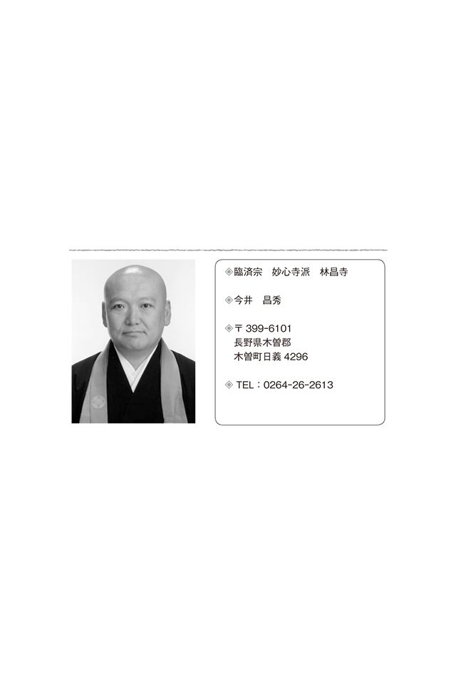

| 『般若心経』を読み解く(あさ出版電子書籍) | |
| 現代禅研究会 | |
| (2013) | |
般若心経全文
〔仏説摩 訶 〕般 若 波 羅 蜜 多 心 経
観 自 在 菩 薩 行 深 般 若 波 羅 蜜 多 時 照 見 五 蘊 皆 空 度 一 切 苦 厄
舎 利 子 色 不 異 空 空 不 異 色 色 即 是 空 空 即 是 色
受 想 行 識 亦 復 如 是
舎 利 子 是 諸 法 空 相 不 生 不 滅 不 垢 不 浄 不 増 不 減
是 故 空 中 無 色 無 受 想 行 識
無 眼 耳 鼻 舌 身 意 無 色 声 香 味 触 法 無 眼 界 乃 至 無 意 識 界
無 無 明 亦 無 無 明 尽 乃 至 無 老 死 亦 無 老 死 尽 無 苦 集 滅 道
無 智 亦 無 得 以 無 所 得 故 菩 提 薩 埵 依 般 若 波 羅 蜜 多 故 心 無 罣 礙 無 罣 礙 故
無 有 恐 怖 遠 離 〔一 切 〕顚 倒 夢 想 究 竟 涅 槃
三 世 諸 仏 依 般 若 波 羅 蜜 多 故 得 阿 耨 多 羅 三 藐 三 菩 提
故 知 般 若 波 羅 蜜 多 是 大 神 咒 是 大 明 咒 是 無 上 咒 是 無 等 等 咒 能 除 一 切 苦
真 実 不 虚 故 説 般 若 波 羅 蜜 多 咒 即 説 咒 曰
掲 帝 掲 帝 般 羅 掲 帝 般 羅 僧 掲 帝 菩 提 僧 莎 訶 般 若 （波 羅 蜜 多 ）心 経
唐三蔵法師玄奘訳
（咒 は現行呪 。掲 は現行羯 。帝 は現行諦 。般 は現行波 。僧莎 訶は現行薩娑 訶。蘊（うん ）の読みは現行おん ）
※現行とは、臨済宗日常経典のこと。
現代禅研究会 意訳『般若心経』（現行）
摩訶 般若 波羅蜜多 心経
『般若心経』は、かたよりこだわる心を自らの働きかけによって、本来の健康な心に立ち帰らせる実践の教えです。それには般若（心の智 慧 ）を働かせ「柔軟な自分」に目覚めることです。
智慧とは、知識や知恵ではありません。
知恵は自分の都合やメリットを加味した考えで、それで判断し行動すると自己中心的な自分を形成します。この自己中心的な自分自身に、私たちは心身を浪費し疲れさせてきたのです。
智慧は「柔軟な自分」に気づかせてくれます。この柔軟な自分の世界を「般若波羅蜜多」といいます。
観自在 菩薩
行深般若波羅蜜多時
照見五蘊皆空 度一切苦厄
観自在菩薩は、人々の悲しみや苦しみを心の眼で素直に観 る菩薩です。常に智慧を働かせ、その心は柔軟です。
菩薩とは、智慧を働かせ自己を空 ずる修行を積む人ですから、苦しいことに遭遇してもその苦しみを素直に受け入れ、苦しみとともに生きることができます。
舎利子 色不異空 空不異色
色即是空 空即是色
受想行識 亦復如是
舎利子は、釈尊十大弟子の中で、智慧の働きがトップと称されるお弟子さんです。
「色 」は形あるもの、さまざまに起こる事象を指す言葉です。私たちの心身も「無常」であり、歳を重ね老い、病気を患い、必ず臨終を迎える「空」なる存在です。
智慧によって、私の存在や思考も片時も留まらない「空」であることがわかります。
すべてが「空」と自覚できたら「今、ここ」に全力で生きることを知らされます。そこにかけがえのない私の命が輝きます。
舎利子 是諸法空相
不生不滅 不垢不浄
不増不減
『般若心経』の教えの柱は「空」です。
すべての存在は空であり「不生不滅 不垢不浄 不増不減」だとします。
「空」を鏡にたとえると、鏡は前にあるものをありありと映しだし、ものがなくなれば跡形もなく消し去ります。そしてもとの鏡のままを保ちます。空の心も然 りです。
是故空中 無色無受想行識
「空」は、かたよらない、こだわらない、とらわれない自由自在な世界です。
無眼耳鼻舌身意
無色声香味触法
無眼界乃至無意識界
私たちは物事を認識するとき、六つの感覚器官を通して情報を得ます。しかし、その情報は必ずしも正しいとはいえません。私たちの知恵は、自分の都合やメリットにとらわれてしまうことが、たびたびあるからです。この認識が私の人生を迷わせ悩ませてきたのです。
そこで自分の都合やメリットによる分別にとらわれない自由自在な心身を働かせねばなりません。それが心身を空ずることです。
無無明亦無無明尽
乃至無老死 亦無老死尽
仏教に「因縁の法」があります。私が存在するには、原因とそこに関わる幾多の縁が不可欠であり、原因だけでも縁だけでも私の存在にはつながりません。人間の迷いや苦しみの因縁を順番に探求した「十二因縁」があります。
十二因縁とは、「無 明 →行 →識→名 色 →六 入 →触 →受→愛→取→有 →生 →老死」であり、無明が苦しみの根源とわかれば、無明があってもくらまされなくなります。このいずれも空ずることが肝要であることがわかります。
無苦集滅道
「苦 集 滅 道 」を「四 諦 」といいます。「苦諦・集 諦 ・滅諦・道諦」の教えです。苦諦とは苦しみ。集諦とは苦しみの原因。滅諦とは苦しみを制すること。道諦とは苦しみを制する方法です。
無智亦無得
以無所得故菩提薩埵
智慧にもこだわらず、そこから得る空にもこだわらないことが肝要です。何物にもこだわってはならないのです。
依般若波羅蜜多故 心無罣礙
智慧の働きによって心安らぐ人は、心にこだわるもの、障りを持ちません。
無罣礙故
無有恐怖遠離一切顚倒夢想
究竟涅槃
こだわるものがないから真実を見聞し、すべての心配にわずらわされることがなくなります。これが私たちの求めるべく究極の安らぎ、「しあわせ」です。
三世諸仏 依般若波羅蜜多故
得阿耨多羅三藐三菩提
仏さまは、いつでもどこでも智慧の働きによって心が安らいでいます。それは「空」がわかるからです。本当の自分を知っているからです。
故知般若波羅蜜多 是大神呪
是大明呪 是無上呪
是無等等呪 能除一切苦
真実不虚
智慧の完成は、絶大で明るく無上で比類のない歓びです。人生のすべての苦しみが除かれた真実の世界です。智慧を働かせる人の歓喜の言葉に「至った、至った、彼岸に至った。完全な彼岸に至った。ここに悟りが成就した。めでたい」とあります。
故説般若波羅蜜多呪
即説呪曰 羯諦羯諦
波羅羯諦 波羅僧羯諦
菩提薩婆訶
般若心経
いまだ悟りに至らない私たちは、迷いのもとになる自己中心的な妄念を消し去るために、この歓喜の真言を復唱します。
「羯 諦 羯 諦 波 羅 羯 諦 波 羅 僧 羯 諦 」と一心に唱えると、その結果やはり功徳があります。
もちろんそれをはじめから期待してはいけません。
①都合やメリットによる妄念を忘れる。
②心身が清々して気力が満ち、落ち着く。
③呼吸が長く、気も長くなり、私情に走らない。
④長い呼吸は酸素を充満させ、血液のヘモグロビンと結合して心身中の細胞が活性化される
空とは日常での実践のみです。『般若心経』を頭で理解しようとするのではなく、身体で体験しましょう。
まえがき 生きるための『般若心経』
日々の生活や仕事で、戸惑ったり考えすぎてしまったり、心配や不安で生きる気力をなくしてしまったりすることはありませんか。
でも、そんなとき、「スカッとしたい」とか、「心を軽くしたい」と思って、いわゆる「Ｈｏｗ ｔｏ」ものを読んでも、心が軽くなるのは一時的なものではありませんか。
本当に心を軽くしようと思ったら、悩みやモヤモヤなど、心中の不要なものやガラクタを整理し、捨てる――心の大そうじをすることです。
心がイヤなものでゴチャゴチャになっているから、毎日がつまらなくなったり、暗いものになってしまうのです。
私は、心を大そうじし、軽くする薬として、『般若心経』をおすすめします。
「お経」と聞くと、どうしても、「お葬式」や「法事」などを思い浮かべてしまう方も多いかもしれませんが（そもそも仏教にそのイメージが強いのでしょうね）、決して、「悪いことをすると地獄に行く」といったような、〝死んでから〟の教えばかりではありません。
仏教、そして『般若心経』も、生きるための智慧に溢れています。
遠い遠い昔から本質的には変わっていないであろう、さまざまな「生きることについての悩み」に関して、三百文字足らずのこの「小さなお経」は、人々の心の支えや薬になってきました。
そして、何千年とたった今でも、その教えは色あせてはいません。
本書では、この『般若心経』を、「お坊さん」という枠を越え、社会でバリバリ活躍している、「現代禅研究会」精鋭の二十人の禅僧が、自らの体験からやさしく読み解いてくれます。
「現代禅研究会」は、東京・三 田 にある龍源寺（臨済宗妙心寺派）の前住職・松 原 哲 明 師が主宰をされていた臨済宗・黄檗宗の禅僧が集まった自主勉強会です。
大変残念なことに、松原哲明師は二〇一〇年に亡くなられましたが、今もその遺志を継ぎ、夏は北軽井沢の日月庵で、冬は静岡のサールナートホールで合宿しています。
メンバーの年齢は私と同世代から、私の子どもより若い人たちまでおり、心を裸にして、世代を超えて激論を交わす法友ならぬ戦友なのです。
合宿の際はもちろん、話すたびに彼らのパワーに圧倒され、刺激をいっぱいもらっています。
本書の巻末に、彼らのプロフィールが紹介されていますので、ぜひ訪れてみてください。きっと魅了されてしまうことでしょう。
最後になりましたが、この本を松原哲明師の真前に献じ、これからの現代禅研究会のさらなる発展を誓いたいと思います。
そして本書を発行するにあたり、丁寧に校正してくださった執筆者の一人でもある、足立宜了師に深く感謝申し上げます。
藤原東演
【目次】
６ 菩薩──「自分に厳しく」「他人に優しい」──わき上る思い
８ 照見五蘊皆空 度一切苦厄──「苦しみ」が「苦しみでなくなる」とき
10 色不異空 空不異色 色即是空 空即是色 受想行識 亦復如是──自分の物差しをはずしてみると
11 舎利子 是諸法空相 不生不滅 不垢不浄 不増不減──濁るなら、どっぷり濁るのもまたあり
13 無眼耳鼻舌身意 無色声香味触法 無眼界乃至無意識界──「こんな自分でもいいんだ」と認め許す心
14 無無明亦無無明尽 乃至無老死 亦無老死尽──人生をより深く味わう
15 無苦集滅道 無智亦無得 以無所得故菩提薩埵──「いろいろなこと」を乗り越えるヒント
16 依般若波羅蜜多故 心無罣礙──自分の中の「前向きなチカラ」
17 無罣礙故 無有恐怖遠離一切顚倒夢想 究竟涅槃──「自分を活かす」ための方法
18 三世諸仏 依般若波羅蜜多故 得阿耨多羅三藐三菩提──「こだわるな！」にすらこだわらない自己
19 故知般若波羅蜜多 是大神呪 是大明呪 是無上呪 是無等等呪 能除一切苦 真実不虚──苦しみが自分を育ててくれる
20 故説般若波羅蜜多呪 即説呪曰 羯諦羯諦 波羅羯諦 波羅僧羯諦 菩提薩婆訶 般若心経──「こだわり」をどうしても捨てきれないときに
１ 摩訶──「よろしくお願いします」
臨済宗 妙心寺派 鳳源寺 和田牧生
『般若心経』は六百巻にも及ぶ『大般若波羅蜜多経』のエッセンスを、わずか三百文字足らずにまとめた短いお経です。
仏教語辞書で「摩訶」を引きますと「《（梵）mahāの音写。大・多・勝の意》仏語。優れていること。大きいこと。偉大なこと。他の語や人名の上に付いて美称として用いることも多い」とあります。
摩訶不思議の「摩訶」も同じです。我々の考えでは及びもしないほど、とても不思議なことです。
「大自然」と「小さな人間」
「摩訶」が「大」という意味ならば、どんな「大」でしょうか。
「大」の反対は「小」です。「大きい車」と「小さい車」、「大きい山」と「小さい山」のように同じもの同士を比較してよく使います。
また、違うものが対 峙 しても大小の関係があります。たとえば「大自然」と「小さな人間」という関係などがそれではないでしょうか。
「大自然」と「小さな人間」の関係をさらに考えてみましょう。
絶景の素晴らしさや雄大さを目 の当たりにすると、自分という人間の小ささを実感します。東日本大震災のような大きな自然災害、その猛威に対しては人間の営みのひ弱さを実感せざるを得ません。
自分の小ささを痛感したときに「大」、「摩訶」を感応します。
奥 田 元 宋 （一九一二―二〇〇三）を、ご存知でしょうか。
広島県双三郡八幡村（現・三次市吉舎町）出身の日本画家で、小学校四年生の頃から絵を描きはじめました。
一九三〇（昭和五）年に上京し、同郷の日本画家、児 玉 希 望 の内弟子として本格的な画家生活に入ります。
人物画や花鳥画を中心に創作していましたが、戦況悪化にともない郷里三次に疎開。古典資料もモデルも不足している中で、故郷の自然を写生することに没頭し、風景画に目覚めます。
その後数々の賞を受け、自然の風景を赤で表現することに傾倒していき、独自の画風を確立しました。
また、画業のほかにも宮中の歌会始の召 人 に選ばれるなど、短歌の世界でも傑出した才能をあらわしたのです。
自然と向き合うことが多かった奥田元宋には、
わが業の つたなかりけり 屋敷川の かそけき音に 耳を澄ませば
（奥田元宋短歌集『豊 饒 の泉 』読売新聞社）
と詠んだ「郷里に帰りて」という歌があります。
「絵で表現する」という自分の営みは、あの「せせらぎのかすかな音」というような自然の限りのない営みに比べれば、頭の下がる思いがするという内容です。
まさに、奥田元宋が大自然を実感した歌ではないでしょうか。
『般若心経』は自分を見つめるお経
私にとって「摩訶」を実感したのは、中学一年生で師匠とはじめて出会ったときだったように思います。
禅寺の子として生まれた私は、お寺での法要の折など普段から多くの近隣の和尚さんたちと出会う機会がありました。
お茶をいただくしぐさ、法衣に身をまとった読経姿など、和尚さんのイメージを自分なりに抱いていました。
あるとき住職であり、教員をしていた父が小僧さんを預かり育ててくれるお寺へ行ってみないか、とすすめてきました。
気は進みませんでしたが、父と一緒に、そのお寺に行ってみることにしたのです。
玄関であいさつをすませ、和尚さんの部屋に通されました。
そこには、今までに会ったことのない和尚さんがおられました。子ども心にも「スキがない」というか、心の底まで「すべてお見通し」というか......。
その和尚さんが自ら抹茶を点 ててくださり、父との間で話が進んでいきます。
お寺での生活、小僧さんとして準備すべきもの、転校先の学校のことなど、もう話は私が小僧さんとなるべき方向で進んでいるようでした。
ひと通り話がすむと、
「どうしますか？」
と和尚さんが私に一言。そのときなぜか、
「よろしくお願いします」
の一言が自然と口から出てきました。
あれだけ私が渋っていたのを、知っていた父はびっくり。
そのときの私は「小僧さんになる」ということが、どういうことかなど全然考えていませんでした。
ただその場の雰囲気、和尚さんのオーラというか、考える以前にその言葉が出てきたのです。
「この和尚さんならついて行ける」と「きっと導いてくださる」というようなことを肌身で感じたからです。今でも鮮明にそれを思い出せます。
その和尚さんに師匠となっていただき、今の自分があります。
そして、師匠が亡くなった今なお、間違いなく今でも私の心の支えとなって、「摩訶」――つまり、すぐれ、大きく、偉大な人として存在しているのです。
「摩訶」とは、実体験を通して感じる大きさだと思います。
その大きさを感じたときには、既に「自分の小ささ」や「自分の未熟さ」を自分自身が肌身で受け止められます。
『摩訶般若波羅蜜多心経』は、自分自身を見つめるお経です。
いいかえれば、自分の小ささが身にしみて「自ずと頭が下がる思いの般若波羅蜜多心経」、「よろしくお願いします般若波羅蜜多心経」ともいえます。
２ 般若──心の智慧
臨済宗 妙心寺派 正覺寺 足立宜了
「般若」と聞けば恐ろしい鬼の面 を思い浮かべます。江戸後期の儒学者、朝川善庵の著す『善 庵 随 筆 』では、その根拠に謡曲「葵 上 」に関わる一節を紹介しています。
光源氏の正妻の葵上にもののけがとりつき、その正体を暴こうとする巫 女 が『大般若経』を唱えました。
その巫女の声を聞いた、葵上にとりついていた鬼女が、「大般若経の声は恐ろしい」とおののく場面があります。
しかし、その舞台（謡曲）を見ていた人が、鬼女の訴えた「大般若経の声は恐ろしい」との声を巫女の声と聞き違え、鬼女が『大般若経』を唱えたものと勘違いをしてしまったのです。
この一件から鬼女のことを、「般若」と呼ぶようになったとのことでした。
そして同書には、「般若とは本来〝智慧〟のことである」と改めて記してありました。
「空 」へと導く般若
このように般若とは、もともとインドの言葉にあった智慧を意味する「パンニャー」を漢訳する際、それを音写して般 と若 をあてた言葉です。
般若という「智慧」は、頭で働かせる「知恵」ではなく心の働きです。
般若の智慧は「空」へと導いてくれます。
「空」とは「留まらない」ことです。それは常に移ろう「無常」の中でのすべての存在は「途中の一過程」の現象であり、実体として留まる存在はないとします。さらにそれぞれの存在は、自らの都合や立場という「我 」に留まらず、あるがままに現前しているとします。
ところが私たちが日常、心と思っている心は、思いのほか「我」に凝り固まった、不自由極まるものです。
こういった身 贔屓 から生ずる「我」に留まることなく、現実のあるがままを認許し受け入れるには、泣いているようで怒っているような般若の面のような葛藤にさいなまれる体験が欠かせません。
この葛藤を解きほぐすべく心を柔軟にして、「空」を受け入れるべく勇気と、受け入れられなかった自省へとつなげてくれるのが般若です。
この般若をお釈迦さまは誰もの心に宿る働きとし、この智慧によって「空」のままにいきいきと働く心を「仏 」と讃えられたのです。
泣き叫ぶ赤ちゃんがなぜ仏なのか？
この仏の心を赤ちゃんの心にたとえて、「仏の心は赤子の心」と山 田 無 文 老師が諭されました。
しかし、子育ての悦びも苦労も知らなかった私は、この言葉に素直にうなずけなかったものです。
確かに赤ちゃんは、ご満悦のときはとてもかわいく仏さまのようです。
ところがひとたび機嫌を損ねると、場所も時間もお構いなしにギャーギャーと泣きじゃくり、どうあやしても鎮まろうとしません。
なぜ、「こんなにやかましくて、いうことを聞かない赤ちゃんが仏なんだ」と納得ができませんでした。
子どものいない私は、そのことを母親から教わりました。
母親は八十歳を超えた頃から認知症の症状が出はじめ、年ごとに進行しました。その晩年は施設のお世話になっていました。
「今泣いたカラスがもう笑う」といわれるように、大声で怒っていたかと思えば、とたんに静かになって微 笑 んでいます。そうした母親の姿を見ていると無文老師の言葉がストンと腹に落ちました。
「二度わらし」という言葉があるように、赤子に還っていってしまう母親の姿から、仏とはいつもおだやかな、しなやかな、清らかなことではなかったことに気づかされたものでした。
「いつもニコニコ」が仏ではありません
仏教には、生前の迷いによって六つの世界をめぐる「六 道 輪 廻 」という思想があります。
六道とは、地獄道、餓 鬼 道、畜生道、修 羅 道、人間道、天道の六つの世界です。
しかし、実はこれは死んでからだけのことではありません。今 生 の私たちの心こそ、一日のうちにもおだやかであったり、腹立たしく波だったりと片時も留まることを知りません。
常に天道の人となり、地獄の鬼と化しているのです。
そして仏とは、いつもニコニコと天道で微笑んでいる人のことではなかったのです。仏といいかえられる空なる存在は、無常の理 のままに、心身をどこにも留めないからです。
「今、ここ」を「空」のままに、感情を喜怒哀楽のどの場面にも留まらせないことこそが「赤子の心」とたとえられた仏の心であり、それは「般若」という心の智慧によって現前するのです。
ところが私は、なかなか仏になりきれません。
さっきまで自分の思い通りにならないご縁にプリプリせねばならない私は、その苛 立 ちも、やがては時間が解決してくれて、すでに治まろうとしているにもかかわらず、そう素直には笑顔に戻れないのです。
照れくささやバツの悪さという「我」が邪魔をして、その感情を留めてしまいがちだからです。
一日のうちにも六つの世界を往来せねばならない私たちは、どの世界にも留まってはならなかったのです。
どんな人生の場面にも「かたよらず、こだわらず、とらわれない」生きざまにこそ仏の姿がありました。
空なるままに
その母親が二〇一二（平成二十四）年の五月一日に他界しました。
四月の下旬に、主治医の先生から「もう食べられなくなって一週間ほど経ちました。いよいよ血圧も下がり気味ですから、そろそろ覚悟をしておいてください」と、文字通り引導を渡されてしまったのです。
その頃の母親は、口からの食事が摂れず鼻にチューブを通して栄養をとっていました。いよいよ身体がその栄養分も受けつけなくなり、吐き気をもよおすようになってきたからです。
家族が緊張の面持ちで病院へと向かいました。呼びかけても応答のない母親の枕元に置かれた機械は、せわしく数字やグラフを動かすばかりで、それを読み取れない私たちは余計に不安を募らせるばかりでした。
ベッドの両脇からしばらくの間、母親を無言で見守っていましたが為す術もなく、その日はひとまずその場をあとにしてきたのです。
その晩、午前三時頃に突然父親から「病院に連れて行ってくれ」と起こされ、いわれるままに車を走らせました。
ベッドの母親は、昼間とは違って大きな目をカーッと見開いて、悲しいような怖いような形相で天井を睨 んでいました。その目に私たち家族の姿を映せる余裕すら感じさせない様子に、父親は何かを納得させられたかのようでした。
その翌朝、「今日は何時に病院へ行こうか」と家族で相談をしながら朝ご飯を食べているところへ「危篤です」との電話が入りました。
病室に着いたときにはすでに母親の呼吸はなく、枕元の機械だけがしきりに赤いランプを点滅させ、ブザーがしきりと鳴り響いていました。
看護師さんが母親の身繕いをしてくださる間、病室の窓から外の景色を眺めて待ちました。
道路には朝の通勤の自動車が往来し、歩道をジョギングする人、その上をツバメたちが旋回する風景がのぞめました。何も特別なことがなかったかのような、いつもの朝の風景でした。
私の母親が今、亡くなったというのに世の中の様子はいつもと少しも変わらないのです。
私たち家族の感情を置き去りにしたまま、それに一向に構うことなく留まろうともしない。「我」に留まり世間を振り向かせようとあがく私に見向きもしない、これが「空」の世界かと、そんなことを一人ボーッと、他人 事 のように考えていました。
今、父親の部屋に置かれた、少年のような散切り頭の母親の遺影を眺めていると、私が子どもの頃に昼寝から目を覚まして、母親の姿を見つけられないことに泣きじゃくりながら家中を探しまわったことが思い出されます。
晩年から施設のお世話になっていた赤子に還った母親にとって、いつも隣に家族の姿がなかったことは同じように寂しかったに違いありません。
まして家族に看取られることなく、この世を去っていかねばならなかった母親の思いをしのべば、いい尽くせない懺 悔 の念に駆られます。
それでも、それもこれも認許しながら母親は般若のままに成仏してくれました。
そして改めて「空」という「自分たちの思い」ばかりを通せない世界を見せつけてくれた、その死にざまは、遺された私たちをも成仏させてくれたように思います。
成仏とは「仏に成る」ことです。人は亡くなったらみんな仏です。
寿命が尽き、生きる活力ともなる「我」に留まる必要すらなくしてしまったことは「空」そのものに立ち帰ることだからです。できることなら今生に「般若」のままの仏になりたい。無常の中にあっての現象ならば「今・ここ」のかけがえのなさを謳歌したい。
自分の「我」だけに留まらない、柔軟な心のままでいたいと願います。
３ 波羅蜜多──日常の何気ないところにこそ
臨済宗 妙心寺派 傳宗寺 多田曹渓
波羅蜜多は「パーラム・イター」といい、「彼岸」という迷いのない安らかな境地に至ることです。あるいは「完成」と訳します。
その「安らかな境地」とは、私たちが「眼耳鼻舌身」といった五感で観じたものを、こだわりなくあるがままに心に受け入れることです。
それを仏教では「悟り」といい、『般若心経』では「空 」というのです。
ただ、安らかな境地というのは、別に遠くにあるわけではありません。迷う心と相反するのではなく表裏一体なのです。
これは「よい」「悪い」というこだわり
小中学校の裏手にある私のお寺は、図工の授業になると子どもたちが画板を抱えて写生にやってきます。最初は落ち着きなくふざけながら描いているのですが、しばらくすると夢中になっているようです。
私が彼らの絵をのぞきこむと、歪 んだ本堂の柱や屋根、異様に頭でっかちのお地蔵さんが描かれています。
ついつい、昔から絵心がある私は、上手に描いてほしくて「こうしたほうがいいよ。ああしたほうがいい」なんて血が騒いで口を出してしまいます......。
私が昔から絵心があるのは、看板屋の息子に生まれたからです。
父の仕事柄、幼稚園の頃から自分で画用紙を買いに行っては、赤塚不二夫の「おそ松くん」「天才バカボン」といったキャラクターを毎日描いていました。
小学生の高学年になるとスーパーカーブームのまっ盛りで、フェラーリといった自動車の絵ばかり描くようになりました。それを学校に持っていき、みんなに見せ喜んでもらうのを、私も楽しんでいました。
この頃から絵は自分で描いて喜ぶのではなく、それを人に見せるのが楽しいという思いが生まれてきました。
そんな子ども時代を過ごしていたものですから、今も旅するときはいつもスケッチブックを持って、訪れたところの風景を描いています。
それが自分では楽しくて......。
そのうち、人から重宝がられて、冊子のイラストを頼まれたりするようになりました。それはそれで悪い気はしませんが、「楽しい」という気持ちとは別のような気がします。どちらかといえば、気持ちよく描けないからです。
「よい絵を描きたい、喜んでもらえる絵を残したい」という気持ちが強くなってしまい、楽しさより苦しさのほうが強くなってしまうのです。
どうやら私は、絵を描くときに生ずるこだわりから、「これはよい、悪い」という分別を生じてしまうようです。これを仏教では迷いというのです。
と同様に子どもたちに「上手に描いてほしい」と思う気持ちも、迷いなのかもしれません。
「なんだかよくわからない絵」が素晴らしい
そもそも、「風景を描くこと」を写生といいます。
これはありのままに生の風景を写し出すことをいい、解説で述べました「波羅蜜多」の「安らかな境地に至る」ための心の働きと同じといえるでしょう。
正岡子規はその写生を、文章や俳句の世界にも活用しました。
それまでの日本では書き言葉と話し言葉は別のものとしましたが、この子規によって言文一致体、つまり口語文体が出現したのです。
まるで絵を描くようにして生まれた作品が、子規の俳句でした。
その正岡子規が亡くなる二十日前の『病牀六尺』に、次のようなことが書かれています。
日頃から子規は、草花帖を枕元に置き庭先の草花を描きしたためていました。いよいよその草花帖が完結するので、何か最後のページを飾るにふさわしい力強い絵を描きあげようと朝顔に目を向けます。
ところが、なかなか描けないでいると、そこに七歳と十歳ぐらいの女の子がやってきました。
最初は子規の描いている絵を興味深くのぞきこんでいましたが、なかなか筆の進まない様子に飽きてしまいます。子規があきらめて描くことをやめてしまうと、女の子たちは子規の草花帖をパラパラとめくりながら、その中にあるサクランボの絵をお手本にして、絵を描きはじめました。
七歳は七歳の子らしい絵を、十歳は十歳の子らしい絵を描きあげると、子規の朝顔の絵を完成するのを待たずにさっさと帰ってしまいました。
そのあと子規は、次のようなことをつぶやいています。
「見ると七つの子のサクランボの画はちゃんとできている。十になる子のほうを見ると、これもサクランボがさらに確かに写されている。原図よりはかえって手際よくできているのである」と。
原図というのは、子規の描いたサクランボの絵のことです。
当然、子規の絵のほうが上手に決まっているはずなのに、子規は七歳と十歳の子どもの絵のほうが素晴らしいといっています。
どうしてでしょうか？
それは、草花帖の最後にふさわしい、力強い絵を描こうとして、そこに絵を描く苦しみ、こだわりが生じてしまったことを子規自身が知っていたからです。
その反面、彼女らの絵はありのままに素直に、子規のサクランボを映し出した絵だったのではないでしょうか。それを子規が認めたのです。
彼女たちが帰ったあと、子規は朝顔の絵を描くのをやめ、大きな葉を改めて描きあげました。
何回も描いては消した紙は質が悪く、絵の具をはじいてしまうため、なんだかよくわからない絵が完成されました。にもかかわらず、その絵は素晴らしく、「とてもおもしろい」といわれています。
子規はそこで、本来の絵を描く楽しさに気づいたわけです。
写生は、「ありのままにあるがままに映し出すことだ」ということを、改めて彼女たちから学びとったというわけです。
「上手」も「下手」もない
上手、下手にこだわれば、絵が上手に描けたときは満足できますが、上手に描けないときにはそうではなくなります。
しかし、子規が感じた安らかな境地とは、絵を上手に描きあげて満足することではありませんでした。上手に描いたところだけが安らかな境地であるならば、下手な絵を描いたときは不安で不快な境地も存在してしまうからです。
「上手も下手もない」といった分別のないところに、安らかさを見出したのです。
そう思えば、私もまた図工の授業に写生に来た子どもたちの絵――歪んだ本堂や頭でっかちのお地蔵さんを見て、「ああだこうだ」と思うより、ほのぼのした楽しい気分にならなければいけないのです。
子規のように素直にその絵を見ることができれば、日頃見慣れたお寺の風景に、新鮮な風を運んでくれる気もします。
お釈迦さまの教えには、誰もが皆生まれながらに、仏さまの心を持っていると説かれてあります。
とらわれず、あるがままに描いていく子どもたちの姿が仏であり、また画用紙の中のユニークなお地蔵さんも、歪んだ本堂も仏でした。
そして、それに気づかせてくれた絵や子どもたちに、ほっと優しい気持ちになり喜びや楽しさを感じる私も仏なのです。
看板屋の息子から何もわからないまま、何も考えることなくお寺の世界に入った私。ただ、修行の厳しさを真に受けたとき、大げさかもしれないけれど「大変なところに来てしまったな」と、恐怖すら覚えました。
それは不安で不快な境地そのものでした。それでもお寺の世界に飛び込んで二十五年が経った今、お釈迦さまの教えを学びながら少しずつ安らかな境地に至ろうとする自分がいます。
波羅蜜多（安らかな境地）とはどこにあるのでしょうか。それは遠くにあるわけではありません。私たちの足もとにあったのです。
日常何気ない些細なところに、どこにでもあったのです。それに気づけるか気づけないかは、私たちの心次第ではないでしょうか。
４ 心経──私は母を信じています
臨済宗 妙心寺派 龍松寺 武久寛海
「心経」とは、そのままで「心のお経」と読めます。
「心」は漢字としてもインドの古語（サンスクリット語）でも、心臓や心髄というような大切なものをあらわしています。
『摩訶般若波羅蜜多心経』は経首、経題（いわゆるタイトル）と呼ばれ、お経の全体がどういうものかを簡潔にあらわしています。
「心経」とはこれまで読み進んでこられた『摩訶般若波羅蜜多』の、心のありかたを説いたとても大切な教え（心髄たる経典）という意味です。
『般若心経』というお経をまったくご存じない方でも、ことわざや、詩や、標語といったたぐいの、好きな言葉というものがあるかと思います。
元気が出ないときにそれをつぶやくと、少しは「シャン」とするといったような。
それと同じに考えて、心経は「心の杖 言葉」といいかえても、いいのかもしれません。
心、凝り固まっていませんか？
私は小学一年生のとき、『般若心経』を祖母から教わりました。
祖母と一緒に寝ていた私は、短くお経を区切って唱えるお婆ちゃんの通りに復唱しながら、いつのまにか寝てしまうという感じ。
しばらくして一人で唱えられるようになったとき、祖母はとてもうれしそうでした。「これば覚えたらもう大丈夫。もうなあんも怖いもんはなか」といいながら。
今は僧侶ですから、当然毎日お経をあげます。
読経するとき、ときどき祖母を思い出すのです。「お経の功 徳 」とか「摩訶不思議な力」とか、そんなことには関係なく、自分にとって大切な「心の杖言葉」となっています。
「人はみんな自分の世界を生きている」といいます。よく「あの人は自分の世界にひたっている」などと揶 揄 することもあるわけです。
しかし、それが普通なのではないでしょうか。
人にはそれぞれに「価値観」というものがあり、その物差しは自分でつくったものです。
生まれてから今日までにつくり上げた自分だけの世界ですから、人と同じ意見とばかりとはいきません。当然ながら衝突することもあります。
だから意見交換は徹底して行われるべきだと思います。ただ、口論のもとが自分の思い込みや、いらぬ計らいにあることも少なくないような気がします。
そのことでいちばん苦しむのは本人であり、相手もまた悩みます。
柔軟な心持ちはよりよい生活の基本です。『般若心経』はそれを教えています。
会議や講習会で席が決まっていない場合、各人に自分で決めた指定席というものがあるそうです（自分だけの世界のルール）。前に座る人はいつも前に。うしろの右寄りにいつも座る人、など。
この座る場所を変えると、その人とは思えないような、斬新な意見をいう傾向が見られるとか。位置が変われば目に入る景色も変わります。いつもとは違う思考回路ができあがるというわけです。
「立ち位置を変えてみる」というちょっとした工夫で、凝り固まった自分の世界に新しい空気を通すこともできると思います。人が生きていくとき、当然よいことばかりではありませんが、工夫次第でドラマティックに変化する可能性も、多々ありますからね。
風が動いているのか 幡 が動いているのか
六 祖 慧 能 という禅僧と、二人の僧の話です。
風になびく幡を見ながら、二人の僧がいい争っていた。
「幡が動いているのだ」
「いや、風が動いているのだ」
二人とも自分の説が正しいことを主張し、まったくゆずらなかった。
そこに通りかかった慧能がいった。
「これは風が動いているのでもないし、幡が動いているのでもない。あなたたちの心が動いているのだ」
二人の僧は、畏れあわてた。
皆さんならどうお考えになるでしょう。
これは禅宗で有名な「非 風 非 幡 」というエピソード。
一方は、「風はそれだけで目に見えないから幡が動く」といい、もう一方は、「幡は風なしには動かないから風が動く」といいたいのでしょう。
そして、たまたま居あわせた慧能禅師に「あなたがたの心が動いているのだ」と指摘され、ただ者でないことに気づいたと。
まるでドラマの金八先生のセリフのようですが。
私は、こう考えました。
自分が気に止めなければ、風も幡もないのと同じ。幡があって、風があって、それを見る自分が一つになったときにはじめて、パタパタ幡がはためく情景になります。
ちゃんと心を柔軟に働かせれば、風を感じ、幡がなびくのを見ている「自分」が確かにここにあるということが、とても貴重だとわかると思うのです。
自分を信じないと、人も信じられない
海外で仕事をするとき、「どんな信仰を持っているか」と、質問をされると聞きます。信ずるものがない人とは信頼関係は結べないという考えです。
たまたまアメリカ出張から戻った従兄 に尋ねると、やはりそう質問されたそうです（もっとも、僧のいでたちの私にそんな質問はまずないと思いますが......）。
先方の仕事相手から、「あなたは何を信仰していますか」といきなり聞かれ、
（○○宗○○派、○○教と英語でどういうのか、ブッディスト？？ でいいのか？）ちょっと悩んで、従兄はとっさに「I believe in my mother（私は母を信じています）」と答えました。
相手は「では私と同じですね」といって、その後スムーズに会話が運んだといいます。それにしても、「自分と同じ」とすぐに返せるだなんて、相手も柔軟な思考と心の持ち主だと感心しました。
一方の従兄にしてみれば苦し紛れにごまかしたのではなく、高校生のときに亡くした母親の言葉を大切にしていたからこその答えでした。
「ご飯は残さないように」とか、「早起きをしなさい」というよくある教えです。
彼はいつも食事をきれいに食べ、早起きです。朝は、静かにものを考える習慣を持っています。
自分を産み育ててくれた母親の心根を信じることは、それにつながる自分の心を信じることにつながります。自分が信じられないと、人も信じることができません。
いいことも、悪いことも「どん！」と受け止める力
支えとなる教えや杖言葉は、お経に限らず、救いとしてたくさんあると考えます。残念ながら、多くの人はそれに気づかないだけのような気がします。
自分の気持ちがおぼつかないとき、『般若心経』を唱えると落ち着いて、物事がうまくいくという人も案外多いものです。
私も、悩み多く、落ち込むことがよくあります。
努力しても状況が変わらないということも頻繁にありますから、「そういうことも普通にある」と達観する訓練をしています（が、なかなか。しかし精進あるのみ）。
状況が好転しないなら、あとは自分の気持ちの問題です。なるべく気に病まないように、無心にお経を唱えてみます。これで、たいがい気が楽になるから不思議なものです。
ときどき、「楽しい楽しい」とつぶやいたり、「三百六十五歩のマーチ」を歌ってみたりもします。
従兄にはお母さんの思い出という心の杖言葉（教え）があり、私にとっての『般若心経』は祖母への思いを含んでいるから、とてもありがたい気持ちになれます。
『般若心経』は、本当に深遠な内容です。
人には日常のいいことも悪いこともひっくるめて、すべて受容できる力があり、それは気持ちの育てかたであることを教える、（あなたの）心の経であることを示しているのでありましょう。
コラム 小僧寺とは
小僧寺とは小僧さんの寺ではなく、小僧さんを育てているお寺のことです。イメージはアニメ『一休さん』の現代版。いや、昭和版でしょうか。
禅僧になるためには修行を重視します。専門道場（「コラム 修行道場とは」参照）での修行年数がそのまま禅僧としての資格に反映します。
しかし、小僧としての生活（修行）年数はまったく反映されません。専門的に禅の修行をするための本当の下準備期間でしょうか。
また、全国の小僧寺といわれる寺院での小僧さんとしての生活ぶりもさまざまのようです。そんな小僧寺も現在はとても少なくなりました。
私を育てていただいた小僧寺の一日は、
５時半～ 起床、朝のおつとめ、そうじ
７時頃～ 朝食、お経の稽古
８時過ぎ～ 学校
16 時頃～ そうじ、檀家参り（毎日ではない）
19 時～ 夕食、勉強時間、自由時間
21 時～ 就寝
だいたいこんな感じでした。
土日となると学校へ行くところが、法事になっていました。私たちより以前の先輩方に聞くと、法事・葬儀になると学校も早退だったとか。私たちの頃はそんなことはありませんでした。
専門道場へ行くようになると、その経験が役立つのはあたり前ですが、妨げになることもあったように思います。
お寺での仕事ができますから、手抜きをしたり横着になったり。
つたない私の経験から振り返りますと、小僧寺での修行は「根を張る」修行で、専門道場での修行は「幹を太らせる」修行だと思います。
そして何とか禅僧として枝葉を付けることができるのじゃないかと。
（和田牧生）
５ 観自在──「とらわれ」から抜け出す方法
臨済宗 国泰寺派 吉祥寺 山田真隆
『般若心経』の本文は、この言葉からはじまります。
冒頭にこの「観自在（＝自在に観 る）」が置かれているのは、『般若心経』に示す教えを実践するために、「自在に観る」ということが必要不可欠だからです。
それは、物事にとらわれることなく、あらゆる方向からよく観察するように観るということです。たとえば、
おのが目の 力で見ると思うなよ 月の光で月を見るなり
という短歌があります。
私たちは自分の眼の力で、ものを見ていると思っています。自分の眼さえあればものは見えると。
しかし、実際はこの短歌がいうように、自分の眼力だけではものは見えません。観自在の眼で観れば、光というものがあってはじめて見える、月を見るにも月の光で見ているとわかります。
そういった働きが、観自在です。
また観自在という働きは、「どこかへ行って学んでくるものでもなく、獲得してくるものでもない」といえます。
江戸中期の禅僧、白 隠 慧 鶴 禅師が書かれた『般若心経』の注釈書『毒 語 心 経 』にも、「観自在」とは「人 人 具 の大 士 」と、一人一人それぞれに具 わっている仏さまの働きである、とあります。
人を山にたとえれば、山の中に般若（智慧）というダイヤモンドが埋まっていて、それは掘り起こさないと使いものにならない。掘り起こす道具が観自在だということです。
具わって（埋まって）はいるが、そのままでは使えない。自在に観るという訓練をくり返すことによって、般若の智慧が掘り起こされ、心がいつでも自由に働くようになるのです。
たとえ一滴の水でも
江戸時代の末、岡山県の曹 源 寺 という禅寺に、儀 山 善 来 禅師という方がおられました。当時は「禅を修行するならこの儀山禅師につけ」、といわれるぐらい、高名な禅僧でした。
その儀山禅師のもとでお悟りを開かれた、京都天龍寺の管長をつとめられた滴 水 宜 牧 禅師という方の話です。
いくつも草鞋 を履き潰して行 脚 をし、曹源寺にて入門が認められ修行することになった滴水禅師は、ある日、儀山禅師のお風呂をお世話することになりました。
滴水禅師が儀山禅師に湯加減を尋ねますと、「少し熱いから水がほしい」とのこと。
滴水禅師が桶 で水を汲み湯船に入れ、ほどよい湯加減となったので下がろうとしたとき、桶の底に少し残っていた水を、その場でパシャッと捨ててしまいました。
すると儀山禅師は、「何ということをするのか。たとえ一滴の水でも、植木にあげればその水が無駄にならず活かせるではないか。ただそこにパシャッと空けたのでは水が死んでしまう。一滴の水でも活かして使わんといかん」といわれたそうです。
桶の底の残り水、普通に考えれば「少しの水ぐらい」として誰も気にも止めないでしょう。
しかしお風呂に入れた水と、桶の底に残った水は、同じ水なのです。
ここで観自在の働きで「少しの水でも」と気づけば、自ずと活かす方法が浮かんでくるはずです。
滴水禅師は、このこと以降、いわれたことをいつまでも肝に銘じておくために、滴水という号になったそうです。
未使用も使用ずみも「同じ紐」
また次元はまったく違いますが、私の修行時分にもこんなことがありました。
私は当時、修行僧を指導される老 師 の身のまわりのお世話をする役についていました。
ある日、老師宛に小包が届いたので居室まで持っていくと、老師から「開けてみなさい」といわれました。
小包にかけてあるナイロンの紐 をハサミで切ろうとしたとき、老師が「できるだけ長くなるように切らんとあかん」といわれました。
その言葉の真意がわからず、私の手は止まり心が固まってしまいました。
すると、老師は「こいつはわかっとらんな」と思われたのか、即座に「その切った紐は、ワシが草木を育てるのに使うから、それには長いほうが使いやすい。だから長く切れといっとるんだ」と怒鳴られました。
「ああ、なるほど」とようやく老師のいわんとされることがわかると、今度はどう切ったら長くなるのかを考えなければなりません。
そしてまた固まってしまいました。
せっかく持ってきたハサミなのに、まだ紐の一本も切っていません。私は動けないままです。
すると老師は「我々の修行というのは何も坐禅だけじゃないんだよ。こういうことも修行なんだよ。だから、いつもこういうものをどう活かすかを考えておかんといかんよ、まあ今日はワシがやるから、よく見ておいて次からやるんじゃぞ」といわれました。
先ほどの儀山禅師と滴水禅師の話は水を活かすということでしたが、私の場合はナイロン紐でした。荷物にかけて使用ずみの紐も未使用の紐も、どちらも同じ紐です。
一回使用した紐が、もう使えないということはありません。
ですが、私は自在に観るということを忘れ、使用ずみの紐をまた何かに使うという発想は、まったくありませんでした。だから老師のいわれる意味がまったくわからなかったのです。
そこで改めて老師が手入れされている草花を見ると、確かにいくつも結び目のあるナイロン紐が使ってありました。毎日庭のそうじをしていても、そんなことも観ていない、「観自在」ではなかったことを恥ずかしく思いました。
ものを活かして自分も活かす
ご紹介した通り、私はもちろんのこと、人は必ず何かにとらわれています。とらわれていることで本当のことが見えなくなり、自分に「観自在」という働きがあることすらも、気がつけなくなっているものです。
観自在の眼で観れば、もともと世の中のすべてのものは、ちゃんとした働きを具えています。桶の残り水やナイロン紐の切れ端でも、私たちに具わる観自在の働きをもってすれば、いろいろなことに活かせるのです。
つまりそれはものを活かしながら、自分も活かすということにつながります。
しかし私たちは、物事がうまくいかないと、どうも自分には何かが足りない、足りないせいでうまくいかないと考えて、何かを付け足そうとします。
それはもともとある観自在の働きを、死なせてしまうことです。
そういうときにこそ、身のまわりを観自在で見直し、本当に足りないのか確認する必要があります。
『般若心経』の核心に触れるには、この「観自在」という行いが不可欠です。
観自在の眼で身のまわりを見つめ直してみてはいかがでしょうか。きっと何かが見つかります。
※文中の観 るは、「わが思いにとらわれることなしに、より深く見る」という意味です。
６ 菩薩──「自分に厳しく」「他人に優しい」──わき上る思い
「まるで菩薩さまのような」と聞けば、慈悲に満ち溢れた、優しげで、おだやかなお姿が目に浮かぶでしょう。
心のうちからにじみ出る、素晴らしいお人柄をしのばせるたとえですね。
「菩薩」とは梵語ボーディー・サットヴァ＝菩提薩埵の略です。
菩提という悟りを追い求め、迷えるすべての薩埵、衆 生 を救う。
〝自分に厳しく、他人に優しい〟スーパー修行者といえるでしょう。
もとはお釈迦さまがお悟りを得る前のお姿を指す言葉でした。
そんな手も届かぬ、雲の上の「仏さま」かと思えば、実はなんと私たち自身を指す呼び名でした。私たちも一人残らず本来仏さまの心がこの身に具わっています。私たちの心の中にこそ、菩薩さまはいらっしゃるのです。
「しなければ」ではなく「せずにはいられない」
我が家では一歳一カ月の柴犬「おいどん」を飼っています。
やんちゃ盛りで好奇心旺盛、食欲旺盛。遊ぶのと、食べるのと、散歩が大好きでたまりません。
普段は庭にくさりでつながれています。出先から帰り、境内に足を一歩踏み入れると、たちまち「クンクン」と甘えた声で鼻を鳴らして催促します。
顔の真ん中にピエロのような濡れた鼻を置いて、手足をツッパリ、お座りをして、願いを叶えてもらいたい一心の無 垢 な眼差しを投げかけられると、いてもたってもいられません。一刻も早くなんとかしてあげねば！
「ごめんね、ごめんね。待たせてごめんね」と浮き足立ってしまいます。「猫かわいがり？」ならぬ「犬かわいがり」で、ほとんど病気？ ですかね。
さて菩薩さまです。
そのみ心 は、自分のことはさておいて、まず目の前の人々や生きもの、物事のために、あらゆる力を尽くして救いたい、との思いでいっぱいです。
なぜでしょう？
それは、目の前で喜び、苦しみ、悲しみ、悩む人々や生きものとの間に、一切心のへだたりがないからです。
わかりやすくいうと、菩薩さまの心は普段から自由自在、何事にも滞らず、雲一つないからりと晴れた青空のようです。
ですからひとたび見聞きした相手の心が、そのまま菩薩さまの心に飛び込んできて、いっぱいに満たしてしまうのです。
相手のうれしい、悲しい、つらい、苦しいなどの気持ちや願いが、そのままこちらの気持ちや願いになってしまう。そんな鏡のような心の経験は誰にもあるはずです。
くさりをといて、散歩に連れ出す瞬間、おいどんの尻 尾 をうち振るわせた喜びよう、自由を心いっぱい楽しんで散歩するうしろ姿、投げた棒を必死に追いかけ、小だるまのようになってくわえて来る姿など、こちらの心も躍りださんばかりにテンションをあげてくれます。
逆にさまざまな用事に追われ、なかなかおいどんの期待に応えられず、その心の中のもどかしさを思うとき、胸をかきむしられるような、すまない気分でいっぱいです。
つまり、なになに「しなければ」というのでなく、なになに「せずにはいられない」との思いが、心の底から自然とわき上がってくるのです。
何かをすると、相手の気持ちが満たされ、いやされ、安心する。
すると、私の気持ちがよくなる。相手のためが、そのまま私のためとなる。
双方ともに幸せな気分に満たされます。
そんなに喜ばれるなら、あれもしよう、これもしよう！ これが「遊 戯 三 昧 」という菩薩さまのみ心 です。何の苦もなく、ためらいもなく、水が上から下に自由自在、自然に流れるように、思うまま見返りを求めない無心な施しができるのです。
人は祈らずにはいられない――涙のあとの笑顔
二〇一一（平成二十三）年三月十一日。東日本大震災発生。
気仙沼市、三陸海岸から数キロの高台にあるそのお寺は、大津波をまともに受け、お寺も檀家さんも大変な被害を蒙 り、多くの方々がお亡くなりになりました。
その四十九日忌のおつとめをした四月二十六日。数知れぬ人々が遺骨を胸に沈痛な思いでうつむきながら、次々と本堂へ集まって来られました。
なんとか瓦 礫 だけはとり、泥やヘドロの汚れを洗い流し、ようやく仮使用できるようになった本堂。
そこは震災被害者となった方々の遺骨で溢れかえり、人々は足の踏み場もないほどの満員です。
法要がはじまり、本堂内に『般若心経』を唱える読経の声が朗々と響きわたると、満場の人々は僧俗の区別なく、こぼれ落ちる涙がとめどなく頰をつたい、一体となった大きな心が波打って本堂全体が打ち震えるように感じました。
そののち駐車場での施餓鬼法要へ。
亡き人々へ「せめても」と海に向かって洗米と水を手向けた参列の人々。
そののち、誰からともなく家族を奪った海に向かい歩き出し、砂浜に花を供え、祈り、やがてゆっくりと戻って来られました。人々の表情はおだやかで、先ほどまでの沈痛な面持ちとは、まるで別人のように晴れ晴れとしているように見えました。互いにいたわりとねぎらいの言葉と笑顔を交わしながら。
あの大震災以来、心が張り裂けんばかりの、つらく、悲しく、言葉にできない数々の経験を重ねた人々。
中でもつらかったのは、亡くなった人々に「何もしてやれなかった」という、切ない思いを、胸に抱え続けてきたことだったでしょう。
生き残った自分たちが、その日一日を生きるのに精いっぱい。
亡くなったじいちゃん、ばあちゃん、おっとう、おっかあ、かわいい子や孫たちに、線香一本あげてやれず、「本当に申し訳なかった、すまなかった」と心の中で詫び続けてきたことでしょう。
今日やっと、形ばかりの「供養」をしてあげられた。心のつかえが一つだけ、ようやくとれたうれしさに、人々は思わず肩を叩きあい、生かされて今ある命のありがたさを確認し喜びあったのでしょう。
優しさの詰まった段ボール――真心の「八 女 茶」――
九州・福岡県の山間に「八 女 」と呼ばれる銘茶の産地があります。
二〇一一（平成二十三）年の十二月、縁あってこの八女茶の発祥の地、霊巌寺さまを訪ねました。
同じ福岡県、久留米市にある臨済宗の修行道場梅林寺の老師に、ご自身の長崎での被爆体験をもとに、被災した東北の人々へ励ましのお言葉をいただきたいと、講演依頼に伺った折のことです。
「わざわざ被災地の宮城県から和尚さんが来られるならば、ぜひ直接会って自分たちが栽培したお茶を、被災地に無償で配る手助けをしてもらいたい」とのお話をお茶の栽培組合「茶の実庵」の農家の方々からいただきました。
仮設住宅で暮らす被災地の方々に、せめて熱いお茶でも一服飲んで、ほっと一息ついてもらいたいとの、切なる思いからでした。
私が宮城の寺に戻ると、さっそく両手に抱えきれないほどの大きな段ボール箱七箱に、ギッシリ詰まったお茶が届けられました。荷送りの詰め直しのため、部屋中の畳に広げると、足の踏み場もないほどです。
仮設住宅では急須のないお宅もあるだろうと、手軽にいれられるティーパックから特上高級煎茶、玉露まで、至れり尽くせりの品ぞろえ。そのありがたさに思わず頭が下がります。
これを均等に仕訳し直して、沿岸部の、特に被害の大きかった地区の知り合いのお寺を通して岩手県陸前高田市や宮城県気仙沼市、石巻市ほか計七カ所にお配りさせていただき、大変喜ばれました。
八女の険しい谷の斜面に、ご先祖さまが何代にもわたり、一つひとつ石を積み重ねて築き上げた段々茶畑の素晴らしい景観が思い起こされます。丹誠込めて育て上げた大切なお茶。
それを何の惜しみもなく、悲しみと失意のどん底に沈む東北の人たちの復興に、少しでも役立ててもらいたい、との思いやりと願いが、ずっしりと込められていました。
生きた菩薩さまを拝むように、心からありがたく、尊く、爽やかな風が心の中を吹き抜けたように感じられました。
その後、「被災地の方々からお礼の手紙をいただきました」と九州から感謝の電話が入り、ぜひ来年の夏にもまた送ります、と約束されました。
集中豪雨の被害にも負けず
明けて二〇一二（平成二十四）年七月、九州に記録的な集中豪雨が襲いました。八女地区も土砂が崩れ、道路が寸断され、集落が孤立するなど甚大な被害を受けました。
あの段々茶畑はさぞかしひどい被害であったろうと、心を痛めておりました。
そして忙しさもピークの八月お盆の真っ最中、「がんばろう！ 日本」のシールが貼られた大きな段ボール箱が、今度は五箱、いきなり玄関に届けられたのです。びっくりするやら、感激するやら――。
「いったいあの集中豪雨のすさまじい被害の只中で、何をどうしたら、この大量のお茶を送ることができたのだろう？」と少し茫 然 として、頭の芯が痺れたような感じがしました。
さっそく仕訳し直して、岩手から宮城、福島に至る沿岸部被災地の八カ所に、関係寺院のご協力で、再び送り届けることができました。
その後、改めて東北の被災地から九州に送られたお礼の手紙を読んだ八女のお茶栽培農家の方々は、「東日本大震災であれだけひどい被害を受けた東北の人たちが、これだけ復興に向けてがんばっている。自分たちもこれしきのことで負けてはいられない」と大いに励まされた、と聞きました。
〝自分に厳しく、他人に優しい〟スーパー修行者＝菩薩さまは、やはり、確かにこの世にいらっしゃるのです。
相手の置かれた立場を、自分を無＝空にして思いやればこそ、「しなければ」ではなく、何か「せずにはいられない」との、損得抜きのありのままの心です。どなたもご自身の心の底に菩薩の心を感じられるのではないでしょうか。
７ 行深般若波羅蜜多時──「生きること」の疑問がなくなる
臨済宗 妙心寺派 多福寺 飯沼宗秀
どのような事件や事象が起きても動揺することなく冷静に見つめ、それらに正しく対応できる智慧を、「般若」と「波羅蜜多」においてすでに学んでいただきました。
観音さまは深く瞑想され、このような心境に到達されたのです。
「般若波羅蜜多」は、浅いとか深いを超えた世界ですが、あえて「深般若」としてあるので、深遠な世界を想像させます。
哲学者の西田幾多郎先生は、「般若波羅蜜多」の心を次のような和歌に残しておられます。
我心 深き底あり 喜ひも 憂の波も とゞかじと思ふ
台風が襲うと海上は大しけとなります。
しかし数千メートル下の海底では、何事もないように潮の流れに従って、よどみなく水は動いているはずです。
先生は、喜びも悲しみも受け入れて、それらに惑わされない澄みきった心境を吐露されていたのです。
自分以外の「誰か」のために
さて、このように説明しますと、「そんなバカな、何事にも左右されない心境なんてあり得ない」と思われる方があると思います。
私自身そんな疑いを持っていましたので、「自分が納得できないことは信じられない」という気持ちは理解できます。
やはり、自分の目で確認していないものは信じ難いですし、何より人の心境というものは言葉であらわそうとしても限界があるので、納得しにくいものです。
さらにその境地はお釈迦さまが六年間も修行され、さんざん悩まれたあと、やっと気づかれたことを考えると、それを修行するのは簡単ではありません。
ただ、お釈迦さまの教えはたくさんの経典に残されていますし、折々の和尚さま方も「何とかして伝えたい」という努力をしてこられたので、現代人には理解しやすくなっていることは確かです。
『般若心経』が「般若波羅蜜多」で説こうとする究極の教えは、「捨 身 」だと思います。これは、自分以外の誰かのために、自身をささげるという教えです。
中国の敦 煌 へ行ったとき、洞窟の中にその壁画がありました。お腹をすかせた虎の親子が、間もなく餓死しようとしています。その横には断崖があり、断崖から虎の親子の様子を眺めている僧侶が描かれています。
そうです、この僧侶は親子を哀れに思い、身を投げて自分を虎に食べさせようとしているのです。
そのほかにも、旅人のために自分の身体をささげようと、燃えさかる火の中に飛びこむウサギの話など、このような内容の物語は多くの仏典に残されています。
私がはじめて「捨身」の教えを知ったとき、やはり「そんなバカな」と思ったものです。「死んで花実が咲くものか」のことわざ通り、それでは幸せな人生どころではないと考えたからです。
しかし、今この教えを考察しますと、それは「身体をゆずる」のではなく、「我をゆずる」ことを意味しているのだとわかりました。
理論的にいえば、「我をゆずる」余裕があるからこそ、いかなる事態が起きても動揺しないのです。ただし、誤解されては困ります。「我をゆずる」のは「もうどうでもいいや」と投げやりになることではありません。
むしろ素晴らしい智慧を、生み出す源だと受け止めてください。
赤いサングラスをかければ、白いものまで赤く見える
剣豪として名高い宮本武蔵は、戦いにおいてどのような方法を用いたらよいかを説いた『五 輪 書 』を著しています。そのはじめに、次のような内容が記されています。
およそ武士というものは、日頃からいかに死をいさぎよくするかということを心掛けているものだ。
この死に対する思いは、武士だけではなく、僧侶でも女性でも、またお百姓さんであっても義理を重んじ、恥を思い、死に場所をわきまえることは、少しも差がないのである。
仏教の「捨身」の教えと同じように、武蔵も独自に「我をゆずる」ことを重んじています。
自我をゆずって第三者的な立場になったら、迷いがなくなるとともに、どのような職業のどのような状況にあっても、ＴＰＯに応じて正しい智慧が生まれることをいわんとしています。
そしてこの「自我をゆずること」を、仏教では「無心」といっているのです。
武蔵は十三歳のときにはじめて真剣勝負をして以来、二十九歳になるまでに六十回ほどの対戦をしていますが、一度も敗れたことはありませんでした。
その理由を一言でいいあらわそうとすれば、高い身体能力に加えて、必ず勝てるよう理にかなった戦法を考え、日頃から鍛錬していたからだと思います。
そこで、なぜ必ず勝てるような智慧が生み出されたかといえば、やはり自分の価値観をはさまない「無心」であったからなのです。
よりよい行いをするためには、現実を正しく認識した上で対応しなければなりません。現実をそのまま受け止めるには、自分の価値観をはさまないことが不可欠です。
赤いサングラスをかければ、白いものまでが赤く見えてしまいます。
ものを正しく見るためには、自分の色をはずし無心でなければならないのです。
武蔵の説く無心の智慧は、兵法だけに止 まりませんでした。農家の人には四季の変化に注意をするように、大工さんにはよい設計をして道具をうまく使うようにと、細かく説いています。
この無心の智慧は、およそ二千五百年前にお釈迦さまが気づかれて以来、いつの時代でも誰が考えても間違いがなく、人々を幸せに導いてくれる普遍的な教えです。
「富士山の頂上からは、どんな景色が見えるだろう」
私は修行僧のとき、禅問答でこんな質問を老師からされたことがあります。
「あなたが富士山頂に立ったとき、あなたのお父さんやお母さんが生まれる前のあなたの姿とはどういうものか？」
禅問答とは、およそこのようにわけがわからないものです。
一応答えてみたものの、「この問題がわからなくて、脚 半 に手 甲 、草鞋を履いて、実際に富士山に登った者がおるぞ！」と老師は真剣さの伺えなかった私を叱咤されました。
その一件が、「いつかワシも富士山に登ってやる」と心に決めたきっかけとなりました。
修行道場を出てから十年後、機が熟したというのでしょうか、脚半を着けて草鞋を履き、網 代 笠 をかぶって、修行僧が行脚をする格好で富士山を目指しました。
夕方、富士宮市で食堂に入ると、トラックの運転手さんが話しかけてきました。いきさつを説明すると、「変わった坊さんだなあ、今日はうちへ泊まっていきなよ」といわれるので、お言葉に甘えて近くの家に投宿させていただきました。
翌朝は五時においとまをし、五合目に着いたのは六時頃でした。
草鞋に履き替えて出発し、その六時間後には火口へたどり着いたのですが、それ以上は身体が前に進まなくなってしまいました。急激な気圧の低下や睡眠不足により、高山病にかかってしまったのです。
八合目を過ぎた頃から頭痛や目まいがはじまり、頂上に着いた頃には、身体に力が入らなくなっていました。
剣ヶ峰まではあと二百メートルまでに迫ったところでそれ以上進めず、ないうしろ髪を引かれる思いで下山せざるを得ませんでした。
それからというもの富士山登頂を目指す夢をたびたび見て、ハッと目を覚ますことが何回もありました。
そのたびに「富士山の頂上からは、どんな景色が見えるんだろう」と思うようになりました。
さえぎるものがなくなれば、すべてが見通せる
あの日から再び富士登山に挑戦したのは、十年後のことでした。
今度は九合目の山小屋に宿泊したので、体調は良好です。
翌朝、二十年間夢にまで見た剣ヶ峰に、やっと到達できました。天気はいいし、気分は上々です。時計まわりに、お鉢めぐりをしました。
西側の坂を下ると、眼下に本栖湖が望めます。
視線をあげると南アルプスの山々、その上のはるか彼方には北アルプスの山々がそびえていました。
北側にまわると八ヶ岳、秩父の山々が窺えます。視線を下ろせば西湖・河口湖、東の眼下には山中湖、はるか向こうには三浦半島が地図のように見えました。そして相模湾があり、もとの伊豆半島、駿河湾の視界へと戻ってきたのです。
さて、下山したあと、私はもう富士山について何も思いわずらうことがなくなっていました。
たった一度だけですが、何もさえぎるものがない三百六十度のパノラマを見たならば、いつでも前述のような世界を思い出せるので、もう求める必要がなくなったのです。
富士山頂に立ったから、清浄心が生まれたわけではないのです。
たった一度だけ、清浄心を体験したならば、人生への疑問がなくなるのだ。だから「般若波羅蜜多」を追求してほしい！ と述べたいのです。
さえぎるものがなくなれば、すべてが見通せる。だから自我をなくして「無心」になれば、清浄な世界が出現して、人生への疑問がなくなるのだ......と。
もちろん迷いや苦しみは消滅しませんが、今一度瞑想し、清らかな心情に立ち返れば、さえぎるものがないので解決策を見出せるのです。
あなたも、そんな「般若波羅蜜多」を体験したいと思われませんか？
お釈迦さまは坐禅によって悟りを開かれたのですから、私たちもそれに従うのが一番の近道だと思います。
坐禅の方法については国や宗派によって異なりますが、坐禅会に参加したり、近くのご住職にお尋ねください。
そして、もし今あなたに悩みがあるとすれば、それはチャンスでもあります。哲学者のユングの名言集に、次のようなくだりがあります。
マイスター・エックハルトは
「苦悩はお前たちを完成に到達させるもっとも速い馬である」といった。
（『ユング名言集』金森誠也訳 ＰＨＰ研究所）
８ 照見五蘊皆空 度一切苦厄──「苦しみ」が「苦しみでなくなる」とき
臨済宗 妙心寺派 耕雲院 服部雅昭
「色受想行識の五蘊は皆空なりと照らし見れば、一切の苦しみや災難は乗り越えることができる」と訳します。
照見とは、智慧の光で照らして見るということです。
「ちえ」と聞くと「知恵」という文字がまず浮かびますが、これはいわば頭で考える知恵のことです。
仏教の「ちえ」は心の「智慧」を指します。
「智」という字を見ますと、お日さまがついていますね。太陽のような、明るく、暖かく、わけへだてのない心が「智慧」です。お日さまのような素晴らしい智慧で五蘊を見ればすべて空だとわかる。
五蘊とは五つの集まり（色・受・想・行・識）のことですが、私たちを構成するすべてのものをいいます。色は身体であり、残りの受想行識は心のことです。私たちは身体と心でできています。
それらはすべて「空」だとわかれば、あらゆる苦しみは解決する、苦しみの中にあっても苦しみが苦しみでなくなるのです。
ここに出て来る「空」の一文字こそが、『般若心経』を貫くもっとも大切な教えです。
「空」というと、「からっぽ」「何もない」というイメージを抱きがちですが、『般若心経』の「空」は決して「何もないこと」ではありません。
目を開けばそこに見えるものがあり、耳を澄ませば鳥の声や虫の音 など、さまざま聞こえてきます。頭では常に何かを考え、心の中ではいつも思いが溢れています。
橋は流れて水は流れず
では「空」とはどういう意味なのでしょうか。
「固定的な実体がない」というのが、その答えです。
つまりすべては変化し続けるということです。この世に永遠不変のものはありません。
たとえば禅の言葉に「橋は流れて水は流れず」とあります。
一般常識では、流れるのは水であり、橋は流れないようにつくってあるはずで、橋が流れたら困ってしまいます。ですから「流れるのは水で、橋は流れない」と考えるのが普通です。
ここで見方を変えてみたいと思います。橋はコンクリートや鉄などで頑丈につくってありますから、あたかも壊れないもの、不変なものに思えます。
しかし、水の流れで少しずつ橋脚が削 れているかもしれません。鉄にはいつか錆 が出ます。動かないように見えても、実は時間をかけて少しずつ変化しているというのが本当のところです。
それを、永遠に変わらないものと、決めつけてしまっているのが私たちです。
あらゆるものは「空」であり、私たち人間も「空」なのです。
この世に生まれ、成長し、病気を患い、歳をとりながらいずれは命を終えていく、つまり「空」です。それが人間の真理です。
にもかかわらず、私たちは自分自身の変化を止めたいと思ってしまいます。
たとえば、「膝が痛くて座るのも歩くのも苦痛でねえ。若い頃はそんなことなかったんだけど。つくづく歳はとりたくないものですねえ」というようなお話を、よく耳にします。
が、いくら訴えても歳はとらねばなりません。
「歳をとりたくない」という思いがあるから、苦しみが増すのでしょう。その思い込みを智慧の明かりで照らし、「歳はとるものだ」と大きく構えて暮らすことができたら、余計な苦しみは味わわずにすむのだと思います。
世間は「拾う」、禅は「捨てる」
私は一般家庭の出身で、地元愛知県の高校から東京の大学の経済学部に進み、卒業後は地元に本社のあるトヨタ系企業に就職しました。
そこで十年ほど勤続をしたあと、禅の修行道場の門を叩いたという変わった経歴を持っています。
よく、「なぜ禅僧になったのですか？」と尋ねられます。
「世のため、人のために坊さんになったんです」と申し上げたいところですが、実際はそうではなく、「お寺の一人娘と結婚したいがために、今までのすべてを捨ててお寺の跡取りになってしまった」というのが本当のところです。
ですからお寺生まれの和尚さんとは、また違う部分で苦労したこともたくさんあります。
会社員時代と修行の世界では、価値観が大きく変わりました。
たとえばお風呂。かつてはあたり前のように毎日お風呂に入っていました。
ところが道場では、お風呂は五日に一回だけ。ボタン一つで湯がわくご時世に、薪 でお風呂をわかしていました。境内で拾った枯れ枝、倒れかけた杉やヒノキなどを自分たちで薪にするので、それらはとても貴重なものだということがわかりました。
お風呂とはありがたいものだと、身をもって知らされたものです。
ほかにもいろいろな価値観の変化がありましたが、中でもいちばんのショックは、今まで培ってきた経験や知識は、まったく役に立たないと知らされたことでした。
修行僧を鍛え上げる和尚さんを老師といいます。老師にはじめてお目にかかったときに、こういわれました。
「お前さんが過去に経験したこと、大学で学んだ知識や会社で培った世渡り術などは修行には必要ない。むしろ修行の妨げとなるから、そういうものはすべて捨ててしまうように」と諭されたものです。
この言葉で当時の私は、まったく否定されてしまいました。
一生懸命勉強し大学に入学したことや休日返上で打ち込んだ仕事、成功体験をも捨ててしまわねばならなかったのです。
世間では、知識や技術を習得することをよしとします。
つまり「拾う」のが世間の修行です。
禅はその反対で、「捨てる」のが修行です。
うまくやってきたことを捨てるというのが、いちばん苦しんだところです。
そこには過去にこだわり、成功体験にしがみつく自分があり、いわば自分で自分を苦しめていたようなものでした。会社員から禅僧へと百八十度ステージは変わったのです。立場が変われば心も変えるべきです。
「空」になって変化を受け入れる心になったとき、つらいばかりの修行が実は新しい自分を発見させてくれるものなのだと次第にわかってきて、世界が明るくなった気がしました。苦しみが苦しみでなくなった瞬間でした。
人間は変われるから素晴らしい
「空」とは、あらゆるものは変化し続けるということで、その変化を受け入れていく必要がありますが、これはまだ受け身の「空」です。そこでもっと前向きに「空」をとらえてみたいと思います。
陶芸家の故・河井寛次郎氏に『六十年前の今』（近代浪漫派文庫28 『河井寛次郎／棟方志功』 新学社）という随筆があり、その中に人間とはこんなに変われるものなのかと感心した話がありました。
「吉太と先生」という話です。
主人公の吉太という少年はいわゆる乱暴者でした。
数々のいたずらが過ぎ、小学校を二度落第しています。
クラスの同級生はみんな年下でしたので吉太の乱暴を恐れてはいましたが、心中ではバカにしていました。
あるとき、先生は授業で吉太に「お前は誰よりもいちばんよく知っているはずだが『乱暴』という字を書いて見よ」と指しました。
吉太はいきなりチョークを摑 んで、大きな字で「乱」と書きつけた。
しかし次の「暴」の字が思い出せない。しばらくじっとしていたが、何を思ったのかその下に縦棒を一本黒板の下までずうっと引くなり、さっさと自分の席に戻ってしまいました。
吉太本人も同級生もみんな吉太が怒られるだろうと想像したのですが、先生は意外にも「よしよしよく書けた。この縦棒は文字ではないが、吉太は文字以上の文字を書いたので先生は感心しました」というのです。この一言が吉太を大きく変えました。
生まれてから「叱られる」「けなされる」「バカにされる」のいずれかの言葉で固められた吉太の身体と心に衝撃を与えたのでした。先生の言葉が吉太を「空」じてしまったのです。
それ以来、吉太は生まれ変わったように急におとなしくなり、ある年にはこれまでに類のない好成績で進級するほどになったのです。
そして町では誰でも知らない者はない名士になったのでした。
人間は変われるから素晴らしい。
「空」の教えを積極的に受け止めて、苦しみを越え、大きな喜びを感じて生きていきたいものですね。
コラム 臨済宗とは
約千二百年前の中国は唐の時代、現在の河北省に小さな寺がありました。
そこの住職こそ、臨済宗の祖、臨済義玄禅師です。
川の渡し場を臨む場所に寺が建っていたことから〝臨済〟と呼ばれたとか（「済＝わたす」という意味があります）。
臨済禅師の教えでいちばん有名なのは「喝」という言葉でしょう。「喝」はテレビでも見かけますが、一般には大声を出したり、相手を叱りつけたりするときに使われます。
しかし本来の「喝」はそんな一面的なものでなく、四種の喝があるとされます。
詳しくは修行しなければなりませんが、叱るときも「喝」なら、ほめるときも「喝」なのです。そうして臨機応変に相手を導くわけですね。
では、いったいどこへ導くのでしょうか。
臨済禅師はあるとき、「随所に主となれ」といわれました。
「人生、いつでもどこでも主体的に生きることが大切だ」という意味です。
しかし、この「主」の一字が曲 者 ですね。
政治でも自治体でも会社でも、主 がいます。会社なら社長、国なら総理大臣や大統領でしょう。
この「主」が間違うと大変なことになるのは歴史が証明しています。
実は、私たち自身の中にも主がいます。
私を司 る主が間違えば、人生は間違いだらけになり、主が正しければ、正しい生き方ができます。正しい生き方は、自らを幸せにし、またまわりにも幸せを与えることができるはずです。
そういう人のことを「仏さま」と呼んでいます。臨済禅師は「一無位の真人」といいました。
どんな地位や思想、学歴、財産にもとどこおらない、いきいきとして働く真の人間性を「私たちの本来の主＝仏の人格」とするのが臨済宗の教えなのです。
（服部雅昭）
９ 舎利子──「頭がいいだけ」ではありません
臨済宗 妙心寺派 浄福寺 曽我部祖純
『般若心経』は、お釈迦さまの智慧の象徴でもある観自在菩薩が舎利子という弟子に語りかける形式で説かれています。
語りかける観自在菩薩がこの経典では「智慧」の象徴であるのに対して、舎利子はシャーリプトラという実在の人物でした。
実は舎利子は、お釈迦さまの多くの弟子の中でも智慧第一と称されたほど聡明な方で、「三千世界の衆生（我々）の智慧を集めても舎利子の智慧には及ばない」といわれるほどの智慧の持ち主でした。
母親が「シャーリー」と呼ばれていたためと、子どもの意味である「プトラ」からついた名であることから、『般若心経』では舎利子と訳されます。
「智慧第一」と呼ばれた舎利子
舎利子は、当時インドの身分制度「カースト」の頂点、裕福なバラモンの家の子として生まれました。幼き頃より聡明雄弁で、八歳のときには生まれ育ったマガダ国の哲学者をすべて論破したともいわれています。
人は、物質が豊かになり生活に不安がなくなると、次は心の問題が大きくなるといわれます。
お釈迦さまが王子でありながら出家に至ったように、舎利子もバラモンという保障された身分でありながら心の問題が頭から離れず、幼馴染で親友でもあった目 連 とともに教えを求めて行脚していました。
そんな中で、二人がサンジャヤという宗教家に師事していたときのことでした。
舎利子が一人歩いていると、向こうからアッサジというお釈迦さまの弟子が歩いてきます。アッサジとは、お釈迦さまとともに修行しお釈迦さまの最初の弟子になった五人の比 丘 の一人です。
舎利子はアッサジの歩いてくる姿を見るなり、その姿に感動します。
アッサジの顔はおだやかで血色がよく、いかにも教えを学ぶ喜びに満ちた和やかな顔をしています。着ているものは粗末ですが調っています。その姿に、舎利子は尋ねました。
「あなたはどのようなご修行をされているのですか」
するとアッサジは「私はお釈迦さまの弟子です」と即座に答えられました。
はじめて聞くその名前と、お釈迦さまの教えを尋ねる舎利子にアッサジは続けます。「お釈迦さまはいつも、世の中の森羅万象はすべて因縁によって存在しているものであるといわれます。お釈迦さまはこの因縁というものをお説きになられるのです」
この言葉に舎利子は驚きました。
どの宗教もすべては神の意思だと説かれるのに、すべてが因縁によるとお釈迦さまは説いている。
執着も妬 みも争いも、この人間の救い難い悩みはすべて自我があるからです。この自我というものも因縁によって仮に具現したものだから、因縁の法がわかれば自我のこだわりがなくなり、このアッサジのようにおだやかな気持ちになれるのではないか。
アッサジの姿と人柄に感銘を受けた舎利子は、そう即座に感じたのかもしれません。
感動した舎利子は、帰るやこのことを目連に話し、二人はほかの弟子五百人を連れて、お釈迦さまの下に弟子入りすることになりました。
お釈迦さまの教えが、なぜ舎利子を瞬時にここまで動かしたのでしょうか。
それは、お釈迦さまの説かれていることが、決してお釈迦さまが考え出したのではなく、もともと自然界にも、もちろん舎利子の心の中にも普遍の法則として存在していたものだったからではないでしょうか。
舎利子が智慧第一といわれたその智慧とは、外から学んだものではなく我々に生まれながらに具わっている心、山河大地が語る普遍の真理、そういったものを見つめ、耳を傾ける心の働きにほかなりません。
そして仏教とは、その誰しもが具えている仏の心にお釈迦さまが気づかれ、それをお説きになられたものです。
四国八十八カ所の伝説――衛門三郎と空海
私の住む愛媛県では四国という土地柄、四国八十八カ所の札所をめぐるお遍路さんを毎日のように目にします。
信仰でめぐる方、大事な人の供養、病気の治 癒 の祈願、挑戦することで自分を変えたいなど、お遍路さんはさまざまな思い、願いを背負って札所をめぐられています。
八十八カ所の起源は、空海が開いたとされる時期が史実としては空白になっているため、今では伝説としてしか残されていません。
私は父が石手寺という札所につとめる僧侶であったため、子どもの頃から伝説をよく聞かされました。お遍路さんが八十八カ所のお寺をめぐるようになったきっかけは、このようなお話からだといわれています。
昔、伊予の国（愛媛県）に衛門三郎という強欲非道な長者がいて、農民たちを苦しめていました。その強欲ぶりがあまりにひどいので、農民たちは空海に助けを請いました。
そこで空海が衛門三郎を改心させようと彼の家を訪ねると、怒った衛門三郎は、空海の托鉢の鉢をクワで叩き割ってしまいました。
するとその日から衛門三郎の八人の子どもが次々と亡くなっていきます。
悲しみの中、空海の大らかな心にふれ、今までの非を懺悔し、自分の今までの行いを深く悔いた衛門三郎は、空海に会って許しを得ようとその姿を追って八十八カ所のお寺をめぐりました。二十一回目の遍路でとうとう病気になって歩けなくなってしまいますが、そこでやっと空海に出会うことができます。
そして今までの罪を懺悔し、空海より罪を許されると、そこで息を引きとるのでした。
その後、伊予の豪族の家に嫡子が生まれました。ところが、その子はなかなか掌を開きません。そこで安養寺というお寺で祈禱をしてもらうと、赤ん坊の掌が開き、中から文字を刻んだ石が出てきたというのです。「衛門三郎再来」とされ、その石は安養寺に納められ、安養寺は「石手寺」と名を改めました。
この衛門三郎が、四国八十八カ所を最初にめぐった人物だといわれています。
子どもの頃は、衛門三郎が空海を追い返したことで、その子どもたちが次々亡くなっていくという、なんと恐ろしいお話かと聞いた記憶がありますが、僧侶になり仏教を多少なりとも学ばせていただいてからは、このお話は教えに基づいた解釈ができるのではないかと思うようになりました。
誰もが心に仏を持っている
空海は『般若心経秘 鍵 』という著書の中で「仏法遥 かに非ず、心中にして即ち近し」といわれています。
この言葉を先の話に当てはめてみます。
八人の子どもの死は、もっとも苦しい地獄「八熱地獄」、二十回めぐっても会えなかった、動けなくなったときに出会うことができた「仏法遥かに非ず」「心中にして即ち近し」といたします。
空海は衛門三郎に「あなたの心は地獄そのものだ」と教えました。
今までの行いを悔いた衛門三郎は、空海に会って教えを請おうと空海を追いかけて八十八カ所のお寺をめぐりましたが、二十回めぐっても空海に会うことができません。
とうとう二十一回目の遍路で病に倒れ、歩けなくなってしまった衛門三郎でしたが、自分の心の中にもとより空海となんら変わらぬ、仏の本性があったことに気がつくのです。「心中にして即ち近し」と悟ったのだと思います。
衛門三郎は死を迎えますが、その心は遍路という形で受け継がれていきました。
この伝説は、「悪い行いからは悪い結果が生まれる」というわかりやすい教えから、「我々が本来仏であると目覚めさせてくれる」ところまで、多くのことを教えてくれています。
悪い生き方からは悪人という人格ができあがるということも、お釈迦さまの説かれた因縁の法ですが、お釈迦さまはその人格のさらに奥にある、善とか悪とかその区別すら生まれる前の、純粋無垢な心を観なさいと説かれます。
誰しもが持っているその純粋な心こそが仏であり、この心から生まれる働きこそが智慧です。
『般若心経』で聴衆の代表として舎利子が選ばれたのは、舎利子がお釈迦さまの弟子の中で、このことを誰よりもわかっている人物であったからではないでしょうか。
そして、舎利子に語りかけることで、これを読む私たち一人一人にも語りかけておられるのです。
10 色不異空 空不異色 色即是空 空即是色 受想行識 亦復如是──自分の物差しをはずしてみると
臨済宗 南禅寺派 梅洞寺 富岡孝宗
『般若心経』の中で、「色即是空」がもっとも有名な一節かもしれません。
「色」とはこの世に存在するもの。それが即ち「空」である、つまり実体がないのだと大雑把に訳してみます。
もっとシンプルに「私は......」と考えてみると、私は自分のことを実在していると思っていますが、実は実体のないただの現象である、となります。
さらに「私」は、現象である世間を感覚として感知し（受）、心にイメージし（想）、意志を働かせて（行）、認識をしながら（識）生きています。
この「受想行識」という心の働きも同様に実体のない現象です。
ということは、私の身体も心も実体がない。では本当の「私」とは何者なのか。それを参 究 していくのが禅です。
そして、実体があるかの如く自分に執着する心（自我）をなくしていけば、何ものにもとらわれない空なる自己に出会えると考えます。
その空なる自己をもって、今度は「空即是色」、改めて世間をありのままに観ながら生きていくことが肝要です。そこに自ずと本来の自在な心が働いてくるのです。
色即是空にはいろいろな切り口がありますが、時間という観点から考えてみましょう。
そもそも諸行無常という教えが仏教の根底には流れています。人でもものでも、私たちは時時刻刻と移り変わっているのだということです。
たとえば私たちは年々一つずつ歳をとります。細かく考えていけば一カ月、一週間、一日、あるいは一時間、一分、一秒いや一瞬ごとに老いていく、つまり変化し続けています。
つまり、今この瞬間の「私」はすでになく、次の新しい「私」に変化しています。こうして考えてみると、私の存在は、実在ではなく現象だとわかります。
では、流れていくときとどう向き合ったらいいのでしょうか。
誰しも生まれてからしばらくは、刹 那 という瞬間を無心に生き抜いています。ところが成長とともに損得や好き嫌いの感情が生まれ、やがて知識や経験を蓄えていくうちに、いつしか「私はこういう人間だ」という虚像をつくり上げてしまいます。
すると過去の自分にとらわれて、今この瞬間になりきれなくなってしまうのです。
『千と千尋の神隠し』と禅寺修行は同じ
宮崎駿監督の映画『千と千尋の神隠し』をご存知ですか。
異空間に迷い込んだ主人公の少女荻野千尋は、両親を豚にされ、その世界で生きていくため働くことに。そして雇い主から本名の四字のうち三字をとり上げられて「千 」という名前で働きはじめます。
そのシーンで、私は禅の修行を思い出しました。
臨済宗では、僧堂という名の専門道場で修行します。
入門時に願書や誓約書とともに履歴書を提出するのですが、入門後に履歴書がものをいうことはまったくありません。年齢も経歴も資格もまったく考慮されない世界です。
僧堂に一分一秒でも先に入門した順に、自分の位置が決められます。
つまり、それまでに積み重ねた地位や名誉、知識や経験は何の役にも立たなくなります。さらに名字を呼ばれることも、寺名を呼ばれることもありません。出身も意味がないということ。
残るのは名前二字だけ。そして普段は最後の一字、私の場合、孝宗の「宗 」が通称になります。
「千」と同じですよね。
つまり、自分がどんな家に生まれ、どんな家庭に育ち、どこの学校を出て、どれだけの仕事をしてきたかということは、一切関係なくなるということです。
はじめのうちは、同期入門の仲間でそれぞれの過去を披瀝し合ったりもしました。しかし、実際には今のことに精いっぱいで余裕もなくなり、半年もすれば互いの経歴などどうでもよくなっていました。
そして、今に悩み、今に喜び、今を励まし合い、今を律し合うようになっていきます。自己紹介で話したり履歴書に書いたりする「私は○○な人間だ」というとらわれを捨てるのが、本来の空なる自己に気づく第一歩となるのです。
少し身近な例で考えてみましょう。
私は子どもの頃からシイタケが大嫌いでした。どうにもあの独特の香りになじめない。
ところが修行中、その時期になると毎日シイタケ三昧の食事になりました。絶対に修行道場では食べ物を残せない。腹をくくって食べているうちに、いつしかおいしく食べている自分がいました。
考えてみれば「シイタケ」とひとくくりにしていただけで、毎食での味は微妙に違うはず。そして食べている私だって毎日変化しているのです。結局「私はシイタケが嫌い」と思い込んでいただけ。その固定観念が邪魔をして、その瞬間の本当の味わいを感じられなかったのかもしれません。
「損得」「好き嫌い」
「自分の経験・都合」を捨てると......
江戸時代の禅僧、沢 庵 和尚と徳川三代将軍家光公との逸話が残っています。
家光公から「近頃何を食べても味がなくて困る。何かご馳走してくれぬか」と頼まれた沢庵は「それはおやすい御用。明日十時においでください。ただ、私が主人で上様が客ですから我 儘 は困ります。途中で中座などされぬように」と応じます。
翌日十時、一面に雪が降り積もっている中やってきた家光公を、沢庵は「しばらくお待ちください」と茶室で待たせます。
ところが待てど暮らせどご馳走は出てこない。昼もまわり、三時頃になって家光公がしびれを切らす頃、ようやく沢庵がお膳を持ってあらわれます。
見ると黄色いものが二切れ皿にのり、お椀が一つ添えられている。ふたを開けるとただの湯漬け。
ところが腹をすかしている家光公は「うまい、うまい」と、夢中になって食べはじめました。
腹いっぱいになった家光公に「口が贅沢になっているのです。以後、ご馳走を食べたいときは空腹になるのを待ってから、食事なされるのがよろしいかと存じます」と沢庵禅師は諭すのでした。
この黄色いものが大根の糠 漬けで、のちに沢庵漬けと呼ぶようになったとの一説もあるとか。
ことの真偽はさておいて、示唆に富んだ逸話だと思いませんか。ただ単に空腹になれば何でもおいしいというだけではありません。
家光公は口が肥えているだけに、「ご馳走とはこういうもの」「湯漬けは粗食」という具合に心がとらわれていたのでしょう。
それが沢庵和尚の一計で、湯漬け本来の味わいを感じられたのです。
これは味覚に限ったことではありません。
私の「心」に置き換えてみれば、損得や好き嫌い、自分の経験や都合をいったん捨てた空なる心、空なる自己で今をありのままに感じていきたいのです。
自我をなくして空なる自己に出会うためには、まずときには静かに心の波風を落ち着かせること。
そしてもう一つは、日常のあたり前のことを無心に行じ、今に徹していくことが大切です。
「無」だ「空」だというと、無感情で無感動な心と誤解されがちですが、空なる心で今をありのままに感じていくことで、いきいきとした感情や感動が生まれてくるはずです。
それを人間関係にも活かすことができれば素晴らしいことですが、これがいちばん難しい。
まずは身近で小さな「私は○○な人間だ」「私は○○が嫌いだ」というとらわれから脱してみましょう。
そして今をいきいきと感じ、新たな発見を積み重ねていきたいものです。
11 舎利子 是諸法空相 不生不滅 不垢不浄 不増不減──濁るなら、どっぷり濁るのもまたあり
臨済宗 妙心寺派 三寳寺 福山宗徳
観自在菩薩が再び仏弟子の「舎利子」に呼びかけています。
といっても、他人事で聞いてはいけません。ここでいう「舎利子」とは、実はあなた自身なのです。
そのあなたの心に、直接、観自在菩薩が「舎利子」という名を通して語りかけてくださっているのです。
そもそも人生は、苦しみの連続です。
多かれ少なかれ、その重さの度合いこそ違いますが、私たちは悩みながら生きています。そして「心」は傷だらけです。
けれどもここでは、「この世のすべて、まして心という実体などないのだよ。だから心に苦しみが生まれたわけでもない。汚れたわけでもない。増えたわけでもない。かといって逆に、心の苦しみが滅したわけでも、清
らかになったわけでも、減ったわけでもないのだよ」と諭してくれています。
「自我」という曇りガラス
私には中学生の頃、学校の授業に集中できずに、窓際の席からボーッと外を眺めていた時期がありました。
そんな夏のある日、校庭に咲く向日葵 を眺めながらふと感じることがありました。
「あれ？ 向日葵ってきれいだったっけ？」と。
その頃の私は花にはまったく興味がありませんでした。花の美しさを心から感じることなど、残念ながら皆無に等しかったほどです。
ところが、毎年のように花壇に咲く向日葵を見て、「これは誰からも愛される向日葵だから安易に選んで植えられただけに違いない」と突然思ってしまったのです。
実際人気の向日葵ですが、「向日葵はきれいな花だ」といったい誰が決めつけたのでしょうか。
だとすれば、名もない道端に咲く花の存在価値はどうなるのでしょう。そんな疑問が漠然と頭をよぎったのです。
実際問題「花はきれい」とは、決まっていないはずです。
人の感じ方は千差万別ですが、無意識のうちにも私たちは、「花はきれい」という固定観念に縛られてはいないでしょうか。
たとえば、セイタカアワダチソウだって黄色い花を咲かせます。
ところが、昔、あるとき人体に悪影響があると聞いたとたんに美しさの欠片 もなくなりました。何も知らなければ、「道端に咲く黄色い素敵な花」と愛でていてもおかしくありません（ちなみにかつては、花粉症の原因とされていましたが、現在は否定されているようです）。
つまり私たちは経験と知識によって、ありのままの姿をそのままに見てとれなくなってしまうのです。
本来あるべき姿が、「自我」という曇りガラスを通してしまうことで、実際とは違った景色にしか映せないのです。
そしてそれが「迷い・苦しみ」を生じさせる原因となるのです。
私たちの生まれ持った心は清浄無垢で、「鏡のような心」だといわれます。
埃一つ付いていない鏡は、映ったものをそのままに映しだします。
笑った人が目の前に現れたら鏡の中も笑っている。泣いた人が現れたら鏡の中も泣いている。
このように相手の気持ちをそのままに感じとることができれば、その人の喜びは自分の喜びになり、その人の苦しみは自分の苦しみとして分かち合っていく。そんな心が生まれ持った心だといわれています。
ただ肝心なのは、その鏡には姿や形がないということです。心には実体がないのです。
それなのに私たちには、「花はきれい」だという埃がいつまでも付いたままになっていないでしょうか。「あの人が嫌い」という埃が塊りとなっていないでしょうか。
極端にいえば、嫌いな人が泣いていると、ともに泣くどころか「ざまあみろ」と思ってしまうときだって、あるかもしれません。
「お前はまだ抱いているのか」
では実際に鏡の中に付いてしまった埃とは、いったいどういうものなのでしょうか。そして、どうやって取りのぞいていくべきでしょうか。
近世禅門の高傑と仰がれる原 坦 山 和尚は若い頃、同行の僧と二人で旅をしていました。
とある川にさしかかったとき、若く美しい女性が水深も深く、流れも速い川を渡れずに立ち往生していました。
困り果てた女性を見て、すっと坦山和尚が近づき、「ワシが渡して進ぜよう」というなり、女性を抱いて川を渡してあげたそうです。
その後しばらくすると、同行の僧が「お前は出家の身でありながら女を抱きあげるとは何事か」となじりはじめました。
黙ってそれを聞いていた坦山和尚、「ワシはさっき川を渡ったときに娘を降ろしてきたぞ。お前はまだ抱いているのか」と、サラリと答えたそうです。
坦山和尚の鏡には困った女性が映り、降ろしたあとは女性の姿も鏡から消えただけという逸話です。
同行の僧は、おそらく一言も返す言葉がなかっただろうと察します。けれどもこの同行の僧のいい分は、今の私たちとそう変わらないのではないでしょうか。
「こうあるべきだ」という観念にがんじがらめになっていては、それこそ困った人をほったらかしにしてしまう危険性だってあるのです。
心には実体などありません。
形がないところに埃は本来付くはずもないのです。
私たちは、ついつい荷物を背負いながら生きています。
地位という勲章だったり、名声という勲章だったり、築いた財産だったり、高価な品物だったり......。
その荷物を失いたくはありません。自分のものとなった今、それは決して手放したくはないものです。
しかしよりよく生きるためには、その貴重な荷物がいつしか埃となってしまっていることに気がつかなければならないのです。
それは「執着」にほかなりません。荷物を捨てるということは、心に執着を残さないということです。
「迷い」があるから「悟り」がある
では、ガチガチに固まってしまった執着を、いったいどうやって溶かしていくべきでしょうか。
放浪の俳人で知られる種 田 山 頭 火 は、自身の心を振り返って、「私の中には二人の自分が生きています。あるときは澄み、あるときは濁る」（『種田山頭火』村上護 ミネルヴァ書房）といっています。
山頭火の人生は苦悩の連続でした。
母の自殺、実家の倒産、妻との離婚、そして孤独......。挫折のどん底で酒に溺れながらも、あるとき、禅寺で出家し「生きる意味」と真剣に向き合おうとします。
山頭火もまた、心の執着を「荷物」と呼びました。
さらに苦悩だらけの人生を「濁り」ととらえ、それを浄化したところに答えがあると考え、一所不住の漂泊の旅に出るのです。山頭火も心に荷物を抱え込んでいたのでしょう。その旅の途中で、
捨てきれない 荷物のおもさ まへうしろ
と詠んでいます。
出家をして世捨て人となった山頭火をもってしても、やはり執着を捨てきることは至難の業だったのです。
ところで『維摩経』に、「煩悩即菩提」という言葉があります。
今私たちが抱えきれない煩悩（執着）が、そのまま悟りへの種になるというのです。
もしかしたら、「執着を捨てる」という考え方が、そもそも間違っていたのかもしれません。
山頭火は、放浪の旅を続けながら自身の心を見つめてきました。その旅の終焉に選んだ場所は四国の松山でした。ひっそりと佇 む一草庵で前を流れる川を眺めながら、
濁れる水の 流れつつ澄む
と境涯の一句を残しました。
濁った水もまた、流れるまま澄んでいくのです。川の流れとともに、山頭火の心も澄みきっていったのでしょう。濁った自分が、そのまま澄みきった自分でもあったのです。
山頭火のいう「流れつつ」とは、単に流れに従うという意味ではないはずです。濁った自分から離れるのではなくて、「濁ったままで今を純一に生き抜く」という覚悟だったのではないでしょうか。
山頭火と同じく、私たちも人生に迷いながら生きています。
同様に、清流だってときに濁り、流れることで再び澄んでいきます。「濁」があるから「澄」がある。
「迷い」があるから「悟り」もあるのです。
私たちの心は、本来「空」なるものです。濁ったり澄んだりする性質ではありません。
不生不滅 不垢不浄 不増不減です。
それなのに私たちはどうしても対立の世界から離れられないままです。
それが今の私たちです。
澄んでいるならともかく、濁っているならどっぷりと濁ることも人間臭くてよいのではないでしょうか。
だってそうでしょう。その濁りの中から、やがてきれいな花が芽生えてくるのですから......。
12 是故空中 無色無受想行識──「一日一日を一生懸命」
臨済宗 円覚寺派 正福寺 松原行樹
私たちは次第に老い、病に倒れ、やがて死を迎えます。この身体を含めた形あるものやさまざまな現象を「色 」といいますが、これらは永遠に変わらずに固定されたものではなく、常に変化していきます。そのうえ単体で存在するものはなく、無数の縁が関わり合って存在しているのです。
「受 想 行 識 」とは、「色」が肉体であるのに対し、私たちの精神のことを指しています。
受は「感覚」とか「感受作用」、想は感受したものを表象することで、「概念」などのいわゆる「表象作用」、行とは「意志による形成力」、つまり「意識」や「意志の作用」、そして最後の識は対象を識別する働きであり、「認識作用」です。
この「色受想行識」を五 蘊 といいます。蘊は集まりという意味ですから、五つが集まって私たちの身体と心が存在していることがわかります。
さて、本項の「是 の故 に空 の中では色も無く、受想行識も無い」とはどういうことなのでしょうか。
「人は生まれたら必ず死ぬ」
「おじいちゃん、おじいちゃんはいつ死ぬの？」
幼少の頃、家族での食事の席で、私は祖父である松 原 泰 道 和尚に尋ねたことがあります。
今振り返ると、とても恐ろしいやら恥ずかしいやら複雑な気持ちですが、このような質問は幼い子どもならではの、なせる業でしょう。
祖父は笑いながら、ゆっくりと丁寧に答えてくれました。
「いつ死ぬかはわからないなぁ。でもいつかは必ず死ぬんだよ。良っちゃん（筆者）だって死んでしまうんだよ。死なない人なんていない。人は生まれたら必ず死ぬんだよ。だから一日一日一生懸命に生きなさい」
「人は生まれたら必ず死ぬ」
祖父と同じ道に進み、祖父の死後その著作を読んでいると、それはお釈迦さまのお言葉であったことを知りました。
しかし、死というものの意味をまだ完全に知り得ない子どもにとっては、強烈な印象として残ったのです。
私たちは誰もが老いや病、そして死を避けることができません。
「歳をとりたくない」と思っていても老いていきますし、「ずっと健康でありたい」と思っていても病に倒れます。
そして、「死にたくない」と思っていても死を迎えるように、「生まれたから死ぬのだ」という冷厳な現実が存在することは、間違いのないことなのです。
「父もきっと長生きしてくれるはず」という思い込み
では老いや病、そして死を避けることができない以上、何もしないでただ漠然と過ごせばそれでいいのでしょうか。
江戸時代の十七世紀半ばから十八世紀前半にかけて、信州飯山の正 受 庵 という小さな庵に、正 受 老 人 （一六四二―一七二一）という禅僧がいらっしゃいました。
この方の言葉が心にしみます。
いかほどの苦しみにても、一日と思えば堪えやすし。
楽しみもまた一日と思えば、ふけることもあるまじ。
愚かなる者の親に孝行せぬも、長いと思う故なり。
最後の部分の「愚かなる者が親孝行をしないでいるのは、人生が長いものだと思っているからなのだ」という言葉に、「ハッ」とするのは私だけではないはずです。
私の父方の祖父母は同じ年の同じ月に亡くなりました。祖父は百一歳、祖母は九十四歳まで生き、夫婦で大往生を遂げたわけです。
しかし私の父は、そのわずか十一カ月後七十歳で他界しました。
祖父母が長生きしたので、「父もきっと長生きをしてくれるだろう」と考え、「親孝行はもう少し私の生活が安定してから」と思っていた矢先の出来事でした。
「父もきっと長生きをしてくれるだろう」という考えは、私の勝手な思い込みや都合にしか過ぎなかったのです。
「決めつけちゃダメ」
私たちは物事を認識するとき、自分の都合を考えるように、自分色 のメガネで現実を眺めてしまいます。
それは、自分の眼が固定化されている状態であり、その結果にとらわれたり、こだわったりしながら分別心をおこし、独善的に物事を判断してしまいます。
以前、九人の保育園児に坐禅指導をしたときのことです。
仕事柄、坐禅の指導には慣れていましたが、保育園児に対してははじめての経験でした。ちょこまかと動きまわるのではないか、泣きだす子もいるかもしれないと。
泣いている子に坐禅をさせるのは厳しいと思いました。保育園児では坐禅はおろか静かにしていることさえできないだろうと思い、無理に坐禅をさせるのではなく、姿勢も問わず自由にさせようと考えました。
ところが私の予想に反して、背筋を伸ばし、動かずにしっかりと坐っているではありませんか。
一人や二人笑うと、つられて笑ってしまう大人の坐禅会もありますが、驚くことにそんなことも一切ありませんでした。
ただ坐禅の最中、ずっと泣いている女の子が一人いましたが、それでも座布団の上にしっかりと坐っていてくれました。
やがて法話の時間になり、保育園児でも「苺 」なら知っていると思い、似た言葉になる「一 期 一 会 」の話をしました。
それから僧侶が身につける衣装の説明を、
「これはよだれ掛けじゃないよ。絡 子 （袈 裟 を簡略化したもの）といって、首からかけて道を歩いたり、お経を読んだりするんだよ」
といった具合にしました。
絡子の裏側に書いてあった言葉もまた、偶然にも「一期一会」でした。
終始和やかな雰囲気での法話となりましたが、ただ一人ずっと泣いていた女の子の涙目で私を見つめる視線に、彼女に対して残念な一日にしてしまったことを悔やみました。
それから数日経ったある日、保育園の先生から、次のようなお手紙を頂戴したのです。
先日は私どものスプリングスクールにご協力をいただき、誠にありがとうございました。
子どもたちにもとても素敵な日となり、保育園に帰ったあとも興奮冷めやらない様子でした。
行樹さまは、一人ずっと泣いていたキョウコちゃんを覚えておいでですか？ 普段行ったことのないお寺の雰囲気にびっくりして、戸惑ってしまったようでした。
しかし、後日お母さまから、
「キョウコがお風呂場で突然、〝いちごいちえ〟といい出して......。どうしてそんな言葉知ってるの？ と聞いたら、お坊さんの洋服に書いてあったといい、こういうことなんだよ、と意味まで教えてくれたんです！」とお話をいただきびっくりしました。
坐禅を組んだり木魚を叩かせていただいたりという、〝体験〟は子どもの記憶に残りやすいものです。
にもかかわらず、泣いていたキョウコちゃんが、「一期一会」をあの日いちばん印象に残ったこととしてお母さまに教えてあげた、というのは私にとって驚きと印象深い出来事でした。
あの泣きじゃくっていた女の子──キョウコちゃんは、泣きながらもしっかり私の法話を受け止めていてくれたのです。
私は「幼いからできないだろう」「泣いているからおもしろくないだろう」と決めつけていました。教えているつもりが逆に「お坊さん、決めつけちゃダメだよ。とらわれちゃダメだよ」と教わっていたのでした。
子どもも大人も関係ない
私たちは普段、本で読んだことや親や先生から教わったこと、そして人から聞いたことなどを自分なりに解釈しています。
そういう日々の積み重ねが知らず知らずのうちに、自分の考え方をつくり、さらに自分の性格を形成しているのです。
しかしその一方で、偏 りが出たり、とらわれたりすることによって真実が見えなくなってしまいます。
これを「我 執 」といいますが、この我執がある限り自己中心的になり、正しい判断をすることはできません。
いわば自分で自分を縛っている状態で、自分の了見を狭くし、自分の感情を正当化したり、ことの道理を考えずに行動してしまうのです。
ですからこうした分別を断ち切って、真 っ新 の状態から物事を見極めなければなりません。
先の子どもたちのように、私の説明に対してそのままに坐禅をし、無邪気に出来事を伝える、その姿です。
また泣きながらも坐り続け、無心に耳を傾けてくれたキョウコちゃん。そこに変な概念や、つまらない価値観がなかったことは容易に推測し得ることです。
月日は流れていくものですし、同時に未来の行方を確定させることもできません。
毎日同じことをしているようで同じではありませんし、私たちの心や身体も片時として同じ状態ではありません。
それゆえに、人生は長いと思ったりせずに、〈今、ここ〉を大切に過ごさなければならないのです。
そういう無常の中で、保育園児に教わった「とらわれない」心と身体を〈今、ここ〉と一つにして生きていくことが「是故空中 無色無受想行識」です。特別な修行をしなくても、日常の生活から学ぶべきことはたくさんあります。
このようなことを総括して、祖父は「一日一日一生懸命に生きなさい」といったのでしょう。三十年ほど経ってようやく真の意味を知らされました。
〈参考文献〉 中村元『広説佛教語大辞典 縮刷版』 東京書籍
コラム 十大弟子とは
十大弟子とは、お釈迦さまのたくさんのお弟子さんの中でも、特にすぐれていたとされている十人の総称です。
一人一人のお弟子さんには、それぞれのエピソードがあり、それを知るとお釈迦さまの説かれた仏教が、グッと身近なものになります。
では、さらっと十人の弟子をご紹介してみましょう。
舎 利 弗 （舎利子）＝智慧の働きにすぐれた弟子
お釈迦さまがもっとも信頼されていた弟子の一人でしたが、お釈迦さまより先に亡くなってしまいました。
目 犍 連 ＝神通にすぐれた弟子
神通力（超自然的な力）の持ち主で、この力で自分の母親が地獄で苦しんでいることを知り、お釈迦さまや仲間の僧に供養をしてもらい、母親を救ったことが盂蘭盆（お盆）のはじまりになりました。
摩 訶 迦 葉 ＝頭 陀 にすぐれた弟子
頭陀というのは「捨て去る」という意味。自分の欲をもっとも厳しく捨て去り、お釈迦さまが亡くなられたあと、教団をまとめた弟子の中心人物です。
阿 那 律 ＝天 眼 にすぐれた弟子
お釈迦さまのお説法の最中に居眠りをし、お釈迦さまから叱られ、以後不眠の誓いをたてついに失明してしまいました。お悟りを開き、心の眼が開いたことから天眼にすぐれた弟子といわれています。
須 菩 提 ＝解空にすぐれた弟子
祇園精舎をお釈迦さまに寄贈した須達長者の弟の子といわれています。『般若心経』でお馴染みの「空」を理解し説くことにすぐれた弟子です。
富 楼 那 ＝説法にすぐれた弟子
お釈迦さまの父、シュッドーダナ王の先生の子。お説法が非常に上手な弟子でした。
優 波 離 ＝持律にすぐれた弟子
もと宮廷の理髪師。戒律をよく守り、精通していました。
羅 睺 羅 ＝密行にすぐれた弟子
出家前のお釈迦さまゴータマ・シッダッタ王子とヤショーダラー妃の間に生まれた子。細かい戒律をよく学び守った、密行にすぐれた弟子でした。
阿 難 陀 ＝多聞にすぐれた弟子。
お釈迦さまの従弟。出家後お釈迦さまの身の回りのお世話をよくしたことから、いちばんお釈迦さまの説法を聞き憶えていた弟子でした。
迦 旃 延 ＝論議にすぐれた弟子
お生まれになったばかりのお釈迦さまを見て、将来仏になると予言したアシタ仙人の弟子です。頭脳明晰で、難解なお経もよく理解して人に説くことができる弟子でした。
お釈迦さまの弟子といわれる人たちにも、それぞれに得意分野があったようです。
写経や読経、坐禅やお説教を聞くことなど悟りに向かうための修行方法は色々とあります。
すべて一度にはじめることは大変ですが、「自分にとって身近で入りやすいところからはじめていけばいいのだよ。また、どんな立場の人でもお釈迦さまの教えを聞いて実践することができるのだよ」と、十大弟子が示しているようですね。
（青井直信）
13 無眼耳鼻舌身意 無色声香味触法 無眼界乃至無意識界──「こんな自分でもいいんだ」と認め許す心
臨済宗 妙心寺派 圓光寺 小林秀嶽
空の心を説く『般若心経』。
その中にある一節「無眼耳鼻舌身意 無色声香味触法 無眼界乃至無意識界」は、私たちの身体、あるいは五感、そして心さえも空であるといっています。
「何をいっているのだろう？」、多くの人がそのように思うのではないでしょうか。私もその一人です。
眼でものを見る、鼻で香りを嗅 ぐ、耳で音を聞く、どれもこれも私たちに具わったありがたい賜物です。
そして、その賜物によって、喜びや楽しみ、ときに悲しみや悩みが心の中を駆けめぐります。美しいものを見れば、美しいと思う。おいしいものをいただけば、おいしいと感じる。確かにそうです。
でも、ちょっと待ってください。
私はラーメンが大好きです。あるお店でラーメンをいただきました。
「あー、ここのスープはだしがきいていてとてもおいしいなぁ」と舌鼓を打ちました。
違うお店でまたラーメンをいただきました。
同じくこちらのお店もおいしいと思いました。「この前のお店に比べてもおいしい」と思ったのです。
同じ「おいしい」でも、実は純粋な心からの「おいしい」ではないときがあります。
何かと比べて判断するときがあるものです。
ラーメンだけでなく、いろいろな面でこのことがいえるでしょう。
あちらに比べてこちらは......など、気づかないところで、「比べる」というフィルターを通して、物事を見たり、聞いたり、感じたりしているのが私たちなのです。
豊かでなくてもいい。足が速くなくてもいい
『般若心経』は空の心を教えるための経文ですが、そもそも「空」って何でしょうか。
仏教の言葉は、難しいというのが常識です。
でも、それと相反して、仏教の教えを修めるのに大切なのはイメージです。
ならば、「空」をイメージしてみましょう。
いちばんわかりやすいのは、雲一つない青空です。晴れわたった青空を見上げればどこからどこまでという思いは浮かびません。
あの青空のように「空」とは、まさにへだたりのないありようそのものです。
そこには、もはや比べるというフィルターは存在しません。
比べることがないから、考えることもなく、悩むこともなく純粋にありのままを感じることができるのです。
お釈迦さまも説いています。
「人の苦は、比べることからはじまる。比べてはならない」と。『般若心経』の説く空とは、まさにお釈迦さまのいう「比べることをやめよ」を、いいかえたものといっても過言ではありません。
「無眼耳鼻舌身意 無色声香味触法 無眼界乃至無意識界」
字のごとくとらえるならば「身体、五感、あるいは心もなく」ですが、お釈迦さまがいわんとすることは、「比べることなく、ありのままに感じ、あるがままに物事をとらえなさい」です。
言葉の奥にあるものを観る。『般若心経』も、その奥にあるものを読み解かなければなりません。
「比べてはならない」という空の心を理解したとき、心に浮かぶ言葉があります。平等という言葉です。
しかしながら、今の日本、あるいは世界に目を向ければ、貧富の差、失業問題など平等とは程遠い格差社会そのものです。
「すべての人が同じく、幸せや豊かさを享受できれば」と思う人も少なからずいるはずです。私もその一人です。
ある小学校の運動会での話です。
足の遅い子どものことを考えて、徒競走でみんなで一緒にゴールをしていたとか。
一般的に、平等といえば、みんな同じ、みんなに等しくという理解が大半です。その考えのもとで、先生方もそうされたのだと思います。
しかし、「空」の説く平等とは、それとはまったく別のものです。
お釈迦さまは「比べてはならない」といいました。よって「格差社会は問題だ。あるいは足の遅い子どものことを考えて」は、仏教からすれば比べていることにほかならず、実は『般若心経』の説く平等とは遠くかけ離れてしまうのです。
現実社会では、受け入れがたいことかもしれませんが、富む人もいれば、そうでない人もいる。足の速い子もいれば、そうでない子もいる。
『般若心経』では、そのいずれの是非も問わないことが根本です。それが、あるがままを観ていくことです。「豊かでなくてもいいじゃないか。足が速くなくてもいいじゃないか」です。
ありのままが素晴らしい。たとえそれがよくとも悪くとも、そのままを尊いと思える心に、『般若心経』の真髄があるのです。
「そうだよなぁ、空の心でいれたらどんなに楽だろうか」
改めてそう思うときがあります。
ということは？ それがなかなかできないんですね。できていないからこそ、毎朝、本尊さまの前で『般若心経』を唱えさせていただいています。
「やっぱりうちの子がいちばんかわいい」
ところで、私には三人の息子がいます。
そして、ありがたいことにいずれの出産にも、立ち会うことができました。何もすることができず、ただいるだけですが、いつも思うことがあります。それは、新しい命の尊さです。
赤ん坊は、産まれてすぐに「おぎゃー」と泣くわけではありません。産まれて、少しの間を置いて大きな産声をあげます。
その少しの間が、新しい命の力強さをさらに感じさせてくれます。そして、その輝きに自然と涙が溢れてしまうのです。
お釈迦さまは、その誕生の際、すぐに七歩歩いて四方を見回すと右手で天を指し、左手で地を指して、「天 上 天 下 唯 我 独 尊 」と叫ばれました。
実際には、私たちと同じように「おぎゃー」と産声をあげて生まれたのでしょうが、赤ん坊の分別心のないあの純粋な産声を聞くと、「天上天下唯我独尊」とお釈迦さまが叫ばれたと伝えられている由縁に納得させられます。
出産という場は、空の心に触れることができる、数少ないところなのかもしれません。
しかし、おもしろいですね。
病院では、わが子だけでなく、たくさんの赤ん坊が産まれます。産まれてすぐは、赤ん坊はガラス張りの新生児室に預けられます。
ガラス越しにわが子を眺める家族の顔を見れば、「うちの子はなんてかわいいんでしょう」、そのような声が聞こえてくるほどの笑顔です。
そして、隣に眠る赤ん坊を見ては、改めて「やっぱりうちの子のほうが......」そんな心の声も聞こえてきます。なぜそのような声が聞こえてくるのでしょうか？
恥ずかしいことに、私もそんな人たちの一人でした。
どの赤ん坊もかわいいはずが、「うちの子のほうが、背が高い、髪の毛が多い」と、さっきまで「空」の心に触れていたはずなのに、気づいてみれば比べてばかりいる私がいました。
「背が高いなぁ、髪の毛が多いなぁ」そこで止まれば、「空」の心です。
しかし、そこに「うちの子のほうが......」という余計なものを付けてしまうから、やはり、これからも私は毎朝『般若心経』を一生懸命に唱えなければなりません。
お釈迦さまのいう「比べてはならない」ことは、なかなか難しいですね。
「これでいいんだ」
こんな自分にいつも反省するばかりですが、この文章を綴りながら「ハッ」と気づいたことがあります。
比べてばかりいる自分を、反省することも比べているのでは？
決していい訳をするつもりはありませんが、「こんな自分でもいいんだ」という心が「空」に通じるのではないでしょうか。
さて、仏教とは無縁のものに「争い」という言葉があります。争いの中には、認める心も許す心もありません。
反対に、仏教ともっとも縁の深い言葉に「許す」という言葉があります。認める心、許す心があれば争いはおきません。
振り返ってみると、世の中は許せないことばかりです。他人だけでなく自らを許すことができないときも多々あります。
でも、そこに「これでいいんだ」という許す心が芽生えると、自然と気が晴れるものです。
仏教はイメージが大事といいました。気が晴れるとは、まさに心が雲一つない青空のように、「空」そのものです。
「無眼耳鼻舌身意 無色声香味触法 無眼界乃至無意識界」
見ただけでは難解な言葉ですが、許す心を養っていくと考えれば、私にもできると信じています。
14 無無明亦無無明尽 乃至無老死 亦無老死尽──人生をより深く味わう
臨済宗 妙心寺派 佛土寺 馬場道隆
「無 無明 亦 無 無明尽 乃至 無 老死 亦 無 老死尽」は、「無明も、無く、また、無明が尽きる、ことも無い。乃至、老死も、無く、また、老死が尽きる、ことも無い」と読めます。
仏教の基本思想の一つに「因縁の法」があります。
私が存在するには、原因とそこに関わる幾多の縁が不可欠であり、原因だけでも縁だけでも私の存在にはつながらないという教えです。
この段では、この世の中に私が存在するために関わる「因縁」を大きく十二に順序立てて並べた「無明、行、識、名色、六入、触、受、愛、取、有、生、老死」の「十二因縁」も「空」とします。
「無明」はその第一番目、「老死」は第十二番目にあたります。
一番目の「無明」とは、私たちが原因や縁に気づけない状態で、自分本位、自己中心でしか考えられないことです。
この無明が私たちの人生における「迷いのもと」のことです。
そして十二番目にある「老死」とは、「この世に生を受けた者は、誰しも老い、病を患い、そして死を迎える」という仏教が説く、私たちの思い通りにならない生老病死の「四苦」のうちの「老死」で、人生における「苦しみのもと」のことです。
「無 無明 亦 無 無明尽」とは、前述にある「是諸法空相」ゆえに、「無明」にも留まらないし、「無明が尽きる」ところにも留まらない、ということです。
空相のままに「留まらない心」でいるならば、無明が存在するという、それに対する何の障りも心に生じないことが「無無明亦 無無明尽」です。
「無 老死 亦 無 老死尽」とは、「無無明亦 無無明尽」と同様に、「是諸法空相」ゆえに、「老死」にも留まらないし、「老死が尽きる」ところにも留まらないということです。
空相のままに「留まらない心」でいるならば、老死という苦の因縁はそのままに、それに対する何の障りも生じないことが「無老死亦 無老死尽」です。
道場での生活の意味とは
禅僧の道場での生活は、自分の都合やメリットに留まりがちな心を「空」のままに留まらない心へと変換する力を養う場です。
一日二十四時間三百六十五日、早朝から深夜まですべてが規則通りに流れていく生活、「予定外」や「自分の都合」の行事はまずありません。
また上下関係もはっきりしたものがあり、一日、一時間、一分でも早く入門したものが「先輩」、遅く入門したものが「後輩」となります。
年齢や学歴や仕事の出来・不出来によって序列を決めたり入れ替えたりするようなことはありません。
そういう生活を日々積み重ねていくことに、いったい何の意味があるのでしょうか......。
以前、そのことに関して当時の私の修行道場の老師から、
「それは規則正しく厳しい修行生活を通じて、修行僧一人ひとりの人生における〝型〟を作っていくためである」
と教えていただいたことがあります。
「人生の味覚を知る」
私は現在三十八歳、一寺の住職としてお務めをさせていただいております。
そんな私の「型」を振り返ってみたいと思います。
私は寺の息子として生を受けました。
小学生の頃は特別に寺の後継者としての教育や指導を受けることもなく、いわゆる「寺のお坊ちゃん」として育てられました。
転機となったのは小学校高学年のときです。
当時、寺の住職を務めていた父の縁で、中学入学と同時に実家の寺を離れ小僧寺に入門することを打診されました。
父も同じように中学生から小僧寺に入門しており、またその当時は丁度アニメ『一休さん』が放映されていました。
和気藹々とした楽しい修行生活......、つまり「『一休さん』のような生活がそこにあるのだろう」という、期待感もあってあまり深く考えることもなく安易に私も中学生から小僧寺に入門することを決めました。
ところが、そこに待っていたのは、想像していたものとはまるで正反対の生活だったのです。
学校での部活動や放課後・休日の友人との交遊は一切禁止。
言葉づかいや行動の一挙手一投足すべてを厳しく管理指導。
「一休さん」のような和気藹々とした空気は微塵もなく、入門初日のあいさつでズラリとならんだ兄弟子はみなまるで「僧兵さん」のようでした。
私はそれまでは「寺のお坊ちゃん」として人生の「甘味」しか知りませんでした。
しかし、小僧寺での修行生活を通して人生の「苦味」・「辛味」・「酸味」・「渋味」・「えぐ味」を、綿密に教えていただきました。
小僧寺の師をはじめとするさまざまな方々の激励――今ではすっかり死語になってしまいましたが、私の学生時代にはよく聞かされた「若いときの苦労は買 うてでもせよ」という、厳しくも温かい励ましの言葉をかけていただいたこともありました。
また、同じように単身で修行道場に入門しともに修行生活をしている兄弟弟子の存在――考え方の違いや意思の疎通ができず、いくどとなく衝突することもありましたが、苦しい修行生活をともに乗り越えていったことで、より深く切磋琢磨できる関係を築かせていただくこともできました。
修行生活を通して学んだ「人生の味覚」とは、尽きることなく「分別」しようとする無明に毒された「我」を「無分別」の「空」へと変換する修行、自分自身の「型」を持たせてくれた生活であった、と今では実感しています。
「型のない型」を修める
「空」とは、常にうつろう無常のままに、自分に都合のよいメリットのある「因縁」であっても、都合の悪いメリットのない「因縁」であっても、それらを心に留めないことです。
そういう「空ずる」生活を老師は、「型を持つ生活」と表現されたのだと思います。
いいかえると、「型のない型」を修めていくのが道場の生活であったのです。
私たちは訪れる「因縁」に対して、それまで培った知識や経験からおこる自分の思い込み――つまり「我」だけで価値判断を下してしまい、ついそこに心が留まってしまいますが、必ず誰にでも「留まらない空心」に気づく力が具わっています。
その気づきの力が『般若心経』の「般若」つまり智慧です。
ただ、「我」がはびこり留まってしまうがゆえに、なかなか気づけないでいるだけです。
一日のわずかな時間でも静かに坐ってみてください。
自分自身の「因縁」を素直にあるがままに見つめ、自分の都合やメリットに心を留めてしまうことなく「空ずる」ことで、たった一度きりしかない人生、より深く味わうことができるようになるのではないでしょうか。
15 無苦集滅道 無智亦無得 以無所得故菩提薩埵──「いろいろなこと」を乗り越えるヒント
臨済宗 妙心寺派 龍源寺 松原信樹
生きていればいろいろなことに出合います。
ある日突然、病気や交通事故で、大切な人と別れなければならなかったり、なんとなく受けた健康診断で難病の宣告を受けてしまったり、日々生活をしておりますと、思いもよらないところで、つまずいたり、困惑してしまうことがあります。
私自身、どちらかといえば、人より不器用なほうで、つまずくことや困惑することは、たくさんあります。
そういう、いろいろなことがある人生において、『般若心経』は空という、とらわれのない心を説きます。
その中に、「お釈迦さまが最初に説かれた四諦〔苦しみ（苦諦）、苦しみの原因（集諦）、苦しみを制すること（滅諦）、苦しみを制する道（道諦）〕はなく、（般若の）智慧もなく、（外から）得ることもなく、だから得たという意識もない」とあります（無苦集滅道 無智亦無得 以無所得故菩提薩埵）。
これは、いったいどういうことなのでしょうか。
いつ何があってもおかしくない
苦とは、皆さんが思うように、「苦しい」ことをいいますが、仏教では、そこから少し踏み込んで、「どうすることもできないこと」をいいます。
たとえば、生まれること、老いること、病気になること、死んでしまうこと、これらは、生きている限り私たちが、いかに努力しても避けることができず、どうすることもできないことです。
このようなことを仏教では、「苦」といいます。
たとえば、日本の自然には、春・夏・秋・冬という四季があります。
秋から冬にかけて、木の葉っぱが黄色くなり、段々赤くなって散っていきます。その散る様を「きれいだ、きれいだ」といって、私たちは、観光に出かけたり、秋の山の風景を見て、写真を撮ったり、お食事を楽しんだりします。
それは、もともと緑の葉が寒くなって赤くなり散るという、自然のごくあたり前の諸行無常の姿です。
そのごくあたり前の諸行無常が、私たちに、直接的にも間接的にも降りかかってきたとき、私たちはどうしてもあわてふためいてしまったり、つまずいたり、困惑してしまいます。
高血圧になる、糖尿病になる、癌になる。事件や事故に巻き込まれる。いつ何があってもおかしくないのが、私たちです。
諸行無常の「行」は、インドの言葉で「サンスカーラ」といいます。「サンスカーラ」は「現象」のことで、「現象」とは、生じて滅していくすべてのもの。原因と結果で説明がつくものをいいます。
ですから、それは、私たちの存在をも指します。無常とは、すべての存在の姿や本質は移ろい一瞬といえども同一性を保持することができないことをいいます。
つまり、諸行は無常であるから、私自身、いつ、どんなことがあっても何ら不思議ではないのです。
苦しみを乗り越えるには
苦というどうすることもできないものの中に、「愛 別 離 苦 」という、愛する者と別れる苦しみがあります。
これは、本当に苦しいですよね。ものすごい喪失感を味わいます。
かつて、私自身、短い期間に、祖父・祖母・父を亡くしました。
耐えがたい喪失感を味わい、また、いろいろなことを受け入れられずとても悲しい日々を送っていました。
家族を失った悲しみのほかに、信頼を置いていた人からは裏切られ、私から離れていく人もいました。これらも、とても悲しいことでした。
まるで、それは、白いオセロが一瞬のうちにまっ黒なオセロに変わってしまったようでした。
「自分では、どうすることもできない。なぜ、私だけ？」という気持ちでいっぱいでした。
ある日の朝、境内を散歩していると、私の気持ちとは裏腹に、境内の木漏れ日はとてもきれいでした。私のような小さな人間にも太陽は光を当ててくれる。
そして、明日が必ず来るということを自分の中で再確認し、明日に向かって精いっぱい生きていく大切さを実感しました。
つまり、自然の大らかさに比べ自分の悩みの小ささが、私なりにわかったのです。
多くの方々に支えられ、生かされていることにも気づきました。
そして、太陽がどんな人にでも光を当てる自然のありようのように、何も気にすることなく私が持っている最良のものを人に与え続けることに、苦しみを乗り越えるヒントを見つけました。
与え続けるものは、優しい笑顔であったり、優しい言葉であったり、決してお金のかかるものではありません。
また、三人の家族を亡くしたとき、仏教書や聖書、哲学書、文人の詩集などさまざまな本を読みました。
読書を通じて「考える」ということをしました。
学生時代になんとなく読んでいた本も、自分の人生の背景が加わってくると読む味わいが変わってくるものです。
私は、皆さんに読書を勧めます。読書は考える力を養えます。
そのときに読んだ、中原中也の詩を紹介させていただきたいと思います。
中原中也は、最愛の息子を亡くし、死別という、どうすることもできないことを受け入れなければならなかったとき、奉仕という仏教でいうならば、布施の気持ちにならなければならないとうたっています。
そして、それは、先にも述べた、与え続けることでした。
愛するものが死んだ時には、自殺しなけあなりません。
愛するものが死んだ時には、それより他に、方法がない。
けれどもそれでも、業 （？）が深くて、なほもながらふことともなつたら、
奉仕の気持に、なることなんです。奉仕の気持に、なることなんです。
愛するものは、死んだのですから、たしかにそれは、死んだのですから、
もはやどうにも、ならぬのですから、そのもののために、そのもののために、
奉仕の気持に、ならなけあならない。奉仕の気持に、ならなけあならない。
中原中也 「春日狂想（の１）」 『中原中也詩集』収載 岩波文庫
消すことができないならば「乗り越える」
『般若心経』のおおもとであります、『般若経』という経典では、「布 施 ・持 戒 ・忍 辱 ・精進・禅 定 ・智慧」という六つの実践徳目が説かれています。
その中のいちばんにある布施とは、中原中也のいう奉仕、つまり施すことです。
中原中也は愛する我が子を失いました。
亡くなった子が戻ってこない。すべて奪われたという悲痛におそわれます。
しかし、亡くなった子がいかに子を愛する喜びを与えてくれたことか、生命力を呼び起こしてくれたことか、思い出をいかに残してくれたか......。
我が子より、かけがえのないものをいただいたじゃないか、だったら我が子に返せないものを触れ合う人には少しでも奉仕しようと、中也は心に決めたのではないでしょうか。
それではその施すということは、いったいどのような気持ちが根底になければならないのでしょうか。
私は、五月の中旬に浅間山の麓 にある群馬県北軽井沢の山荘に行きます。
標高約千メートルのところにありますので、五月といえども、まだ寒いんです。寒いから、遅れて桜の花が咲きます。
山の中を歩いていると、そこで咲いている桜は誰にも見られないで、咲いています。大きく豪快に咲いています。
一方、街の中や校庭に咲いている桜は「きれいだ、きれいだ」といわれながら、写真まで撮られ、人にほめられながら咲いています。
双方の桜とも二、三日のズレはありますが、毎年同じ時期につぼみをつけ、花を咲かせています。
人に評価される、評価されない関係なく、自分のなすべき仕事を淡々と行なっている桜の姿に、真理の一片を見ることができるような気がします。
人に評価されようが評価されまいが関係なく、花を咲かせている桜のとらわれない純粋な心が、布施や奉仕の気持ちの根底にあるのです。
そして、そのとらわれない純粋な心が本来、私たちにもあり、本来外から得たとか失うようなものではありません。それがあるという意識もないのです。
どのような人でも、生きている限り「苦」という、どうすることもできないことがあり、それは、決して消せるものではありません。
消せることができないから、それは、乗り越えるしかないものなのです。でもそのとき、純粋な心がきちんと導いてくれます。苦はあっても、苦に自分を見失うことがなくなるときがきます。
先日、駐車場に雑草が多く茂るため、アスファルトの舗装工事をしました。
何カ月かすると舗装したアスファルトの端から、ドクダミの草が生えてきました。
「せっかく、舗装したのに、どうして草が生えるのだろう」と疑問を持ちましたので、舗装を依頼した建設会社に連絡してみたところ、アスファルトで地面を舗装しても、若干の草は生えることがあるという回答をしてきました。
よく考えてみると、植物の種というのは、風に吹かれて、落ちたところでしか、生きていけません。自分が場所を選んで、自分の好きな場所で根を張らすことはできません。
どんな悪い条件でも、よい条件でも、植物は根を張らそうとします。涙がたくさん出ることがあっても、生きていかなければいけない私たちの姿と同じです。
このことを、ノートルダム清心学園の渡辺和子先生は、「置かれた場所で咲きなさい」と端的に表現されています。
山田無文という、京都にある妙心寺の管長をつとめられた老師は、
大いなる ものに抱かれ あることを 今朝吹く風の 涼しさに知る
と、朝吹く風の涼しさに「私たちは、大いなるものに抱かれ、今日も生かされている」と詩を詠 われました。
「なぜ、私が生きているのか？」という問いに、「生きているのではない。生かされているのだ」ということが、端的に詩にあらわされております。
生かされていることに感謝し、布施の気持ちを持ち、とらわれの心から離れ、ひたむきに勇気をもって精いっぱい、自分の命を生ききれば、きっと、時期がくると花が咲くように、あなたならではの素敵な花を咲かせることができるでしょう。
『般若心経』は、空という、とらわれのない心をもって、苦の乗り越え方を教えてくれるのです。
16 依般若波羅蜜多故 心無罣礙──自分の中の「前向きなチカラ」
臨済宗 妙心寺派 勝楽寺 青井直信
直訳しますと「般若波羅蜜多に依るが故に、心に罣礙無し」となります。
般若は「智慧」、波羅蜜多は「完成する」、罣礙は「障り」を意味しますから智慧を完成させれば、心の妨げがなくなるという意味になります。
『般若心経』は私たちの心の中も、森羅万象あらゆる存在も、その本質は「空」だと説いています。智慧を完成させるとは、あらゆるものを空と観ることです。
ですから一般的に「子どもに知恵がついた」とか「知恵を絞る」とかいった、知識や経験で培われるものではありません。『般若心経』は、この空を観る智慧の説明に終始しています。
この智慧を完成し、それを拠 りどころとしていくならば、心がつくりだすこだわりや、とらわれに惑わされることなく生きていくことができると説いています。そこで心の妨げは、ほかならぬ自分自身の心がつくりだしていることに注目してください。
「心こそ 心迷はす心なれ 心に心 心ゆるすな」
沢庵漬けの名前の由来になったといわれる江戸時代の禅僧、沢庵禅師の『沢庵不動智神妙録』にこのような和歌があります。
ところで「心を傷つけられた」「心が荒 む」「心がワクワクする」と、心の状態をあらわす言葉はたくさんあります。
しかし、この心自身が、心を悩ませたり、苦しめたりすることがあるから気をつけなくてはいけない、と沢庵禅師は教えています。自分の心が自分自身を苦しめるとは、いったいどういうことなのでしょう。
自分の中の「前向きなチカラ」
先日、お寺に、悩みがあるから聞いてほしいという青年が来ました。
彼は希望の大学に入るために、アルバイトをしながら受験勉強をしている浪人生です。教育の研究者になりたいといいます。
その悩みというのは、毎日勉強とアルバイトの生活の中で、自分の人生の選択は間違っていないだろうかと一人不安に陥ることがある。どうしたら前向きに生きられるのかというものでした。
彼は志望大学受験というプレッシャーや、将来に対する漠然とした不安にとらわれ、この苦しみから永遠に逃れられないのではないかと、思い悩んでいたのです。これが自分の心に自分が惑わされているということです。
彼の希望は大学受験に合格することであり、入学試験突破をはたして将来の夢へコマを進めることです。その希望を叶えるには、今は勉強すること以外にありません。いくら悩み苦しんだところで、今は受験のための勉強をしなければ夢に近づくことはできません。
プレッシャーと将来の不安にとらわれず現実を受け入れ、自分のやるべきことをやるしかないのです。
最終的な結果はどうあれ、一生懸命目的に向かってやるべきことをやっていたら、必ず希望は見えてくるものです。彼は私の話を聞いてというより、私に悩みを話すことで、問題を整理し現実に立ち返ることができ、少し前向きになれたようでした。
『般若心経』では悩みや迷いの原因自体には心を苦しめる要素はないと説きます。それは、あらゆるものすべてが、無常の流れの中で形を留めることなく変化し続けていると観るからです。
変化し続けていることが、実体がない「空」と説く所以 です。「空」は決してカラッポということではありません。
絶えず変化し続けているという意味です。
それを素直に観ることができない私たちの「我」が生じたとき、苦しみとなるのです。
ここで、智慧の働きが必要になってきます。
「祇園精舎の鐘の声 諸行無常の響きあり 沙羅双樹の花の色 盛者必衰の理 をあらわす」は『平家物語』の一節です。まさに、この世は留まることがないと無常観で世の中を観ています。
しかし、この無常観だけで世の中を観ると、虚無的で非常にうしろ向きな感じを覚えます。ここで留まってしまっていては、前向きな働きはありません。
智慧とは、自分も含め森羅万象の出来事を「空」と感じていく働きをいいますが、これではまだ智慧の完成ではありません。そこに留まり無常を嘆く自分も「空」であると観ていくことが必要になります。
空であり無常であるからこそ、彼も我もなく、あらゆるものがつながって生かされている。そのことに気づくことが智慧の完成になるのです。
大きな流れの中で生かされている「命」
東日本大震災の発生から、遅れること半年。
私は微力ながらボランティアで石巻の被災したお寺の本堂を、そうじさせていただきました。私が現地入りした頃には、流された自動車や船舶がまだ放置されているところもありましたが、道路は片づけられ避難所の方々が仮設住宅に移れるようになりだしていました。
本堂は天井まで海水がつかってしまったそうです。位牌や仏具が泥のついたまま本堂の片隅に置いてありました。
そこで、それらをきれいにそうじしたり、本堂にあがった泥を外に運び出したりしました。
外では、ご住職や息子さんと側溝に溜まったヘドロを片づけたりする作業を黙々としました。三日間の活動の最後の日、自分の非力さに申し訳なく、何の励ましの言葉もかけることができず、「三日間、ありがとうございました」と伝えるのが精いっぱいでした。
被災した方々は地震当日から今日まで、そしてこれからも、この状況がどれだけ続くのかと思うと、お礼の言葉を伝えることしかできなかったのです。
ところが被災した方の中の「私たちは少しずつですが、立ち直ってみせます。震災で被害に遭った私たちがこの地で、復興に向けてがんばっていることを忘れないでください」という言葉に私は救われました。
震災は、大きな悲しみや苦しみを残しました。
しかし、その事実を冷静に受け止め、前に向かって一歩ずつ前進する力が私たちにはあるのです。これが智慧を完成させるということです。
仏事には百ケ日忌という法要があります。人が亡くなって百日目の法要です。別の名を卒 哭 忌 といいます。声をあげて泣く悲しみから卒業することをいいます。
大切な人が亡くなって百日の間は、何も手につかないくらい悲しんでも無理はありませんが、遺された者は生きていかなければなりません。
いつまでも嘆き悲しみ世間との関わりを断ってしまっていては、亡くなった方も悲しまれます。だから、百ケ日忌を区切りとし、悲しみの中から前に向かって歩くことが、亡くなった人へのご供養にもなるのです。
私たちは大きな悲しみや苦しみに出合うと、受け入れられずそれが障りになって身動きがとれなくなってしまうことがあります。
しかし、智慧に目覚めることで、大きな流れの中で生かされている「命」に気づき、前向きに生きていく力を自身の中に見つけることができるのです。
コラム 修行道場とは
修行道場（正式には「専門道場」）は僧堂とも呼ばれる、禅宗のお坊さんの養成所というべき場所です。
樹木のむらがる林を「叢 林 」といい、大きなお寺や、特に禅寺を指します。一説には、修行僧を樹木に見立て、竹などが競って伸びる様子にたとえられているそうです。
そこで修行するお坊さん（修行僧）を「雲水」といいます。「行く雲、流れる水のごとく」という意味合いです。
また、ある時代、二人の高僧のもとへ、一方には雲のように、もう一方には水が流れ込むように、修行者が大勢集まったことに起因するとも聞いています。
僧堂に入ると３章の「一度自分を『空っぽ』にしてみよう」にあるように、僧名の下一文字を通り名・呼び名とします。
私は「寛 海 」ですから、「海 っさん」でした。
ちなみに、「生・道・海」などは小さい「っ」が入り、「山・演・信」ならそのまま「さんさん・えんさん・しんさん」となります。
某僧堂で昔、同時期に入門した四人が「いちっさん・にんさん・さんさん・しっさん」と、入門順に番号のゴロになったと、知 己 の和尚さまがニコニコしながら話してくださったこともあります。
さらには、「きんさん・ぎんさん」がそろったところもあり、なぜか「身体を大切に」と声をかけられることが多かったのだとか。
たびたび本文にも出てくるように、いわゆる世間（一般社会）とはずいぶん異なる生活を送ることで修行に打ち込むわけです。ただ、さして特別なことでなく、修行に集中するためにとてもシンプルで質素な生活を送るだけです。
禅宗ですから当然のように坐禅をすることが基本になります。かといってそればかりが修行でもありません。僧堂での生活すべてが、尊い修行といえます（２章の「『悩みのない人』なんて、いません！ だから──」参照）。
また、そういったことに気づくには、入門以前の実績や肩書にあらわされるような、いらぬ「こだわり・わだかまり」といった荷物を捨てることが不可欠なのだと思います。
呼び名も、その一例ではないでしょうか。
僧堂では同期入門の間にも序列が存在し、一分一秒でも先に入った方が「絶対の先輩」で、そこはかなりシビアです。
上下関係が、非常に厳しい場所ではありますが、自坊（自分のお寺）に戻ったあと、何十年も先輩後輩の垣根を超えた親交が続くことも、たくさんあります。
僧堂でのタイムスケジュールなど、さらに詳しく知りたい方には、『雲水日記―絵で見る禅の修行生活（佐藤義英画・文／禅文化研究所刊）』をおすすめします。
（武久寛海）
17 無罣礙故 無有恐怖遠離一切顚倒夢想 究竟涅槃──「自分を活かす」ための方法
臨済宗 妙心寺派 温泉寺 瀧玄浩
「罣礙」は「心を束縛し覆うようなさわり」を指します。
奈良薬師寺の高田好胤師は「かたよらない、こだわらない、とらわれない」と述べましたが、私たちの心は放っておくと「かたよる、こだわる、とらわれる」といったさわりに覆い尽くされてしまいます。そのさわりがない状態を「無罣礙」といいます。
また、「恐怖」とはホラーのことではなく「心配や不安」を指し、「顚」は「頭のテッペン」、「倒」は「逆さま」の意です。
つまり、「さわりのない心であれば、不安や心配が生まれることもなく、ひっくり返って見るかのように、正しく観ずに妄想してしまうこともなく、安らかな、でもいきいきとした心を究めることができる」と読み解くことができます。
仏教のいう「三つの毒」
大抵の人はそれぞれに価値観というオリジナルの物差しを持ち、それが正しいと思い込んでいます。
ところが、この物差しには『般若心経』が誡 める不安や心配といった「恐怖」の本質があります。しかも、それは自分を観ることにさえ影響し、本来の自分を覆い隠す悪循環を生みます。
その結果が都合の悪いとき、「オレのせいじゃない。お前が悪いんだ」とか「時代が悪いからだ」などと責任をほかに押しつけてしまうことがあります。
この感覚は私たちの持つ物差しを絶対視し過ぎるがあまり、真実を遠ざけるさわりに覆い尽くされてしまった姿の典型的な例です。
生きている限り、心配や不安は尽きないものです。
「悪いのはお前だ」「こんなことありえない。絶望的だ」と愚痴をいい、とかく責任をほかに押し付けたり、拒否したりしてしまう私たちの悪い癖は大抵このさわりに依るものです。
「お前が悪い」といえばモラハラなる言葉を思い浮かべます。モラルハラスメントです。一般的には自己愛の強い人ほど加害者になりやすいといわれます。
誰でも自己愛を持つのはあたり前ですから、誰もが危険な因子を持っています。
症状のいくつかは、自分を正当化して責任転嫁する「痴 さ」、他人を土台にして冒瀆する「瞋 り」、なおかつ強欲な「貪 り」です。
仏教ではこれらを三 毒 （貪り・瞋り・痴さ）などと誡めています。これらは、三大煩悩といっても過言ではありません。
モラハラとまではいわずとも広い意味では、誰もが持つさわりの一端なのです。
『般若心経』では、三毒に溺れた心の状態から、正しく判断できない状態を「夢想」と呼んでいます。
自分を正しく観ることができないが故に、不安や心配ばかりが募ります。
そして、解決を試みもがくのですが、根源が自分にあることに気づいていないためにしばしば徒労に終わってしまいます。
「しなやかさ」を目指す
しかし、『般若心経』が示す解決策は違います。ありのままをありのままに受け入れることこそカギだと説きます。
その策は決して力任せに身構える必要はありません。それでは強風に吹かれ折れてしまう枯れ木の枝のようなものです。
目指すは強風でもちぎれない柳、あるいは岩場のような場所であっても立派に成長する松のような木です。
ちぎれないように耐えるのではなく、しなやかさ故にちぎれず、岩場だから枯れてしまうのではなく、岩場に合わせて根を張る故に成長するのです。
その姿に私たちが共感し感動できるのは、裏を返せばそういう生き方を知っているし、そうあるべきだと理解する心が具わっている証 でもあるのです。
その心を智慧といいます。
そして、智慧に目覚めた人は、「つらい、逃げたい」「もうダメだ」という「さわり」が起こっても決してひきずりません。「きつい、つらい」と思ったとしても、しなやかに、けれど逞 しく受け入れることができるのです。
では、本当に逃れられない一大事に巻き込まれたとき、『般若心経』には何を思い観じるべきと説かれているのでしょうか。
武田信玄公が師と仰いだ臨済宗の禅僧がいます。
武田家は織田軍に滅ぼされますが、その後、禅僧は信長公から熱烈なラブコールを受けます。
しかし、禅僧は固辞しました。
そして、武田軍をかくまっていたことが織田軍の逆鱗に触れ、伽 藍 もろとも火攻めに遭った禅僧は、百人以上の弟子たちとともに山門の上に逃れました。
その際「火の手が及ぶこのとき、お前たちは仏の道を如何に進むか」と弟子たちに問い、「安禅は必ずしも山水を用いず、心頭滅却すれば火も自ずから涼し」と最期を迎えたといいます。
それは「禅を行ずるに環境は関係ない。たとえ火の中にあっても自分の心という根源を涼しく冷静に見つめることができるのだ。恨み悲しみ苦しみなどといったさわりに翻弄されない本来の心を見失ってはいかんぞ」ということです。
決して禅僧の真似はできませんが、最後の最後に恨み悲しみ節ではあまりに寂しいことでしょう。
正岡子規は病を患い死に臨む中で「悟りということはいかなる場合にも平気で死ぬのではなく、平気で生きることだ」と遺作『病牀六尺』にあらわし文人としての本分を冷静に貫き通しました。
それは避けようのない不安や心配に、あわてふためくことこそ自分をかき混ぜ困 憊 させる元凶と知っていたからです。
つまり、恨み悲しみに耐えるのではなく、受け入れ、平気で生きるということが大切なのだと伝えたかったのです。
「ありのまま」を「ありのまま」に受け入れる
つい先日のことです。
あろうことか義妹が癌の告知を受けました。転移があるため手術は不可能で化学療法しか施せないということでした。死の宣告を受けたようなものです。
涙を流しながら悲しみと悔しさを、両親や姉である私の妻に告白する姿を何とももどかしい思いで見つめることしかできませんでした。
その告白があった数日後です。
当人は葛藤こそしつつも兼ねてからの計画通り、ご主人と二人で京都へ旅行したそうです。「おだやかな旅を楽しめたみたいだよ」と妻から聞く義妹の姿からは、大きな爆弾を背負っているとは到底想像できません。
けれども、心が透き通っていくような思いがして、命の尊さと人が持つ本来の力を感ぜずにはいられませんでした。
嘆き悲しみ途方に暮れるばかりでなく、すべてをありのままに観じ受け入れる力があることを信じるべきだと思います。
病気になったら患部を治療するだけではなく、病気になったとしてもその病気とうまくつきあっていくような生き方、「生きている 生きねばならぬ 生きられる」（『生きている生きねばならぬ生きられる』土屋とおる著 静山社）というような、くじけず、けれどしなやかな生き方こそ、さわりなく平気で生きるということなのでしょう。
智慧をわきまえたとき、あらゆる「さわり」を引きずることはありません。
ひきずることがないから「おまえのせいだ」「もう絶望的だ」という不安や心配に恐れ怖 けることもありません。
心配や不安にまどわされず自分を見失うことなく心は落ち着き、静かな心境に至ります。
そう、私たちは強風でもちぎれることがない柳のように、岩場でも成長する松のように、しなやかに、けれど逞しくありのままをありのままに受け入れ生きられる力を持っているのです。
その力こそが「自分を活かす」最良の術として真の人間力を発揮し、同時に「無罣礙故 無有恐怖遠離一切顚倒夢想」のしなやかに生きる力が、「究竟涅槃」という安らかな心へと誘 う効能を持 つ万能薬となるのです。
18 三世諸仏 依般若波羅蜜多故 得阿耨多羅三藐三菩提──「こだわるな！」にすらこだわらない自己
臨済宗 妙心寺派 温泉寺 岩淺宏観
過去・現在・未来の仏さまたちは皆、「智慧」によって、お悟りを得ることができました。
この部分を直訳するとこうなりますが、さらに次のように読むとわかりやすいと思います。
「常に留まらない無常にあって、いつでもどこでも『智慧』を自在に働かせ『真の自己』を得る」と。
「真の自己」のことを仏教では「仏」と呼びます。それは、「我儘な、自分本位な自己」ではなく、生まれてきたときに既に持ち合わせていた、「何も足されず、何も引けない、そのままの自分」ということです。
「真の自己」は智慧の働きをいつでもどこでも自由に使いこなすことによって、いつにでもどこにでも（三 世 ＝現在・過去・未来）に現前するのです。
見失いがちな真の自己
「真の自己」に目覚めた三世の諸仏とは、たとえば、もみじの木を思い浮かべてみましょう。春は新芽が出てきて、夏になると新緑真っ盛り。秋は美しく紅葉して、冬が来ると葉は落ち、丸裸になってしまいます。春夏秋冬でそれぞれ違う姿を見せてくれるもみじの木があります。
『般若心経』の教えをわかりやすく述べてみますと、気温や日照時間などの変化のために、それぞれの季節に姿を変えてでも懸命に生きているもみじの木そのものを、「真の自己」であると説いているといっていいでしょう。
つまり、いつでもその季節ごとにありのままの状態を素直に受け入れ、欲もなく、着飾ろうともしないその姿が、「真の自己」です。春は春らしく、夏は夏らしく、秋は秋らしく、冬は冬らしくありのままに......。これが智慧を働かせた、真の自己に目覚めた状態なのです。
私たち人間はどうでしょう。
「ちょっと人と違うことをしてみたい」とか、逆に「人と違うことが恥ずかしい」とか、どうしても思ってしまいます。
当然社会的なモラルなどの要素もあるため、まわりを気にしながら生きていくのは大切なことです。
でも、あまりにも自分をよく見られたいと思うがために、「真の自己」を見失っていることもあると思うのです。
私もそうです。そんな体験をお話します。
スーツを着る？ 法衣を着る？
私はお寺以外の場所で、おこがましくも国や県、あるいは市町村の委嘱を受けて仕事をさせていただく場合があります。その多くが、私が宗教者であることを認識して委嘱して下さっていると思います。
逆にいえば、法衣を身に付けるからこその委嘱であり、私自身が一般のご家庭の一個人であれば、誰も委嘱して下さらないことでしょう。
ですから、それらの組織の活動や総会など、正装でなければならない場合は、まわりがスーツや礼服であっても迷わず法衣で出向します。
ところが、迷ってしまったのは子どもの学校のＰＴＡ総会でした。たまたま本部役員だったために、総会には正装で出席することになっていたのです。
といっても無責任ながら、普段は母親が参加するだけで、私は一度も参加したことがなかったので余計に迷ったのかもしれません。本部役員も会員も、その場にいる方は皆、生徒の保護者という同じ立場で参加しています。保護者と先生との会に、法衣をまとって参加するものかどうか、迷ってしまったのです。
しかも、そのとき私は司会を任せられたのですが、総会でいきなり法衣をまとったお坊さんがマイクを握り締めてあいさつするのも変だろうと思ったのです。
近所の方や友だちに相談しました。体つきの似ている方にスーツを借りて、試着もしてみました。家内も子どもも大笑い。私は生まれてこの方、三十八年間、一度もスーツを着たことがなかったからです。
年齢の近い和尚さんに電話で尋ねてもみました。
和尚さんのご意見はバラバラでしたが、「迷わずスーツを着る」とおっしゃった和尚さんがほとんどでした。それなのにいまいち自分自身、腑に落ちる結論に達しなかったため、私はＰＴＡ総会に法衣で参加することに決めました。
当日、時間前に集合した本部役員の皆さんに、法衣で参加しますが許してほしいとの旨を伝えると、皆さんいっせいに、
「和尚がスーツを着てくるほうが不自然でしょう！」
と、笑われました。苦笑しながらも、一人胸をなでおろしました。
素直に現実を受け止める
昭和を代表する作家、高見順さんは食道癌を患ってから、かねてより親交の深かった中川宋淵老師（一九〇七―一九八四）に悩みを話し、ときには禅の教えを仰がれたといわれています。
そのお二人のやりとりを元にした、こんな話を聞いたことがあります。
旅を続ける修行僧がある日、宿を借りようと村の外れの古寺を訪ねました。山門の前で、たまたまそこを通りかかった村の古老に出会います。すると古老は、「この寺は老僧が亡くなり、今は誰も住んでいないよ。幽霊が出るらしいから、ここへは入らないほうがいいよ」と。
旅の修行僧は忠告を無視して古寺の境内へ入っていきます。玄関を上がると囲 炉 裏 があり、そこで暖をとりはじめました。するとそこへ一人の老僧が現れ、火箸で灰に何かを書いては消し、書いては消し、ため息をついています。よく見てみると、
「寂寂たる寒山寺
更に一箇の僧無し」
と。
誰も後継者のいないこの寺は、荒れるばかりで誰も寄り付かず、本当に寂しいことだと、漢詩に思いを託して書くのですが、あとの二行がなかなか頭に浮かばず、悩んでため息をついているようなのです。起承転結の転結になかなか至ることができません。
それを見た旅の修行僧は、とっさに火箸をとり、続きを書きはじめました。
「風は空楼を掃うの箒
月は古殿の灯と成る」
つまり、時折吹く風が落ち葉を払ってくれるし、常住の月明かりが、本堂を照らす灯となってくれるよと。
それを見て老僧は安心したように微笑み、サッとどこかへ消えました。
素直に現実をそのまま受けとめて、「真の自己」に立ち返れば自ずから悩みや迷いは解決されていくと思うのです。老僧の場合は後継者をつくることができなかったことと、荒れ果てていく寺の現状に心を留めてしまったことが「真の自己」を見失い、自らを迷わせていたのです。
それを修行僧は「智慧」で老僧の考え方を百八十度変えてしまいました。結果、老僧は現状をそのまま喜びとして満足することができたのです。
このお話は、智慧を自由自在に働かせ「真の自己」に目覚める様を顕著に教えていると思います。
要は発想の転換ということになりますが、いきなりは難しい。まず、まわりに迷惑を掛けないように努め、いかに自分自身が前向きに、場合によっては楽観的に物事を観ることができるかどうか、ということだと思います。
そのためには一度立ち止まって、ゆっくり深呼吸をくり返し、心に浮かぶ我を引き算してみるのがいい方法かもしれません。それで自分の物差しを外してしまえば、「真の自己」、つまり今の自分の立ち位置が見えてくると思うのです。もみじの木のように、ありのままに......。
一度でも、少しでもその感覚を味わうことができると、本当に楽に生きていけると思います。
そう考えますと、私のＰＴＡ総会の悩みも、まわりの目を気にするあまり、考えすぎて「真の自己」に立ち返れずにいただけなのです。
勝手に「法衣にこだわるな〜！」と考えていたために悩み、迷い、「こだわるな〜！ にすらこだわるな！」という智慧が働いてこなかったのです。
コラム 公案とは
公案とは、一般的に禅問答と呼ばれるもののこと。
元は「公 府 之 案 牘 」という公の役所が発布する法律条文のことで、そこから禅宗では「仏道修行にとり組むための問題」と、とらえるようになりました。
その数は一千七百ともいわれていますが、実際にはもっと多いと思われ、いったいどれだけの数の公案が存在するのかははっきりとはわかっていません。
公案の内容は、禅宗歴代の祖師方の、悟りの言葉と行動の記録です。平たくいえば禅修行の教科書といってもよいでしょう。
ところで、この「公案」という教科書をもとに進めていく修行の方式を看 話 禅 といいます。
それに対して公案を用いずひたすら坐禅修行する方式を黙 照 禅 といいます。
現在日本においては、臨済宗・黄檗宗が看話禅、曹洞宗が黙照禅です。
看話禅を旨とする臨済宗・黄檗宗では、修行道場に入門しますと、早速師 家 といわれる道場の指導者から公案を与えられます。その一つにこういうものがあります。
両 掌 相拍 てば聲 あり、隻 手 何の音 聲 か有る。
これは「隻 手 の音 聲 」と呼ばれ、禅の世界ではよく知られた公案で、その内容は「両手を拍ち合わせれば音が鳴る、それでは片手（隻手）の音とは何か？」と問うています。
公案とは「何をいっているのか、はたからはわからない問答」という意味でも使われます。
たぶん、「隻 手 の音 聲 」も多くの方にとって意味不明だと思われます。
そして、公案の答えは自分で探し当てねばなりません。
何カ月、何年かかろうと、他人から答えを示されることはないのです（ですので、ここでも答えは示しません）。
ただ、その答えは必ずあります。その答えにたどりつくために必要なのが、『般若心経』で説かれている、私たちが生まれながらに必ず持っている智慧なのです。
生まれながらに持っているのに、日常の生活に埋もれて、それが自分に「ある」のか「ない」のか、どう使っていいかもわからない私たちに、そのありかと使い方を懇切丁寧に教え導いてくれる「心の教科書」――それが公案なのです。
尚、有名な公案集に『無門関』『碧 巌 録 』『従 容 録 』などがあります。興味を持たれた方はぜひご一読されてはいかがでしょうか。
（山田真隆）
19 故知般若波羅蜜多 是大神呪 是大明呪 是無上呪 是無等等呪 能除一切苦 真実不虚──苦しみが自分を育ててくれる
黄檗宗 瑞應寺 近藤徳道
「故知般若波羅蜜多」
般若波羅蜜多とは智慧の完成と訳されます。
智慧の完成とは自我にとらわれず無我にとらわれない自由自在な心の働きです。
「是大神呪」
はかりしれない力を持つ真実の言葉。
この呪とはおまじないの呪文ではなく、真 言 と訳されます。この真言は長いものになると陀 羅 尼 といいますが、この陀羅尼は総持または能持と訳され、保持するという意味になります。
口で唱えるだけでなく、般若波羅蜜多を行ずることがはかりしれない力を持つのです。
「是大明呪」
迷いの暗闇を明るく照らす真実の言葉。
「是無上呪」
この上ない真実の言葉。
「是無等等呪」
ほかと比べようのないすべての存在が、等しく持っている真実の言葉。
「能除一切苦」
智慧の完成こそ、すべての苦しみを苦しみでなくす。
「真実不虚」
それは真実であり、偽りではない。
「人として生まれるは苦なり」
お釈迦さまがいわれた言葉に、「人として生まれるは苦なり」というものがあります。
仏教に関心を持てば早いうちに出合う言葉です。ここで、「確かにその通り！」と思える人はだいぶ力量のある方だと思います。
たくさんの苦しみを経験し、人間として成長すればこの言葉の価値がわかるのかもしれませんが、私がこの言葉に出合ったのは大学一年生の頃でした。
私はお寺の生まれということもあり、仏教系の大学に通わせていただきました。もちろん仏教の授業が中心でした。
大学生になりたての私が「人として生まれるは苦なり」という言葉と出合ったときは「お釈迦さま、暗〜い」という印象でした。だって大学生です。はじめての一人暮らし、少しずつおいしく感じるお酒などなど楽しいことばかりです。
理解できないというより、まったく心に響きませんでした。
「縁なき衆生は度 し難し（聞く耳をもたず、理解しようとしないものを救うのは大変難しい）」という言葉通りです。
しかし、仏教は聞く耳を持つものしか救わないというものではありません。
なぜなら、人として生きているものは必ず苦しい経験をするからです。苦しさに重い軽いはなく、どんな人もその人だけのその人にしかない苦しみがあります。
「人として生まれるは苦なり」という言葉に、うなずく日が必ず来るのが人生です。
江戸時代の臨済宗の禅僧に白隠慧鶴禅師という方がおられます。
「駿河には 過ぎたるものが 二つあり 富士のお山と 原の白隠」と富士山とも並び称された当代随一の高僧ですが、この白隠禅師が十一歳のとき、母親と一緒にお参りした寺で地獄の絵図を見て、地獄が怖くなり、大変苦しみました。
それが十五歳にして出家する大きな動機となって、のちに「日本臨済宗中興の祖」と尊ばれるほどの禅僧となりました。
誰もが苦しみと出合います。
そこでどうするのかによって、自分の人生が変わっていきます。見ないふりをして忘れようとするのか、とことん苦しみの原因を探してみるのかどちらも選ぶことができます。
お釈迦さまは「私は人間に生まれ 人間に長じ 人間に仏を得た」ともいわれています。さまざまな苦しみを経験して、成長して、自分や他の人たちの中に仏を見たというのです。
悩みを持って苦しいと感じたならば、それを乗り越える力も同時に持っているのです。
温泉のガイドブックを見ても身体は温まらない
では、どのように苦しみと向き合うのか。
禅宗では坐禅がその一つの方法です。江戸時代に日本に来て黄檗宗の宗祖となった隠元禅師という渡来僧がおられます。その隠元禅師が坐禅についてこのような言葉を残しています。
「参禅は一人と万人と敵するが如くに相似たり。危亡を顧みず、賊の陣中に入って賊首をとり而して帰る、はじめて是れ大雄氏の猛将なり」
坐禅をしていると、たくさんの思いが浮かびます。
自分とは何か、隣にいる人は誰か、また普段の悩みや楽しいこと、また坐禅をするお堂の中にいるのに、大自然の中にいるような気分も味わうこともあります。
そういうまさに「万人の敵」にとらわれずに、ただ坐る。そしていろいろな思いをおこす自分を「賊首をとる」ようにとってしまう。そうしてすべてが空や無になったところにも安住せずに帰ってくる。
そうすれば隠元禅師のいう「大雄氏の猛将」となれるのです。
これは自分でやってみて体得しなければ、まったく役に立ちません。
インターネットで「般若波羅蜜多」と調べれば空のことも載っています。坐禅についても載っています。
しかし、これでわかったと思ってはいけません。温泉のガイドブックを見ても身体が温まるわけではありません。
『禅関策進』という語録の中では「ただ書物だけについて語句を読み覚えて、禅道をさぐり求めるようなことはするな。禅道は書物の中にはありはしない」といわれています。「冷暖自知」つまり、水が熱いか冷たいかは自分自身が体験してみなければわからないということです。
さらに、坐禅をする場所は何も静かなお寺の本堂でなければならないことはありません。静かな本堂でしか役に立たないのでは「大神呪」とはいえず「小堂内呪」というような条件付きのものになってしまいます。『維 摩 経 』という経典に「直 心 是れ道場」という言葉があります。
無心になればどこもかしこも道場です。食事中も出勤中も仕事中もすべてが道場となるのです。
物事は「見方」ですべて変わってくる
私事になりますが、先日はじめてフルマラソンに参加しました。四十二・一九五キロを走るのですが、私は運動が得意ではありません。
「健康のために」と思って挑んだのですが、練習不足のせいか不安でしようがなくてある人に「初フルマラソンなら、痛み止めを持っていけばいいよ」といわれました。
走った経験のある人ならわかると思いますが、何がきついかというと膝 や腰の痛みです。どうすべきか悩んだものですが、自分は何のために走るのかといえば「きつい」といわれるマラソンを克服したかったからです。
膝の痛みや苦しさを含めてのマラソンなのだと決意して、親切な忠告を聞くことなく薬を持たずにマラソン完走に臨みました。
すると二十五キロ過ぎたあたりから、膝が痛くなり、それをかばう足がつりはじめたのです。
「まだ半分くらいしか来てない。痛み止めの薬を持って来ればよかった」などいろいろな思いが浮かんできました。
しかし、過去にも戻れないし、未来にも行けないのです。一歩一歩進むしかありません。苦しいながらに進んでいく。
苦しいときに楽なことや楽しいことを思うと、とてもつらくなります。また楽しいときに苦しいときのことを思うと、つまらなくなります。
苦しいときは苦しいものだ。楽しいときは楽しいものだと腹を据えることです。
『般若心経』の「能除一切苦」とは、この真実をいっているのではないでしょうか。
先ほどの白隠禅師の書に「南無地獄大菩薩」とあります。地獄が恐ろしかった、苦しい。逃げたいと思った。でも逃げられないことがわかったとき地獄に徹するという真理がわかった。地獄から逃げていたのでは、どんどん生きる力はなくなっていきます。さらにいえば地獄に心から感謝するということでしょう。
ここで冒頭のお釈迦さまの言葉「人として生まれるは苦なり」に戻ります。
この言葉について臨済宗の松原泰道師は、「苦しんではじめて人間になる」と仰っていました。苦しみから逃げずに向かい合うと新しい見方ができるし、生き方ができるとの言葉でした。
あるとき、檀家さんで介護士をされている人に教えられたことがあります。
その方が「和尚さん。糞尿って汚いと思いますか？」と聞いてくるのです。私が答えにくそうにしていたらその方は「私は糞尿を汚いと思いません。なぜなら糞尿はその人の健康を教えてくれる鏡だからです」といわれたのです。
物事にはさまざまな見方があります。
仏教ではそのものの本質を見るのを「正 見 」といい、偏見で見ることを「邪見」といいます。
かたよった見方でなく正しい見方ができれば、その人から発せらせる言動はすべて大神呪であり、大明呪であり、無上呪であり、無等等呪となるのです。
そうすれば苦しみがあっても苦しみでなくなり、自分を育ててくれていることを知らされます。それこそが「真実不虚」という偽りのない真実の生き方ということです。
20 故説般若波羅蜜多呪 即説呪曰 羯諦羯諦 波羅羯諦 波羅僧羯諦 菩提薩婆訶 般若心経──「こだわり」をどうしても捨てきれないときに
臨済宗 妙心寺派 林昌寺 今井昌秀
『般若心経』の最終節は書き下し文にすると、このようになります。
故に般若波羅蜜多の呪を説く、即ち呪を説いて曰く、
羯諦羯諦 波羅羯諦 波羅僧羯諦 菩提薩婆訶 般若心経
前半の漢文部分と、「真言」と呼ばれる後半の呪文部分とで、成りたっています。
「真言」とは、古代インドのサンスクリット語にある「マントラ」という言葉の漢訳で、「心呪」ともいいます。もとはバラモン教の神々への賛歌や呪文を指していました。それが、仏教に導入され仏さまや菩薩さまなどに対する祈りの言葉となったのです。
「真言」は意訳せず、原語の音そのものに、もっとも近い発音の漢字をあててあらわします。これを、音写といいます。とても奥深く思いはかることができない、言葉では表現しきれないためです。
音写語である「羯諦羯諦 波羅羯諦 波羅僧羯諦 菩提薩婆訶」の原語は、原語では次のように発音します。
ガテーガテー パーラガテー パーラサンガテー
ボーディ スバァーハー
この響きが重要で、本来翻訳しないことになっています。決定的な訳出は困難とされており、書籍によってその翻訳はさまざまです。
ここでは本書監修者の藤原東演師の訳出を、紹介させていただきます。
「至った 至った 彼岸に至った 完全な彼岸に至った
ここに悟りは成就した めでたい」
ここでいう「彼岸」とは、悟りの境地を指します。
その逆の迷いの世界が「此 岸 」です。彼岸を目指す者への励ましと、達成者への称賛。そのようなことが書かれているわけです。
自分自身で味わってこそ
では、「彼岸」を目指し成し遂げるのは誰でしょうか。それはあなたです。
何が理想の味かよりも「腹が減ったら何でもうまい」と喜べる人、「腹が減る」という働きの不思議さに感心できる人は、既に「彼岸」を味わう人だといえます。
信州・木曽生まれの私が、いちばん困る質問があります。
「どこの蕎 麦 がいちばんおいしい？」
聞かれるたび「さあ、蕎麦に聞かないとわかりません」と冗談まじりで答えます。
料理の味は、言葉では表現しきれないものの一つ。蕎麦の好みも十人十色。私が「ここの蕎麦がいちばんおいしい！」と思っても、それが万人に当てはまるわけがありません。グルメに関する雑誌や番組は世間に溢れていますが、私にはどうも「一方的に〝おいしい〟と思わされているだけ」としか見えないのです。
「ここの蕎麦はおいしい（らしい）！」と、人に聞いた情報でお腹よりも先に頭の中が満杯。食べている最中から「次、何食べようかな」と心ここにあらずでは、料理人もお手上げです。
蕎麦はもちろん、給食も社食も外食も弁当も自宅のご飯も、あなた自身が全身で、隅々まで味わってみてほしいのです。
結果、自分にとっての「いちばんおいしい！」がわかるのではないでしょうか。
臨済宗の専門道場では食事も修行の一環です。食事中は黙々と、無言でいただきます。音をたてるのも厳禁。
食事中はただ食物をいただき、感謝します。誰かが代わりに食べた感想だけでは、身を養えませんし、目の前に運ばれるまでの苦労も推し量れません。
禅門の食事作法の厳しさは、この食物をいただくにふさわしい行いをしているか、自己への問いかけのあらわれです。
まさに今、私がいただきましたと、自覚の真言。
「いただいた いただいた 蕎麦をいただいた 自然も手間も皆味わった 食事 は成就した おいしい」
「行く」ってどこに？「彼岸」ってどこのこと？
食事に限らず、いつも「もっとよいもの」「もっとよいところへ行きたい」と思い続けている私たち。それは「向上」というべきか。それとも「悩みの種」なのか......。
ご存じの方も多いのではないでしょうか。昔話『ねずみの嫁入り』。
あるねずみ夫婦が「日本一、いや世界一の我が娘にふさわしいお婿 さんを見つけよう！」という、なんとも微 笑 ましいお話です。
簡単に説明すると、「世界でいちばん強くて立派といえば、お日さまだ」ということで、海辺で日の出を待ちかまえて、「うちの娘をお嫁にもらってくださいな」と頼みました。
するとその太陽が雲に隠されるのを見て、今度は雲にお願いします。しかし、今度は雲が風に吹かれてしまいます。
風に頼もうとすると、風は壁に行く手をはばまれます。
この壁をねずみがかじるのを見たねずみの夫婦は、結局、「娘にはねずみの婿がいい」ということに落ち着いて、お話は終わります。
「幸せは案外身近なところにあるもの。灯台もと暗し」「身の丈にあった出会いがいちばんだ」などと、いくつかの一般的教訓を得ることもできますが、ここでは、その過程に注目してみましょう。
もしも太陽を隠す雲が来なかったとしたら、どうでしょう。
お父さんねずみは、娘が太陽に嫁ぐのを許したでしょうか。
雲が風に飛ばされなかったら？ 風が壁に遮 られなかったら？ 壁がかじられなかったら？ どの場面でも、嫁ぐのを許したと、私は考えます。
まさに欲ですが、「娘に世界一の婿を迎える！」と願い、それひとすじに求めたねずみ一家。ですが、候補者たちは片時も同じ姿を留めません。
そこで選り好みの気持ちが次第に薄れ、めぐるうちに「ご縁をいただけるならどの候補でも受け入れよう」と、さらりと素直な心根があらわれたのです。
その結果、物足りない存在としてしか見えなかったねずみが、実は太陽や雲や風や壁に劣らぬ、かけがえのない存在であったと気づき、補うべき何かを探すという目的も消えたのです。この〝さらりと素直〟な心が、彼岸の心です。
中国禅宗の第六祖慧能禅師の教えをまとめた書物『六祖壇 経 』に、こうあります。
境に著 すれば生 滅 起こる、水の波浪有るが如し、即ち名づけて此岸と為す。
境を離るれば生滅無し、水の常に通 流 するが如し、即ち名づけて彼岸と為す。
（『無文全集』第六巻 六祖壇経 般若第二 禅文化研究所）
境とは価値判断の対象。この昔話では「太陽・雲・風・壁・ねずみ」のことです。自然の運行、生物の営みの優劣を計って、心に〝対立の波が立つ〟ところが「此岸」。こだわらなければ〝流水のように、さらりと進める〟というところを「彼岸」といいます。
「さらりと素直」であればこそ、今、ここに授かった命（ご縁）の尊さに目覚めることができたのです。ここをおいてほかに彼岸はないのです。
浄土真宗僧侶で、小学校教師でもあった東 井 義 雄 さん（一九一二―一九九一）の『地獄ぐるみ』という詩の中の一文は、境にとらわれやすい私たちを写し出しています。
どんな恵まれた条件の中でも 地獄をつくらずにおれない わたし
夏の炎天下を歩いたあとでクーラーのきいた電車に乗ったとき、その涼しさと座り心地に、やれやれありがたいと思うのも束の間、じきに「慣れてしまうとなんともない」と感じ、さらに快適な車両を求めてしまう。
彼岸についたと思う端から対岸が羨 ましくなり、足下を迷いの岸にしてしまう。そんな私たちの心のあり様を、東井さんは見つめます。
世界一の婿探しを通じてねずみ一家は、〝世界は一つ〟なのだと知りました。
ちなみに、この昔話の結末はこうです。
「婚礼の日、窓の外から太陽と雲と風が、かわるがわるのぞきに来ました。ねこだけは何も知らずに屋根の上で居眠りをしていました」
そんなおだやかな日には、こんな真言をどうぞ。
「選ぶもない 選ばぬもない 私もあなたも今ここの命（ご縁） 授かったままで成就した めでたい」
私にとっての真言「羯諦羯諦〜」
では日常生活でどう教えを活かしたらいいのでしょうか。
「不安や恐れを小脇に抱えて、ヤル！」
これは二十代の頃に知り、今も法話会の前など緊張する場面で動作を付けて唱えます。
手のひらを横にして指をそろえ「不安や」で右手を、「恐れを」で左手を出します。
「小脇に抱えて」で両手を左わき腹に添えて抱えるようにします。
「ヤル！」で最初と同様に右手を出すと同時に、右足をドンと踏み出します。
これを控室でくり返すと、弱気な自分が、やるしかない自分になるようです。不安や恐れをごまかさず、抱えたままでもいいからやろうと、ただ今ここの場に立ち返らせてくれる言葉です。真言ではありませんが、その機能の一端を備えているように思います。
真言「羯諦羯諦〜」の心、皆さんはどうお感じになりますか......。
何かにこだわり、そのこだわりを捨てきれないときには一人、呪をささやいてみては。
コラム お経とは
「長いお経を覚えるのは大変じゃないですか？」と聞かれるたびに思い出すことがあります。
付け焼刃の練習も実らず、いわば私は「門前の小僧、習わぬ経はロクに読めず」の状態で修行道場入門を果たしました。入ってから暗記の苦労が待っていると覚悟を決めて。
ところが先輩からの指導は意外なものでした。
「お経を覚えている、覚えていないにかかわらず、最初の一年は経本を持って、目で字を追いながら大きな声でひたすら読め！」
その瞬間、「覚えなくていいんだ！」と安堵したのはいうまでもありません。そして一心に読経をくり返すうちに、いつしかリズムに乗ってすらすらと出てくるようになっていたのです。
つまり、読経はリズムが命。
かなりゆっくりだと、『般若心経』ですら息継ぎした途端に飛んでしまうことも。それなら経本を見ながら読めばいいのです。
この本を通じて、皆さんには『般若心経』を勉強していただきました。そして、まだまだ私も勉強中の身です。
もちろん経典の内容を学んでいくのは、とても大切なことですが、ただ、読むときは意味を考えながら読む必要はありません。
むしろ知識を一旦横へ置いて、大きな声で何度も読むのが大切です。「知識（お経の意味）は体験（日常のさまざまなこと）を伴ってこそ、生かされるものだ」と私は思うからです。
お釈迦さまの教えを「月」にたとえるなら、経典は月をさし示す「指」のようなもの。指をいくら眺め回しても月は見えません。指の示す方向に目を向けながら、月を体得していくのが修行です。
何気ない日常の仕事や家事など〝体験〟三昧の中で、勉強した『般若心経』の言葉がストンと腑に落ちる瞬間に出会えることを願っています。ともかくお経は行ずることです。
（富岡孝宗）
鳳源寺は三次藩浅野家の菩提寺です。初代藩主・浅野長治によって１６３３年に建てられました。長治公の息女・阿久利姫は赤穂藩・浅野内匠頭に嫁ぎます。ですから境内には討ち入り四十七士の像を祀る義士堂があります。また大石内蔵助お手植えと伝わる枝垂れ桜があります。しかしあくまでも伝説です。
春は桜、夏は裏庭池の睡蓮、秋は紅葉、冬は雪景色と四季折々の風情が楽しめます。
鳳源寺四世の弟子が私の生まれた島根県雲南市の寺を開山。鳳源寺先代住職と小僧さんに入った寺の師匠とは修行道場の先輩と後輩の仲。そんな不思議な縁をいただき鳳源寺に入寺して20 年になります。
お茶席に招かれたりしますと、法衣を着ているということでいちばん上の席に通されます。恥をかかないようにとその作法を教えていただくため、お茶の先生に相談したところ、「それはお点前を知っておくことがいちばんですね」と。その一言で茶道の稽古を始めました。ある程度のお点前はできるようになりましたが、やはり、お客でいただくおいしいお菓子と抹茶は格別です。
また、お茶席には軸物がつきもの。禅語が多いのですが、内容を訊ねられると冷や汗ものです。少しでも汗をかかないようになれればと、この「現代禅研究会」で法友たちと日々精進しています。
仏性山正覺寺。山号にある仏性とは、仏教のキーワードともなる「仏の心」のこと。寺号の正覺とは「悟りに目覚める」こと。えらいお坊さんからはよく、「すごい名前じゃのう」と冷やかされています。
ひと昔前は畑に囲まれたお寺でしたが、昨今は畑を手放すお百姓さんも多くハイカラな家々が建ち並んでいます。
多くの禅寺は皇室や将軍家とゆかりが深く、天皇や将軍の御霊を祀るために建立された歴史を持ちますが、当山の歴史を紐解いてみると当初は村の観音堂であったようです。そこへ四国からの行脚僧が定住して、正覺寺の歴史が始まりました。現住職の私で22 代目を数えます。
私は夏の徹夜踊りで有名な城下町、郡上八幡で生まれました。両親が共働きであったため、赤ん坊の頃から町のおばちゃんに面倒を見てもらっていました。今でもお盆の頃にそのおばちゃんに逢いに行くと「ぼう、ぼう」と50 歳を過ぎた私を呼び、スイカやぼた餅を振る舞ってくれ、帰りには息子さんが吉田川で釣ってくれた鮎をおみやげに持たせてくれます。
小学２年生の頃、父親が住職のいない正覺寺に入寺することになり、家族でこの地に越してきました。
きのうまで悪ガキ三昧だったのが、突然お寺の坊ちゃんとなって戸惑いました。父親の後を嗣いで坊さんになりました。これといった志もなかったどころか、初めは気が進みませんでしたが、これが仏縁というものです。
太古から人は暗闇を嫌います。怖いというイメージを誰もが抱くからです。今では蛍光灯をつければ漆黒の闇も昼間のように明るくなりますが、電灯もない時代、人々は何に光りを求めてきたのでしょう。お日さま、お月さま......そして灯火でした。中でも、灯火は法の灯火となり信心という形で、人の心の闇に光を照らしてきたのです。
そのような信心のあらわれから石仏やそれを安置するお堂ができ、やがてお寺や神社が造られ、人々の心の癒しの場となってきたのです。
この佐田岬半島に位置する傳宗寺も長くから独自の信心が息づいていました。
１８３０年、三崎の海岸に建材として優良な木材が多く流れつき、諸堂を改築しました。現在の諸堂はこのときのものです。
当時の様子を記した「棟札」には、流れ着いた木材が竜宮城を建てるときに余った木材と見立て、それを村人が喜び勇んで山頂に引き上げ伽藍を建立したと伝えられています。今でも地元の人たちは「竜宮城からの贈り物」としてお寺を大事にしていただいています。
あっ、もう一つ......傳宗寺第十九世住職......私。身長が１８８センチほどあります。おそらく歴史上、または宗門では、一番背が高いと自負しています。
一見の価値ありです。お会いすることがあるならば、皆さまの心に「驚き」という光を照らすこと請け合いです。
泉福山龍松寺。「龍松翠柏」という言葉があります。うねった老松に、瑞 々 みずしい柏 槙 （イブキの仲間）が禅寺には似合うというところからのネーミング。
泉福は、優しさの湧き出る泉（こころ）。一人ひとりが、そんな、お釈迦さまと寸分違わない気持ちを持っていることに気づきますようにとの願い。
山号・寺号等の由来の記録はなく、自分でそんな意味づけをしています。開山から約４００年ほどで、不肖は第20 代。
ここで生まれ育ったお寺の子。昔から「リューショー寺のヒロミちゃん」と呼ばれています。僧名は音読みの「カンカイ」ながら、訓読みすると本名のひろみとなります。
近所のおいちゃんおばちゃんたちは、さすがに遠慮なさってか、はじめは「和尚さん、あのですね......」と切り出してくれますが、最後は「......そんなら、ひろみちゃんまたね」。
地元の高校から京都にある本山の大学へ進み、卒業と同時に本山の修行道場に横すべりしました。京都には10 年くらいいて、師父が病に倒れたのを機に里である龍松寺に呼び戻され今に至ります。本音をいえば、自分では修行が足りないと正直思うので、もっと道場に置いて欲しかったのですけれど。
目下の課題は我が寺（といっても私のものでなく、みんなのお寺）の檀信徒はもとより訪ねて下さる方々へのサービスの向上です（笑）。
また行きたくなる、そんなお寺になればと思っています。
石川県の玄関口の金沢市から車で北へ２時間半行くと、能登半島の先端の珠洲市に至ります。そこに私の自坊・吉祥寺があります。歴史は古く、鎌倉時代末・正安二年（１３００）の開創で、現住職が36 代目、次の私で37 代目です。周囲は山ばかりで家は見えず、未だに水道も来ていない辺鄙なところです。そんなところで生まれ育ち、現在38 年経ちました。
そういう田舎坊主の私が、どうしてこのような本を執筆する御縁をいただいたかというと、それには「現代禅研究会」というつながりがありました。
「現代禅研究会」とは、長年禅布教に邁進された東京三田龍源寺の故・松原哲明師と、この本の監修をしておられる静岡宝泰寺の藤原東演師によって主宰された会で、〝現代において禅をどう説くか？〟をテーマに研究活動を続けています。お坊さんの活動はいろいろありますが、私たち「現代禅研究会」では、特に「禅の話」というものを通じて、一見難解な禅を現代に紹介できればと取り組んでおり、具体的な活動として、毎年２、３回の研究会、インド・中国祖跡への現地研修旅行、各地の文化講座での講話などがあります。私はこの「現代禅研究会」に２００４年から参加しました。そして、当時まだ御存命だった松原哲明師には、本当に懇切丁寧に御指導を賜りました。残念ながら、師は２０１０年６月に亡くなられましたが、本の執筆に携わるという縁・つながりは残していかれました。今後も師の恩に報いるべく、会の研究活動を続けていきたいと思います。
清浄山禪興寺。ＪＲ仙台駅より車で北へ小一時間、国道４号線の左手に、めんこい（かわいらしい）山っこが七つぽこぽこと並んで、その背景には山形県境の船形連峰の雄姿が見えてきます。東北新幹線や東北自動車道の大和ＩＣの車窓から西を見れば、すぐにわかります。東北百景に数えられる「七ッ森」連峰の付け根にひっそりとたたずむ自然の恵み豊かな山寺です。
お寺の歴史は鎌倉時代末期より数えて、まもなく７５０年。四季折々の景観はＨＰでご覧になれます。
私は信州生まれの信州育ち。皆さまと同じ、在家出身。お寺の子として生まれたわけではありません。大学生活を、杜の都仙台で謳歌し、バブル経済真っ只中の東京で、最前線のビジネスマンとして20 代をひた走りました。縁あって、お釈迦さまと同じ？ 29 歳で出家、京都大本山妙心寺山内の道場にて修行の後、現在に至ります。副住職から住職に就任してまだ５年目。檀信徒の皆さんに大いに助けられ、「生きているうちにお寺に行こう！」をモットーにさまざまな手作り行事、活動を繰り広げております。
妙心寺派布教師として、また刑務所の教誨師、または保護司として、悩める人々や過ちを犯した人々の力に少しでもなれればと思っています。禪興寺は一般の方々にも開かれたお寺です。人生に悩み、迷い、仏の教えに親しみたい方は、まずＨＰを見て、ご自分なりのきっかけをつかんでいただければ幸いです。どんぞ、誰でもエエがら、気楽に来てみてけさいん！
このあたりには長慶寺と光蓮寺という二つの寺が存在していましたが、天正年中（１５７３～１５９２）に兵火に遭い、焼失してしまいました。「このままではいけない」と開山の義 云 和尚が村民を説得し、一宇を建立したのがこの寺の始まりです。二つの寺を合併して建てられたので、福が多いようにと願い「多福寺」と名づけられたのかもしれません。慶長18 年（１６１３）に建立され、平成25 年（２０１３）には開創４００年を迎えます。
私は学生時代、「山中でひっそりと生涯を送りたい」と思っていました。なぜなら、子どもの頃から田舎暮らしをしてきたからです。木に登り山に登り、谷川の沢ガニや小魚とたわむれて育ちました。風呂焚きの薪を割ると、カミキリ虫の幼虫がよく出てきて、それを焼いて食べました。秋になると、今では高級食材のイナゴをつかまえて食べました。最近はナマズやタナゴを見かけなくなり、田舎暮らしもむずかしくなってきました。
26 年前の夏休みから、小学生を対象にした「お経を習う会」を続けてきました。その頃小学生だった子どもたちは、青年になった今も親しく交流しています。すでに彼らの子どもたちも「お経を習う会」に参加してくれるようになり、自動車ですれ違いぎわに、手を振ってくれます。長く続けてきてよかったなあと思います。さらには、お孫さんたちもお経を習いに来てくれたらいいなあと願っています。
愛知県北西部から岐阜県の南西部にかけて広がる濃尾平野はほとんど起伏がなく、その中央に位置する一宮市は人口38 万人の都市です。名古屋駅まで電車で最速10 分ほどのベッドタウンであり、一方で田畑が広がる〝のどかさ〟もあわせ持ちます。
私のお寺は、妙興寺という大寺の塔頭寺院です。妙興寺は臨済宗の僧侶を養成する修行道場で、今なお修行僧たち（雲水といいます）が坐禅や托鉢など、昔ながらの修行法で汗と涙を流して励む姿がみられます。
私は一般家庭で生まれ、縁あって25 歳で坊さんの資格をとりました。小学校卒業時の夢は、「地元でいちばんの名古屋大学を卒業して会社の社長になること」でした。会社の社長になる夢はかなわず、道半ばにして仏の道へ方向転換したことになります。しかし、住職はお寺の代表役員ですから見方によっては「夢が叶った」ともいえます。
今は何より「坊さんになってよかった」と思っています。
仏教や禅の教えにめぐり合うことができたからです。会社勤めを続けていたら、素晴らしい教えに出合うのが遅れたか、あるいは出合えなかったかもしれません。たとえば、「平常心」というのは禅の言葉です。以前は知りませんでしたが、禅の教えは私たちのごく身近にあるものです。
「人生、山あり谷あり、まさかの坂あり」と申します。濃尾平野のように、どこまでも広く平らな心で、仏教や禅の教えを皆さんに伝え、社会に役立っていきたいなと考えています。
地域の家屋の半数近くは藁葺きの上にトタンを張った屋根、お昼に郵便で届く朝刊、つながらない携帯、四国なのに豪雪地帯、入寺当時23 歳で都会育ちであった私がこの地域に初めてやって来たときは、かなりのカルチャーショックを受けました。
「こんな田舎だからこそできることがあるのでは？」
そんな想いで、若者発想を思いつきのままに形にしていった結果、広大なお寺の敷地にポニー２頭に孔雀や小動物が溢れるミニ動物園になってしまいました。今や通称「ポニーの寺」。糞害と戦う毎日です。
お寺は町内では由緒があり、昔は千数百件の檀家を抱える大寺でしたが、昭和２年（１９２７）の火災により過去帳と伽藍を焼失してしまいました。その伽藍再興の際、よそにもお寺が建てられ檀家の大半が移ってしまったという歴史があるそうです。
その火災さえなければ、現在４人の子どもを抱える我が家が「貧乏寺の子だくさん」と、こう揶 揄 されることもなかったかも。
自然と動物たちくらいしかないお寺ですが、自然も動物もまた仏法を説いていると仏教は教えてくれます。
悩みなどなさそうな動物たち、ポニーは何を説いてくれているのでしょう。
金湯山梅洞寺、臨済宗南禅寺派のお寺です。八王子市内の山田本坊廣園寺末で、開創は五百数十年前と推定されます。
最寄りの京王線北野駅から南へ湯殿川を渡り、地元の街道から少し入った丘陵の中腹に境内が開け、その上に向かって墓域が広がっています。昔はまだ田園風景が見られる町でした。田んぼと川に挟まれた細い道をテクテクと小学校に通ったものです。今では住宅やマンションが増えてしまいました。
四季折々の花が咲く境内はいいですよ。幼い頃、庭の池へ流れ込む清水には時期になるとオタマジャクシがいっぱい。夏にはホタルが出るくらい。さすがに今は見られなくなり、庭もさっぱりとしました。墓域の頂上からは近隣を一望できます。高い建物が建っていない頃は、よくテレビドラマの撮影（墓参のシーン）にも使われていました。
「梅洞寺」とは珍しい名前。インターネットで検索しても他にヒットしないのが小さな誇り。由来はわかりませんが、風情のある寺名を気に入っています。
拙僧もいわゆる寺の息子で、葛藤がありつつも周りの温かい？ 期待に背けずに坊さんになった一人。修行から戻った頃は、目立つ活動をしていくことが使命だと考えていました。でも、庭のベンチでホッと一息ついている参詣の人の笑顔を見ると、この環境をしっかりと守ることがいちばん大切だなと思えてきました。少々力不足でも、歴史のバトンをつないでいこうと、目の前にあることをまずは頑張ってこなしています。
四国の西部、宇和海に面した三瓶町は人口７０００人の小さな田舎町。信号は２つしかなく、そのうち１つは点滅信号。急激に過疎化が進む中、町が苦肉の策で打ち出した名案は、「３人目の子どもには50 万円を贈呈」の大盤振る舞い。おかげさまで秘かに頂戴いたしました。
当時、地元の小さな小学校の全校生徒はたったの18 人。そのうちの３人がうちの子たちでした。そういう意味では私も少しだけ町に貢献できているでしょうか？？？
三寳寺の歴史は約３００年。私は11 代目の住職です。
そもそも三寳寺の「三寳」とは３つの宝。お釈迦さまと、お釈迦さまの教えと、その教えを護る人。私に置き換えれば、師父と、師父の教えと、その教えを護る私と家族。昨年（２０１２）住職を交代したばかりの私ですが、「三寳」の教えを重く味わっています。
幼い頃、檀家のおばあちゃんが「お寺の坊ちゃん」と呼んで私を可愛がってくれました。その人の最期を安らかに送ってあげられるのは私しかいない......。振り返るとそれが「師父の教え」であり、私の三寳でもありました。
住職が福山姓になってから４代目。世襲の是非が問われる昨今ですが、いずれ我が子が代を受け嗣いでくれることを静かに願っています。
ただ、いちばん可愛いくて目が離せないのは、やっぱり末っ子に授かった初めての女の子です......。
冨士山正福寺。決まって話題になるのは山号の「冨士山」です。当山の資料によると、この付近を「冨 士 居 」といい、かつては居間から富士山が見えたそうです。その後「藤井」となり、現在でも登記資料などには「上矢部町字藤井」と記されています。本物の富士山とまではいきませんが、当山は高台に位置する故、ある参拝者は「俺はもう１０００回以上は富士山（正福寺）に登った」などと冗談をいわれます。
明治29 年（１８９６）と昭和17 年（１９４２）の２度の火災によって資料を焼失したため詳細は不明です。長い間、住職がいない寺でしたが、先々代の住職が復興して再スタートを切りました。私が14 代目の住職です。私は東京・三田にある臨済宗妙心寺派龍源寺の松原哲明の４男として生まれました。「お坊さん＝法要と葬式」というイメージがありますが、祖父と父は生涯布教に力を注いで全国をめぐり、また仏法のルートを追うべく海外に赴くこともしばしばでした。お坊さんになった理由は、そんな祖父や父のようになりたいと思ったからです。
また末っ子の私は昔から負けず嫌いで、５歳と４歳離れた兄たちを追い抜きたいと、いつも思っていました。小学校高学年の兄たちを見て、母に「中学と高校に行かないで大学に行く！」といったことも。その甲斐あってか、兄弟の中でいちばん早く住職になることができましたが、３人兄弟力を合わせ、切磋琢磨して祖父と父を追い越すことが、母や周囲の方々への恩返しかと思っています。
鎌倉時代に目の病が流行 り、それを鎮めるために薬師堂として建立されたのが圓光寺のはじまりで、医王山という山号がつけられています。そのため、ご本尊さまは薬師如来をおまつりしています。このお薬師さまは、有名な栄西禅師によって鎌倉の寿福寺にて開眼され、圓光寺に遷座されたと伝えられており、歴史だけでいえば、当山は本山の妙心寺よりも古いお寺になります（ちょっと優越感......）。
当山は、「武蔵の小京都」と呼ばれる小川町にあります。京都のような風情はありませんが、隣の町には嵐 山 や花園といった京都にある地名がみられます。当山も、お寺の建っている場所と地形から、「小川町の清水寺」といわれていることを実は最近知りました。確かに、清水の舞台の高さと同じところに本堂が建ち、街を一望することができることからそのように呼ばれているのだと思います。自分のお寺ですが、恥ずかしいことに知らないことのほうが多いようです。参道にあるお地蔵さんも「いぼとり地蔵」と呼ぶことを、最近散歩に来られた方から教わりました。
お寺に生まれて40 年近く経ちますが、新しい発見もあり毎日が新鮮です。開創７００年の歴史を持つ当山、私で27 代目となりますが、まだまだ宝物が見つかりそうです。
荘厳山佛土寺。「垂水ヶ丘」という小高い丘の上にあります。岡山県の北に位置する真庭市は２００５年に５町４村が合併して誕生した市です。過疎化が進む地方都市の一つですが、近年では「ひるぜん焼そば」がＢ－１グランプリで優勝して一躍有名になったこともあります。
佛土寺は天安元年（８５７）に菅原道真公の父・菅原是善公が、任により美作（現在の岡山県北部地域）の地を巡視した際に、ある小庵でもてなしを受け、その後是善公の命によりその小庵を現在の佛土寺がある場所に移転したのがはじまりとされています。その後幾度か廃寺無住となりましたが、江戸時代に禅寺として再興され現在に至っています。現住職の私で第16 世になります。現在の佛土寺としての主な活動は毎週月曜日の尺八同好会、月２回の御詠歌、月１回の写経会です。
私自身は10 代・20 代の頃は全くの世間知らずで体裁ばかりを気にして、格好悪いことを幾度となくくり返してきました（今もあまり変わっていませんが......）。振り返ってみると多くの方々から貴重な「縁」をたくさん与えていただいていたにもかかわらず、自分の「無明」ですべて台無しにしてきたことを恥じ入るばかりです。現在はその台無しにしてきた「縁」の修復作業で精いっぱいの毎日を送っています。
これからは今までの経験をもとにして、仏教・禅の素晴らしさや奥深さを自分なりの「型」で、できるだけシンプルにわかりやすく伝えていきたいと思っています。
高校時代に、父親とともにシルクロードの遺蹟を巡拝したのがきっかけとなり、お坊さんになることを決意しました。それからというもの、チベットや新疆ウイグル自治区、パキスタン・ガンダーラ地方、モンゴル、インド、タイなどを実際に訪ね、現代日本に於ける仏教の在り方を模索しています。学問だけの世界ではなく、フィールドワークという知識に身体性をつけさせる姿勢は、きっと父親の教育に由来しているのではないかと思います。
龍源寺の本尊さまは、聖観音さまです。代々の住職が本尊さまをお守りして、私で18 代を数えます。また、境内に観音堂があり、如意輪観音さまを安置しております。古来より、「火伏せの観音」「安産の観音」ともいわれており、毎月18 日にご開帳をしております。また、龍源寺では40 年前より、毎月第１土曜日に坐禅体験会を行っています。学生の方やサラリーマンの方など、来会される方はさまざまです。坐禅体験後は、自主ゼミの形で皆さん勉強されています。坐禅会の会員同士の交流も盛んなようです。また、北軽井沢に坐禅堂と研修所があり、毎年春から秋にかけて、坐禅会や企業の研修会を行っております。
その他、大般若経の写経会、仏像を彫る会、茶道教室を開催しており、毎回多くの方々にご参加いただいております。お寺の周囲はマンションやビルが多いため、境内には少しでも植物を植えていきたいと思っております。
「楽に勝る苦なし」。何をするにも楽しくなければいけません。♪人生楽ありゃ苦もあるさ～♪楽しいばかりが人生じゃない と怒られるかもしれませんが......。こんなことをいっていたら案の定、先日ある男性から「仕事はうまくいかないし、家でも居場所がない。和尚さん、人生は苦ばっかりだよ」といわれました。この方、まさにお釈迦さまと同じことをいっておられます
そう、現実の生活は楽よりもずっと苦が多い。上り坂につぐ上り坂。下っていくのは体力や記憶力ばかり。しかし、どんなに苦しいこともそれを苦から楽に変換させていくことができるものです。それこそがお釈迦さまの教えだからです。本当にその名を配したのかどうか定かではありませんが、勝楽寺の寺名。「楽に勝る苦なし」からであってほしいと住職は勝手に願っています。
と怒られるかもしれませんが......。こんなことをいっていたら案の定、先日ある男性から「仕事はうまくいかないし、家でも居場所がない。和尚さん、人生は苦ばっかりだよ」といわれました。この方、まさにお釈迦さまと同じことをいっておられます
そう、現実の生活は楽よりもずっと苦が多い。上り坂につぐ上り坂。下っていくのは体力や記憶力ばかり。しかし、どんなに苦しいこともそれを苦から楽に変換させていくことができるものです。それこそがお釈迦さまの教えだからです。本当にその名を配したのかどうか定かではありませんが、勝楽寺の寺名。「楽に勝る苦なし」からであってほしいと住職は勝手に願っています。
勝楽寺は福岡県の博多からすぐの筥 崎 宮 という、九州でも有名な神社の近くにあります。その昔、筥崎宮の祈願寺として真言宗から始まったそうです。そのご縁から、今でも神社のお祭りには法衣を着て参拝に行く習わしがあります。お坊さんが神社に参拝って変な感じがしますけど、本来、お寺と神社とは深い関係があるんですよ。私が勝楽寺に入ったのは、平成22 年（２０１０）の春のこと。まだまだ住職になりたてのホヤホヤのピカピカといったところです。これからご縁のある方々とともに、仏さまの道を歩いて行きたいと思っています。♪じ～ん生 楽ばかり～♪（水戸黄門のテーマ）とガッショウしながら。
臨江という山号の通り、諏訪湖を臨む山の中腹にあります。寺号は、どこか「温泉宿の別館」みたいな響きがあるようで、紹介すると聞き返されることがしばしばです。温泉が湧いているのかとときどき尋ねられもします。温泉は今なお枯れずに吹き出していますが、市から購入し水道と同じように台所や浴室の蛇口でふんだんに使っています。
住所「湯の脇」からも想像できるように、上諏訪温泉という温泉街に寺はあります。湯治場として病む旅人が手を合わせたお薬師さまのお堂が元となり、信玄公に滅ぼされるも江戸幕府から再興を許された諏訪家によって建立されました。「病気治癒とお家の復興」という２つの思いが込められたお寺です。
そんな寺で生まれ育つも「坊主」という響きがイヤで仕方なかった私が、お経を読んだり『般若心経』の原稿を書いたり、今はどっぷり浸かっています。修行中は先輩に「やる気あるのか！」と罵られもしましたが、縁は異なもの味なものと申します。イヤだった響きも、私を叱ってくれた声も、全てが今に繋がるという思いに駆られ、つくづく絶句しています。
奇祭御柱祭、湖上花火大会、その都度何十万人もが集う町。悠久に、刹那の光に、寺と町に、込められるたくさんの思いが枯れずに受け継がれるように、『般若心経』には禅の祖師方の真理が託され、今なお感動が湧き出します。
今夜も溢れるいろいろな「思い」に馳せながら、温泉に浸かりたいと思います。もちろん皆さまもごゆっくりと、どうぞ。
醫王霊山温泉寺。「温泉寺」と称するお寺は全国の温泉地に11 カ寺ほどあるそうですが、私が留守番しております温泉寺は、岐阜県の下呂温泉です。山号にみる「醫王」は「お医者様の王」という意味で、即ち「薬の師」薬師如来のことを指します。
今でも心身ともにリラックスできる温泉地が全国にたくさんありますが、医療や薬に乏しかった時代は、温泉地は専ら病気療養の地でありました。温泉の効能に加えて、薬師如来のご加護を賜りたいと、各温泉地には必ずといってもいいほど薬師如来がお祀りされています。という訳でここ温泉寺も本尊さまは薬師如来です。
ですから、特に元禄期以降、昭和10 年（１９３５）頃にかけて、病気療養の湯治客が実際に温泉寺で寝泊りをされていました。残されている絵馬や、柱に記された願文を見ると、交通の便もよくなかった江戸時代にも、関東や九州などの遠方からもお越しになっていることがわかります。私は島根県出雲市の出身ですが、交通の便が確実によくなった今でも、実家に帰省するのも面倒くさいと思ってしまうほど距離を感じていますのに、当時の人たちの「生きる」ための努力には本当に頭が下がります。時代の変遷に伴い、下呂温泉のお客さまは湯治客から観光客に変わりましたが、下呂温泉の泉質と、静かに見守ってくださる薬師如来は今でも変わりません。
早朝坐禅体験や十分間写経などで、多くの観光客の皆さまが今でも「生きる」ための安らぎを感じてくださっています。
私が副住職をさせていただいているお寺は本光山瑞應寺といいます。寺号の「瑞應」は「めでたいことがおこる」というような意味もあるせいか、よく人からは「お前は、おめでたい」と褒めてもらえます。
当寺は黄檗宗という宗派で１６５４年（承応３）に明の国から渡来した隠元隆琦禅師が宗祖です。本山は京都府宇治市にある黄檗山萬福寺です。本山の第２代木庵禅師の弟子で鉄牛禅師という方が当寺の開山さまです。鉄牛禅師は60 カ寺余りの寺院を開創され、黄檗宗の宗風を各地に広めたほかに、下 総 の椿沼開墾事業など多くの社会貢献もされたといわれています。当寺は鉄牛禅師が１６６９年（寛文９）に開創されてから現在の住職で22 代目になります。
黄檗宗は大名の菩提寺が多いようですが、当寺は地域の人々が自分のご先祖さまを大切にしたいという想いから創られた寺院です。現在でもこの地域の方々はとてもご先祖さまを大切にされています。私の役目もまずはご先祖さまを大切にし、地域の方々に教わりながら、開山の鉄牛禅師まではいかないまでも、少しでも役に立てるようにと精進したいと思っています。
当寺の周りにはみかん畑が広がっています。また、近くには幕山梅林もあり梅の時期には多くの人が訪れます。そして、湯河原は温泉で有名です。温泉に入り、みかんを食べて、季節の花をめでる。「どうぞ湯河原にお越しください」と最後に観光ＰＲをしておきます。

山号は法泉山。開基は木曽中三権 守 中 原 兼 遠 公。
中原兼遠は、源義仲の養父です。実父義 賢 が討たれ、落ち延びた幼い義仲（幼名は駒王丸）を養育。我が子を家臣につけ、上洛を見届けたあと、自らは仏門に入りました。
当山創建は１１７７（治承元）～１１８１（養和元）年頃。過去帳によると、もとの宗旨は真言宗。１４０６（応永13 ）年木曽駒ヶ岳からの土石流で寺は罹災。以後約２６０年間詳細不明。１６７０年（寛文10 ）頃に北伝和尚が中興。臨済宗妙心寺派となり、現在に至っています。
「木曽路はすべて山の中である」という島崎藤村『夜明け前』の一節により、秘境イメージが定着。実際にサル、イノシシは常連。タヌキやカモシカ、熊（
）など......境内に随時登場。冬は凍結回避のために冷蔵庫を活用するが、信じてもらえず。
友人の和尚は「これから寒いところの価値が上がる」といいます。彼の住む紀伊半島南岸では、酷暑に見舞われ限界だと聞き、寒冷地と温暖地の互助に展望あり
と画策中。
御嶽山と木曽ヒノキと森林浴。そばと五平餅とほおば巻。奈良井、妻 籠 など宿場の風情。木曽馬の優しく純な瞳に心を癒す。のんびりしたくなったらお越し下さい。木曽谷を縫うＪＲ中央本線とＲ19 でどうぞ。「そうだ、木曽路へ行こう」。
趣味はバンドでのElectric-bassの演奏とヘボ囲碁（２級？）。中学・高校ではバレー、相撲、陸上競技。無類の麺好き。目下の課題はメタボ解消。高校のときのあだ名は「イマイち君」。
監修者紹介
藤原東演 （ふじわら・とうえん）
宝泰寺住職。臨済宗妙心寺派布教師会会長。サールナートホール館長。
１９４４年に家康公のお膝元・駿府城下町（静岡市）にある、「庭の美しさたるや東海一」と名高く、江戸時代には朝鮮通信使（正使＝現在の大使にあたる）の休憩所に使われるなど、歴史的にも重要な役割を果たしてきた宝泰寺に生まれる。
京都大学法学部卒業後、紆余曲折を経て京都の東福寺専門道場で修行。
妙心寺派教学部長、浜松大学非常勤講師などを歴任したほか、静岡青年会議所文化開発室長、高校英語教師をつとめたことも。
優しく飾らない人柄で、真摯に悩みの相談にのってくれるその姿勢から、宗門の後進はもちろん、檀家さん、地域住民からの信頼も厚い。
『心をすっきり整理したいとき読む本』（あさ出版）、『禅、「あたま」の整理』『禅が教えてくれた「悩む力」』（以上、三笠書房《知的生きかた文庫》）など著書多数。
「布教」ならびに「地域住民との交流をはかるため」に建てられた、自らが館長をつとめるサールナートホールでは、さまざまな催し物のほか、「こころの絆をはぐくむ会」の代表として、傾聴を実践している。